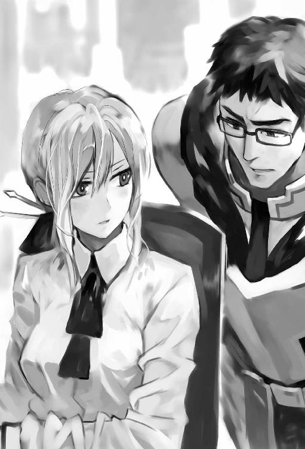

| ウォルテニア戦記 I (HJ NOVELS) | |
| 保利亮太 | |
| (2015) | |

プロローグ
西方大陸中央部の覇者、オルトメア帝国。その帝都オルトメアの郊外にたたずむ屋敷に二人の男が顔を合わせていた。
世界を深い夜の闇が支配している。
空を見上げれば分厚い雲によって月明かりは完全に遮られ、星の瞬きすらもない。
部屋の天井に下げられたシャンデリアからは、付与法術によって作られた光が窓の外を照らしはするが、それもほんのわずかな範囲でしかない。
その先に広がるのは人を拒絶する黒の領域だ。
この世界で明かりといえばほとんどの場合は魚油や植物油を使ったランプの事であり、法術を使う事の出来る人間は非常に限られている。その上、この世界の平均的な収入から考えると、油代はかなり高く、とてもではないが湯水の様には使えない。よほどの緊急事態でも起こらない限り、平民と呼ばれる中流階級の民ですら日没とともに帰宅し早々に寝てしまうのだ。
例外といえるのは、この屋敷が建つ歓楽街の様な場所か、貴族達の屋敷が建ち並ぶ地区くらいの物だろう。
他国から大国と目されるオルトメア帝国とはいえ、一般人の生活水準は日本と比べるまでもなく低いのだ。
「恐ろしいほどに深い闇ですね。まるで魂を持って行かれるような......僕もこの世界に召喚され八年近くになりますが、未だにこれだけは慣れません。正直に言って日本での生活が懐かしくて仕方がありませんよ」
カーテンの隙間から外を見ていた若い男が肩を震わせながら呟く。
街灯も自動販売機の光も、家々からこぼれ出る電灯すらもない真の闇。
夜とは、これほどまでに人の心に恐怖を感じさせるものであったのだろうか。
いや、夜の闇だけではない。宗教や文化から始まり、身近な生活習慣や洋服のデザインに髪型と言ったところまで、全てにおいて日本でのそれと比べてしまう。そして懐かしんでしまうのだ。あの頃は良かったと。現状が過去と比べて酷ければ酷い程強く。
「まぁ、仕方がありませんよ。こればかりはね。所詮ここは我々の懐かしき故郷ではないのですから。しかし、あの斉藤君がそんな感傷的な言葉を口にするとは......ねぇ。実に珍しい。数ヵ月ぶりに顔を合わせましたが。いやいや、今度の定例会で是非とも話題にさせていただきましょう。きっと代表以下みんな大爆笑ものですよ」
ソファーにゆったりと腰を下ろしながら、年代物のワインを楽しむ中年がからかいの言葉を投げかける。
「それは勘弁してください。須藤さん。そんな事をされたら僕の立場が」
慌てて後ろを振り向く斉藤に向かって、須藤は何時もと変わらない笑みを返す。
「いやいや。君は組織の次期幹部候補の中でも頭一つ飛び抜けているし、年齢も若い。年寄りばかりの幹部連中がからかいのネタにしようとするのは仕方がないでしょう。連中から見れば君は息子か孫の世代ですから。まぁ、家族の居ない孤独な年寄りの数少ない道楽だと思って付き合ってあげるべきでしょうね。斉藤君だって家族を失った経験を持つ人間だ。彼らの気持ちは理解できるでしょう？」
冗談めかして放たれた須藤の言葉が斉藤の古傷を抉る。一瞬、彼の表情が醜く歪んだ。
「須藤さん...」
小さく呟かれた言葉。その言葉に秘められた想いはいったいどれだけ重いのだろうか。彼の体から放たれる殺意が部屋の中の空気を凍てつかせていく。
普段であれば絶対に見せないむき出しの意志。須藤の顔を見据える斉藤の目に、危険な色が浮かんでいた。
その表情を見ながら、須藤は再びテーブルに置かれたワインの瓶を傾ける。まるで普段と何も変わらないかの様に。
「くくく、良い顔だ。その目を見たところ、まだまだ、恨みは消えていないようですねぇ。さっきは思いがけず貴方らしくもない言葉を吐くので、腑抜けてしまったのかと少し心配しましたが......いやいや、安心しましたよ。そうでなくてはいけない」
その言葉に斉藤は無言のまま視線を逸らせた。須藤が故意に自分を怒らせたのだと悟ったのだ。張りつめた部屋の空気が少しずつ緩んでいく。
「アンタ......良い性格をしていますよ。本当に」
普段の言葉づかいも年長者への礼儀も忘れて、斉藤は小さく吐き捨てる。
そんな斉藤の態度に、須藤は高らかに笑い声を上げた。
「失礼失礼。そうムキになって怒りなさんな。定期的に部下の隠された本心を探るのも上司の仕事ですから。特に我々の様な組織ではね」
そう言うと須藤は、手にしたワイングラスをテーブルに置き、顔の笑みを消して斉藤へと視線を向ける。そこに、先ほどまでの軽薄さは微塵も残ってはいない。
「まぁ、ここだけの話、私は斉藤君の剣の腕や頭の回転を深く信頼しているんですよ......君は組織にとって実に得難い人材です。その心の奥底に秘めた暗い欲望も含めてね」
全ての感情が消えた黒い穴。人の心を見透かす様な目が斉藤に突き刺さる。
「だからこそ、他に幾らでもいた候補者達の中から君を選び助けた。軍隊経験者でも、スパイでもない。成人式を迎えたばかりで社会経験もない、ただの若いサラリーマンでしかなかった君を......ね。そして、我々の悲願を果たす為に欠かす事の出来ない重要な仕事を任せているのです。期待には応えて貰わないと」
その言葉を聞いて斉藤の顔に嘲笑が浮かぶ。彼の心に浮かぶのは当時の無力な若造でしかなかった自分自身。傲慢で、世間知らずで、自分に不可能はないと盲信していた若かりし頃の自分。それ故に彼は全てを失ったのだ。
「今更言われなくても分かっていますよ、それくらいの事は。だからこそ、今は叫びだしたくなる想いをじっと我慢しているんですから」
固く握られた拳が怒りと屈辱で震えていた。
憎い敵に媚びへつらい、したくもない汚れ仕事を率先して行う。それもこれも全ては秘めた目的の為に必要な事だ。それが分かっているからこそ、斉藤は心の闇を隠し続ける。何時か訪れるその日まで。
それでも、何かの拍子に失われた過去を懐かしんでしまう。
（それは俺の弱さなのだろうか？）
ほんの一瞬、微かな疑問が斉藤の心に浮かんだ。
しかし、次に放たれた須藤の言葉がその疑問を掻き消していく。
「私は別に失われた過去を思い起こすこと自体を悪いとは言いません。私達は同じ境遇の仲間。気持ちは痛いほど理解出来ますしね。ですが、目的を忘れてはいけない。過去には永遠に戻れないのですからね。大切なのは未来。より良い未来を掴む為の努力ですよ」
心の奥底まで見通してくる様な須藤の言葉に斉藤は無言のまま頷く。過去は変えられない。彼の手から零れ落ちたものは二度とその手に戻る事はない。どれほど彼が取り戻そうともがき続けても。永遠に。ならば見据えるべきは未来だけ。
「結構結構。それが分かっているのであれば、私からは言うべき事は、何もありませんよ」
斉藤の眼に浮かぶ暗い炎を見て、須藤は満足げに頷く。
「さて、それでは仕事の話に戻りましょうか。我々の悲願を果たし、この大陸を怨嗟の炎と血で赤く染め上げる為にね」
須藤の口から囁くように漏れた言葉。それはまるで悪魔の甘い誘惑の様に斉藤の心を侵していった。
第一章 召喚
朝日が地平線から顔を出し始めた頃。杉並区のとある屋敷の庭で、二人の男が刀を手に向かい合っていた。
「早く打ち込んでこんか！」
閑静な住宅地の早朝に似合わない怒声が響く。周辺の住民が飛び起きるのも不思議ではない程の音量だ。
もっとも、この屋敷はかなり広い上に、庭に植えられた竹林と漆喰の土塀が周囲とこの屋敷とを完全に隔てている。
そのおかげだろう。彼らの稽古は人目に触れる事なく長年続けられてきた。
怒声の主は、白髪を後ろで纏めた老人。身長は百七十センチ台半ば程だろうか。胸は厚く剣道着のあわせの隙間から見ることの出来る腹筋は、見事なまでに六分割されていた。
また、その二の腕は太く筋肉質で、その右手には白刃の二尺八寸近い刀が握られている。
顔に刻まれた深い皺と白髪が無ければ、誰も男を老人とは思わないであろう。それ程までに老人の肉体は引き絞られ鍛え抜かれていた。
その上、老人の視線は糸のように細く鋭い光を放っている。並みの人間ではとてもその視線に耐えられるはずもないほど強い光。
容貌、体格、眼光、そして手に握られている刃を潰していない日本刀の持つ鮮烈な輝き。その全てが、老人の姿を眼にした人間の心を威圧し恐怖で縛り付けるはずだ。
しかし、老人の前に立つ青年の顔に動揺の色は微塵も浮かんではいなかった。いや、それどころか彼は明らかにこの状況を楽しんでいる。
「爺さん。刃引きしてない刀を打ち込んだら死ぬだろうが！ 別に爺さんが死ぬのはかまわないけど、警察の厄介にはなりたくないなぁ」
そう言うと、青年は老人をからかうかのように唇の右端を吊り上げて挑発的な笑みを浮かべる。
虚勢ではない。実際彼の心には、老人の放つ威圧感も日本刀への恐怖も存在しないのだ。
憎まれ口を叩いた青年の身長は百九十センチを明らかに超えていた。ひょっとしたら二メートルに届くかもしれない。
その彼の体を覆う筋肉は、鍛え抜かれた老人の体と比べてもなんら遜色はない。いや、若い青年の方が遥かに躍動感に満ち溢れており馬力がある様にすら感じられる。
その身長と、岩のごとき筋肉の鎧を考えれば、青年の体重は確実に百キロを超えていた。
まさに巨体。日本人離れした肉体と言える。
これで悪鬼のような面構えなら青年に近寄る人間はまず居ないだろう。しかし育ちが良いのか、温厚さと人の良さがにじみ出るその顔は、見る者を安心させる何かを放っていた。
「ふん。貴様にワシが殺せるのか？」
老人が青年の言葉を鼻で笑う。
もっとも侮蔑は言葉だけだ。本心では青年の力を信じているのだろう。老人の眼には鋭い眼光の中に慈愛の色が交じっている。
「さぁね？ 俺もそれなりに稽古を積んできたし、そろそろ俺の剣を受け損ねて死ぬ事もありえるんじゃぁねえか？」
そう言って笑みを浮かべた青年は、探るような視線を老人へ向けた。
「ほぉ、貴様の剣がな。よかろう！ その時は毎朝の稽古は免除した上に、ワシの遺産をそっくり貴様にくれてやるわ」
青年の挑発的な言葉にどこか嬉しそうな笑みを浮かべると、老人は手にした刀を両手に握り正眼の構えをとる。
「爺さんが死んだら誰がこんな朝稽古なんてやるかよ」
そんな老人の言葉に唇を吊り上げてニヤリと笑い、青年は同じ様に三尺近い刀を正眼に構えた。
「だが、爺さんの遺産が入るのは悪くないな！」
憎まれ口を叩き合いながらも、二人の視線は共に相手の体全体へと注がれている。
相手を視界に入れながらも、どこを見ているか焦点が定まらない状態。
両者の間の空気が凍りつく。先ほどまであったはずの親しげな空気など、もはや微塵も残ってはいない。二人の体から漏れ出しているのは本物の殺気。両者の心の中にはただ相手を斬るという意志しか残されてはいなかった。
「ふぉぉぉ！」
「かぁぁぁ！」
二人の口から呼吸が漏れる。
そして、限界まで圧縮された殺気が一気に二人の体から迸った。
まともな人間ならば、その気を浴びただけで体が動かなくなるほど激しい物だ。
鉄の擦れる音が庭に響き渡り、二人の人影が交差する。そして一瞬、赤い火花が薄暗い竹林の中に散った。
二メートルは離れていた両者の位置が一瞬で入れ替わり、二人は刀を再び正眼の構えへと戻す。
「この糞ガキが！ 中段から本気で喉を突きおったな！」
老人が青年へ向かって怒気を露わにして詰め寄った。
殺せたら遺産をくれてやると言い放った事など、既に忘却の彼方へと飛び去ったらしい。
老人の目は、青年の繰り出した刀が纏った殺気を見抜いていた。それは稽古では決してありえない渾身の力が籠った一撃。青年の突きは老人の命を本当に絶とうとしていたのだ。
しかし、それは老人とて同じ事。彼が青年へ食って掛かるいわれはない。
「刀を交えたら親でも殺せって教えた師匠が居るんでね......つうか、刀が擦れたって事は爺も俺の喉を狙ったんだろうが！」
老人の逆切れの所為か、青年の口調がかなり刺々しくなったのは致し方ないだろう。何しろ青年の技も心構えも、全て老人が幼少の頃より彼へ叩き込んだのだから。
刀を抜く時は相手を切り殺す時のみという、実戦的な心構えを叩き込んできたのは、他ならぬ老人自身であった。
それなのに、彼の教えを忠実に実行した青年に対して怒るというのだから、その理不尽さに青年が怒りを感じるのも当然と言えた。
しかし、そんな当然の指摘も、血が頭に上った老人にとってはただの戯言に過ぎない。
「当たり前じゃ！ ワシの剣は一技必殺よ。刃を交えるのは相手を殺める覚悟をした時だけじゃ！」
顔を真っ赤にして叫ぶ老人に、青年は呆れ顔で尋ねる。
「だからよぉ。使えないだろうが！ そんな危ないもん。この日本のどこで使うんだよ？ その技を。大体、弟子にそんな危険な技を仕掛けてどうする気だ？」
確かに、現代の日本では真剣を用いて果たし合いをするどころか、持ち歩く事すら禁じられている。
武術としての心構えと捉えたならば老人の考えは当然ではあるが、実際に使えるかどうかで考えた場合には青年の主張に軍配が上がるだろう。幾ら殺しの技術を修練したところで使える時と場所を得られなくては何の意味もないのだから。
しかし、青年の至極当然な意見も耳に入らないのか、老人の額に青筋が浮かんだ。
「五月蠅い五月蠅い！ 御託なんぞ並べてないで、お前は黙って稽古をすればええんじゃ！」
叫びと同時に、老人の刀が青年へと振り下ろされる。それは、もし青年が受け損なえば、彼の頭部を確実に断ち割るだけの力が込められた斬撃。
「だから！ 稽古なのに命のやり取りをしてどうすんだってんだよ！」
両者の刀が撃ち合わさる鈍い音が閑静な住宅街に響いた。五百坪を超える敷地のいまどき珍しい竹林の中で行われている稽古である。周りの住宅に迷惑を掛ける事は無いが、早朝から元気な二人であった。
両者の鎬を削る鈍い音が竹林に響く。
初めは拮抗していた両者。しかし、所詮は老人と青年。勝敗の行方は徐々に歳若い青年の方へと傾いてきた。
如何に鍛えていようと純粋な力勝負では老人に勝ち目はない。いや、今まで拮抗するほどの力を老人が持っていた事の方が驚きと言えるだろう。
少しずつ青年の力に押し込まれ、老人の首筋へ刃が近づいて行く。
しかし、後少しで首筋が切り裂かれるというところになって、突然老人が力を緩めた。そして、急に圧力が消えた事でバランスを崩しかけた青年の目に老人の親指が突き出される。
力での勝負が不利と判断したのだろう。老人は両手で握り締めていた柄から左手を離すと、青年の瞳に指を差し込もうとしたのだ。
さすがにこの不意打ちで青年は体を大きく引いて間合いをとる。
「糞ったれが！ 稽古で汚いまねをしてるんじゃねえよ！ いい歳こいて！」
そろそろ青年の我慢も限界に近いのだろう。老人に対する口調が汚くなってきた。
「フン。実戦を想定しない稽古に意味などないわ！ 汚いも糞もあるか！」
老人にとっての実戦とは余程汚いものなのだろう。剣術の稽古中に素手の攻撃をしてもまったく悪びれた様子がない。もっともその不意打ちを無事に回避する事が出来る青年もまた、本人が思っているほど普通とは言えないのかもしれないが......。
彼らの稽古は常に怪我や最悪の場合は死に至る危険を孕んだものだ。しかし彼らはお互いの技量を理解し、共にギリギリの状態で留めている。殺気は込めても殺意を纏わせているわけではない。二人が行っているのはあくまで実戦に即した稽古なのだから。
老人は後ろへ飛び下がると刀を鞘に納め、近くの竹に立て掛ける。そして、ゆっくりと青年の方へ向き直った。
全身の筋肉は脱力され、両腕がだらりと下がっている。それはまさに完璧な自然体。無構えこそ最高の構えというやつなのだろう。
「素手で来い！ お前のその馬鹿力が何の役にも立たない事を教えてやろう！」
「いいぜ？ お望みどおり相手してやるよ！ だが、刀で勝てない俺に徒手で仕掛けて勝てるのかね？」
青年の口に嘲笑が浮かぶ。
だが、老人は何も言わず顎で刀を納めろと合図をした。
青年は言われるまま刀を納め竹に立て掛けると、老人の方を向く。
左手の拳を顎の近くに添え、右手は正中線を隠すように下げる。左足に重心をかけ、右足は内側につま先を向ける。蹴りも拳も使用できる構えでありながら、人体の急所を隠す攻防一体の構えだ。
この二人にとって、素手であってもその危険度は何も変わらない。息の詰まるような緊張感。
しかし、唐突に静寂は破られる。突然、青年の腹が豪快に鳴ったのだ。
夜も明けきらぬ早朝に起き出し、稽古を始めて既に一時間が過ぎようとしている。空腹で腹が鳴るのも当然だろう。しかし、彼の師匠である祖父は孫が空腹だからと稽古を中断してくれるほど甘くない。
（クソ！ 腹減ったなぁ......爺め、いい加減終わりにしねぇかな？）
だが青年の祈りもむなしく老人の構えに隙はない。やる気満々のようだ。もし青年が無警戒に緊張を解けば、その瞬間に襲い掛かってくる事が目に見えている。
朝早くから叩き起こされ、命の危険を孕んだ稽古に空腹で臨む青年。彼を不幸だと思う人間は多いだろう。
しかし、神はそんな幸薄い青年に憐れみを与えた。ようやく救いの天使が舞い降りたのだ。
「いいかげんにしなさ～～～い！ せっかく作った朝ご飯が冷めるでしょうが！ まったく。二人とも朝から何をじゃれついているのよ？」
青年の視線の先には、黒髪を後ろでポニーテールにしたエプロン姿の少女がいた。
背は百七十センチ半ばにやや足りない位だろうか。意志の強そうな黒い瞳が魅力的な少女。
桐生飛鳥。それが彼女の名前だった。
「じゃれる？ この爺と？ 冗談はやめてくれよ......」
少なくとも青年には、朝早くから洒落や冗談で真剣を振り回し、素手で相手の目を抉ろうとする様な趣味はない。
さも心外だと首を振る青年の態度に、飛鳥は目を細めて尋ねる。
「じゃあ、何をやっていたのよ？」
改めて問いかけられ、青年は思わず首を傾げた。そして、稽古というにはあまりにも危険なこの日常を最も正しく表すであろう言葉を口にする。
「殺し合いかな？」
その言葉を口にした瞬間、竹林に鈍い打撃音が響き渡った。そして、それに合わせて、掌を打ち合わせたような音が混じる。
「痛っ......」
「何を馬鹿な事言ってるのよ！」
飛鳥が綺麗に整えられた形の良い眉を吊り上げ、手にしたオタマを振り上げて威嚇する。
どこから取り出してきたのか？
青年の頭に一撃を加えたのは、今、飛鳥が振り上げているオタマであろう。それはまさに電光石火の早業と言えた。青年の身体能力は非常に優れているはずなのに、彼の頭へ痛烈な一撃を加えたのだから。
その証拠に、オタマで殴られ蹲りかけた瞬間に繰り出された老人の拳を、青年は掌で受け止めている。中指の第二関節を角の様に突き出した拳。中高一本拳と呼ばれる拳だ。
正拳の様な破壊力はないが、その代わり急所を打ち抜くには最適な攻撃。これで、青年のこめかみを狙ってきたのを防いだのだ。
まさに野生動物の様な勘と厳しい修練の賜物といえる反応だろう。
ところが少女の攻撃だけは避けられない。もっとも、それはまだマシといえる。
昔の漫画でも同じような物がある。主人公が他の女へ手を出すたびにハンマーで殴られるという漫画が。
その作品もまた、普段は銃弾すらも避けられる主人公がヒロインのハンマーだけは避けられないという不思議な現象が書かれていた。それに比べればまだましといえるだろう。どれほど青年の肉体が頑強であろうとも、ハンマーの直撃を頭に食らえば死ぬだろうから......。
「飛鳥ちゃんよ。夫婦漫才は楽しいかね？」
青年がオタマで殴られる事になった元凶が、したり顔で飛鳥に話しかける。
既に、稽古時に纏っている気迫や威圧感はかけらも残ってはいない。どこにでもいる好々爺でしかない。
（避けられたとはいえ、俺に不意打ちを食らわせておきながら平然と笑ってやがる。だから嫌いなんだよ......この爺は）
正直言って、青年は自分の祖父でありながら、老人のこのギャップにはついて行けなかった。
「お爺ちゃん！ 何を言ってるのよ。私には彼氏いるしぃ......大体、亮真じゃねぇ？」
そう言うと飛鳥は意味ありげな視線を青年へと向けた。
猫が鼠をいたぶるのにも似た状況。どう答えようと青年には地獄行きの道しかない。
（冗談じゃない。俺だってゴメンだ）
青年は大きくため息をつくと、心の中で呟いた。
一人の女性として見た時、確かに桐生飛鳥は魅力的な女性だと言えるだろうし、その事を青年も否定するつもりはない。しかし、同時に幼い頃から共に過ごした年月が男女の関係に発展する何かを奪った事も事実だ。青年にとって桐生飛鳥とは姉や妹といった存在に近いのだ。
もっとも、その心情を言葉として出す勇気は青年にはなかった。従兄妹の性格を、彼はイヤと言うほど理解していたから。
沈黙。それこそが青年のとるべき唯一の選択肢だ。誰も傷つかない為の。
しかし、そんな空気を読まない存在がいる。
「そうは言うが飛鳥ちゃんよ。こうやって毎朝食事の準備をしてくれるではないか。ただの幼馴染ならせんだろ？」
老人がしつこく飛鳥に絡む。単純な好奇心なのか、はたまた何か思惑があっての問いかけなのか。どちらにせよ青年にはありがたくない流れだ。
だが、当の飛鳥はそんな青年の葛藤をよそに無邪気な笑みを浮かべて答える。
「うぅん？ タダじゃないから来てるんだよ。正確には月額二万円のお小遣いアップの為に！」
その言葉を聞き、青年は思わず納得してしまった。彼女の事だから、善意だけで毎朝の朝飯を作ってくれるとは思っていなかったが、どうやら叔母と月二万アップという金銭交渉をしていたらしい。
「う～む。我が血族は金の亡者じゃな......」
老人の呆れの籠った呟きを聞き、青年の脳裏にある事が過った。
（そういや、叔母も株取引で財をなした人だったな......）
まさに血は争えないといった感じである。
桐生飛鳥は容姿端麗で頭脳明晰。親しみやすく、美人にありがちな気取ったところもないまさに学園のアイドルだった。
料理は美味いし掃除洗濯から繕い物まで家事に関してはまさに完璧。金の管理には厳しいが、それも金銭感覚があると考えるならばマイナス要素にはならない。
万人は彼女のような女性を理想と言うのだが、青年にとっては冗談にしか聞こえない。飛鳥を一人の女性として見るには二人の距離はあまりにも近すぎたのだ。
「あぁぁぁ！」
突然飛鳥は右手に嵌めた腕時計に目をやると大声を上げた。
「私は弓道部の朝練あるから、もう行くね。良いわね、亮真！ 食器はきちんと洗っておくのよ」
そう言い残すと、デフォルメされた三毛猫のついたエプロンを外し、飛鳥は素早く母屋へと走って行く。
「ふむ......朝から慌ただしい事じゃな」
老人が腕組みをしながら、したり顔でそんな事を言った。
「爺がからかわなければ、余計な時間を食う事もなかったんじゃねぇの？」
青年が至極まっとうな指摘をする。
実際、この老人は事ある毎に要らぬ口出しをして場を乱す事を楽しむというはた迷惑な性格をしていた。
「お前が年寄りを敬わないからじゃ」
しかし、老人はまったく悪びれる様子もなく胸を張って言い返す。青年の正論にも堪える様子が全くない。
どうやら老人の辞書に反省の二文字は存在しないらしい。
（クソ爺が！ 時々絞め殺したくなるぜ......）
実の祖父とはいえ、本当に困ったものである。
「はぁぁ......」
青年は大きくため息をついた。それは、彼の心を正直に表している。
「何じゃ？」
青年はその問いかけを無視して母屋へ歩き出す。祖父の相手をしていると、食事をする時間どころか汗を流す時間すらもなくなってしまう。幾ら身だしなみに無頓着な性格とはいえ、この汗臭い体で登校する勇気は流石にない。
そんな朝のお約束が執り行われた関係で、彼が汗を流し学校指定のブレザーにその身を包んだ時には、食卓に用意された朝食がすっかり冷え切っていたのも当然だった。
青年の名前は御子柴亮真。見てのとおり幸の薄い十六歳である。少なくとも世間一般の評価ではそういうことになる。本人の評価は別にして。
亮真は毎朝、祖父に武術の稽古を受けている。それは第三者の目から見れば、虐待と言われかねないほど苛烈で厳しいものだ。
腕が未熟な子供の頃は青あざや擦り傷は日常茶飯事であったし、防具もつけずに木刀を振るえば骨折もあって当然。一度など加減されていたとはいえ、木刀で頭部を強打されて病院に担ぎ込まれた事もある。
そんな危険な修業を彼はずっと続けてきた。物心ついた頃からの日課なので、ざっと十数年は続けている事になるだろう。
本気で稽古を止めたいのなら機会は幾らでもあった。区の児童福祉課、小学校の担任、そして飛鳥の親である桐生夫妻。誰もが亮真に対して手を差し伸べたのだから。だが、亮真は自らの意志でその選択肢を選ばなかった。
一つには、祖父が決して厳しいだけの人間ではなかった事がある。稽古の時以外の祖父は快活で孫に対しての慈愛に満ちていたからだ。少なくとも、子供を痛めつけて楽しむような歪んだ心の持ち主ではなかった。
そして、もう一つの理由。それは亮真自身が祖父の教える武術を好んだ事にあるだろう。
実際の戦場を意識した戦闘理論。そして、命のやり取りを前提とした精神修養。スポーツ化された現代武道とは明らかに一線を画した物だ。どちらかといえば、軍隊式格闘技の方が近い。
そんな現代の考え方からすれば異端でしかない武術ではあるが、亮真には非常に肌に合っていた。
実際、小学生の頃に担任の教師に誘われ柔道教室に顔を出したことがあるが、たった一回参加しただけで終わった。子供心に自分の求めている物と違う事を察したからだろう。
それ以来、亮真は今まで以上の熱心さで稽古に打ち込むことになる。口では憎まれ口を叩きながらも毎日毎日。
そんな彼は祖父と二人っきりで、この杉並区の閑静な住宅街に暮らしている。
亮真の両親は、彼が子供の頃に死んだらしい。らしいというのは、死因を祖父がはっきりと伝えていないからだ。病死なのか事故死なのかも分からなければ、墓すら見た事がない。本当は何処かに有るのかも知れないが、亮真は墓参りをした事がないので知らないのだ。もしかしたら両親は、何処かで生きているのかも知れない。しかし、正直言って今ここにいない親に彼は興味がなかった。生きているにせよ、死んでいるにせよ、自分を養ってくれないなら意味がないと考えているからだ。だから当然興味もない。御子柴亮真という人間は、良くも悪くも現実主義者なのだ。
御子柴亮真の顔は並といったところだ。
人によってその評価は変わるが、決して醜い訳ではない。しかし、少なくとも美男子ではない。男らしい顔つきといえば良く聞こえるし、濃い顔立ちといえば悪くなる。まぁ日本人らしい顔つきという事だろうか。
体形ははっきり言って太めだ。二の腕は細身の女性のウエストほどもある。しかし脂肪太りではない。徹底的に鍛え上げ絞り込まれた鋼の筋肉である。
丸太の様な太い腕と太腿を持ち、今流行りの細マッチョとは対照的といえる。
高校での彼の渾名は眠れるクマ。温厚さと人の良さがにじみ出る顔と熊のような体形からつけられた渾名だ。ただしそれはあくまで表向きの理由。その本当の意味を知る人間は非常に限られており、彼らがその理由を話す事はなかった。いや、その彼らですら、亮真の本当の姿を知りはしない。
亮真のコンプレックスは老け顔。それが彼の最大の悩みだ。何しろ十六歳の彼をつかまえて、周囲の人間達は二十五歳から三十歳に見えると言う。ショックのあまりに寝込んでしまいそうな評価といえるだろう。
もっとも、実際に彼の顔が極端に老け込んで見えるのかといえばそういう訳でもない。幼いとか甘い顔とはとても言えないが、あくまで常識の範囲。顔だけ見れば一つか二つ上に見られる程度といったところか。どちらかといえば、彼が放つ落ち着いた雰囲気と日本人離れした体格の方が原因だろう。
そんな彼の数少ない利点は、コンビニで酒を買っても年齢確認を求められない事ぐらいだろうか。
幼い頃に酔った祖父が悪ふざけに飲ませて以来、亮真は酒の味が好きになってしまったのだ。
祖父もその辺に関しては彼に対してうるさく注意する事はない。逆に晩酌に付き合ってやれば喜ぶくらいだ。
亮真の趣味は映画鑑賞に読書とゲーム。別に運動神経が悪いという訳ではないが、どちらかといえば部屋に一人こもるほうが好きなタイプの人間だ。
社交性がないという訳ではないのだが、あまり賑やかなのは得意ではないのだろう。
そんな彼であるから、高校でもその体格以外に周囲の目を集める事は少ない。どこにでも居る少し暗めの高校生。当然のごとく彼女なんか居るはずもない。
世間一般の目から見れば幸の薄い少し暗めの高校生。それが御子柴亮真という人間の評価だった。
それでも、御子柴亮真がこのまま日本で生活を送っていれば、何時かは愛する女性と巡り合い温かな家庭を築いた事だろう。しかし運命の女神はそんな彼のささやかな夢も許しはしなかった。この日の昼休み。彼は地獄へ突き落とされる事になる。
「ふぅ......やっと飯か」
午前中最後の授業が終わり、御子柴亮真は大きく息を吐き出した。
進学校という訳でもないが、それなりに大学への進学率が高い公立高校である。この春に入学したばかりとはいえ、授業の内容に手加減はない。彼は頭が悪い訳ではなかったので、自分が興味を持つものに関しては抜群の知性を発揮したが、逆に興味を惹かれないものに関してその知性が発揮される事はなかった。基本的に彼はわがままで気ままな性格なのだ。
亮真は椅子に座ったまま大きく背伸びをする。
一番興味を持つものは歴史や文学。好みから言えば文系なのだが、その割に、亮真は英語が苦手だった。
（日本人なのだから、日本語だけ勉強すればいいじゃないか）
四時限目の授業が苦手な英語であり、特に精神的な疲労が激しい。
（まぁいい、とりあえず屋上でメシを食ってから、少し寝るか。今日もいい天気だしな）
国際社会である現代には通用しないような不満を抱きながら、亮真は鞄の中から布に包まれた大きな弁当箱を取り出す。飛鳥が朝に作っていった弁当だ。
彼の高校は十二時から十三時までの一時間が昼休みとなっているが、昼休みというのはあっという間に時間が過ぎてしまう。
亮真は弁当箱とペットボトルのお茶を持つと、教室の扉を開けた。しかし、机を合わせて昼飯を食べる準備をしているクラスメイトの一人が、教室を出ようとしていた亮真に気付き声を掛けて来る。
「御子柴君......また屋上で食べるの？ 偶には私達と一緒にどう？ 部活の事も話したいしさぁ」
髪の長い目の大きな、中々に可愛い女の子だ。
亮真はその声を聞き、教室の入り口で止まる。そして一瞬躊躇するような表情を浮かべたが、直ぐに彼女の方へ向き直ると笑顔で言い返す。
「ああぁ、悪い。また今度な！」
亮真は別に彼女達と食事をしたくない訳ではない。いや、本心から言えば、クラスの女子と昼ごはんを一緒に取れるなんてラッキーと喜びたいくらいだ。だが、彼は二つの理由からこの誘いに乗る事が出来なかった。
彼が昼食をクラスメイトと一緒に食べない理由、その一つは単純に弁当を人に見せたくないからなのだ。
何しろ飛鳥の作る弁当は可愛すぎて自分のイメージに合わない。少なくとも彼はそう思っていた。
世の中にはキャラ弁という物がある。
さまざまなキャラクターを弁当の具材で表現するという物で、世のお母さん達はこれの出来栄えに心血を注ぐらしいのだが、飛鳥もまたこれの達人だった。
彼女のバリエーションは実に広く、某ゲームに出てくる電気鼠に始まり実に様々なキャラを弁当の具材で表現する事が出来るのだ。
確かに食材を使ってキャラクターを表現する腕前は素直にすごいと亮真自身も認めている。なまじ彼自身が台所に立って食事を作ったりするだけに、飛鳥の腕前と努力が分からない訳ではないからだ。
しかし正直に言って亮真は、自分にキャラ弁を作る事を、止めて欲しくて仕方がなかった。
高校生にもなって弁当にゲームキャラの顔が描いてあるなんて......女の子に受けは良いだろうが、男の面子は丸潰れだ。
ところが製作者である飛鳥は、そんな亮真の男心をまったく考慮しない。
中学校までは給食だったので、特に問題はなかったのだ。ところが高校に入ってから弁当を持参となった。
両親がおらず、祖父も亮真の為に弁当を作ってやろうという様な人間ではない為、購買部でパンを買って済ませるのが習慣だった彼に、飛鳥が弁当を作ってやると言い出したのは四月の後半頃の話である。せっかくの好意と有難く受け、昼休みに弁当を広げた時の驚愕といったらなかった。
（誰にも見られなくてよかったぜ......）
未だに亮真はこの時の事を思い出すと、体が震えるくらいだ。
周りに見られない様に必死で食べたおかげで、亮真のささやかな面子は何とか守られる。しかし、帰宅後に飛鳥へ抗議の電話をしたところ、次の日の弁当は日の丸弁当（白米の真ん中に梅干し一個）にされてしまった。
（朝飯も酷かった......コーンフレークと牛乳だけって......）
別にコーンフレークと牛乳を貶すつもりはないが、早朝から激しい稽古を行い空腹の亮真にとってはまさに拷問としか言えないメニュー選択である。
それでも、何とか空腹を我慢して授業を受け、待ちに待った昼時。普段と変わらぬ弁当箱の蓋を開けた時の絶望感ときたらない。
結局、亮真は内心の不満を押し隠し、飛鳥に謝罪をする羽目になった。パンを買ったり自分で弁当を作ろうとすれば更に飛鳥の機嫌が悪くなる事が目に見えていたから。こうして彼の弁当は俗に言うキャラ弁となってしまった訳だ。
そんな訳でいつも逃げるように屋上で一人食事をしてきた訳だが、今日声をかけてきたクラスメイトは引き下がらなかった。
「今度今度って、いつもじゃない！ 放課後も直ぐに帰っちゃうし。その体格で文芸部なんてもったいないよ！ アタシも部活の先輩から結構キツク言われてるんだよね。一度、空手部の部活を見に来てくれないかなぁ？ 見学でもいいから」
彼女はそう言うと、上目遣いに亮真を見上げる。中々愛らしい表情だ。大抵の男なら彼女のその表情に負けて、彼女の提案に頷く事だろう。
だが、亮真はその誘惑を断固として撥ね除ける。実際のところ、この手の勧誘は高校に入学してからこの一月余り、連日行われているのだ。
「前にも言ったよね？ 俺は剣道も空手も柔道もやるつもりはないよ。本当悪いけどね」
相手は女子生徒。それもクラス内でそれなりの容姿を誇り、発言力のある女の子だ。内心はうんざりしていたとしても、それを露骨に表に出して不必要な反感を買う必要はない。あまり強い口調にならないように気を使いながらも、亮真ははっきりと拒絶の言葉を口にする。
ここで空手以外の武道を言葉にしたのは、周囲で聞き耳を立てている他のクラスメイトに聞かせる為だ。
この学校は勉強もさることながら、スポーツにもかなり力を入れている。
特に武道系スポーツの成績はかなり良い。地区大会では優勝の常連だし、全国制覇の経験こそまだ無いが、公立高校でありながらベスト十六、ベスト八と上位に食い込む事も珍しくない。
そんな高校に、御子柴亮真のような体格の良い新入生が入学すればどうなるか。各部が目の色を変えて勧誘に走るのも当然だろう。
百九十センチを超える身長に、鍛え抜かれた筋肉。それは、どう見てもボディビルで作られた見せる為の筋肉ではない。
それは、しなやかで、適度に脂肪を纏ったまさに肉の鎧。
何らかの武道を経験している事は疑いようがないのだ。
「うぅん、今日のところは仕方がないか。でも、本当に考えておいてね。御子柴君が入ってくれたら絶対優勝だって狙えるんだから！」
そう言うと、彼女は颯爽と身を翻して友人達が待つ机へと戻る。
余りしつこく食い下がっても効果がない事を、身をもって知っているからだろう。
（毎日、飽きもせず良く続くもんだ......普通に食事だけ誘ってくれるなら考えるんだけどなぁ）
勧誘に来た彼女の姿に苦笑すると、亮真は教室の扉に手を掛けた。
実際のところ飛鳥の弁当は対応できないほどではない。彼女達の前で食べる時は、弁当でもパンでも買ってくればいいだけの話。それを彼女達の前で食べ、飛鳥の弁当はおやつ代わりにでもすればそれで済む。だが、そこまで分かっていながら亮真がそれを選ばないのは、もう一つ大きな理由があるからだ。
一言でいえば部活の勧誘が煩わしいのだ。
別にスポーツや武道を批判するつもりはない。勿論、それに人生を費やす人間を貶めるつもりもだ。
しかし、ポイント制だの、体重別といったスポーツ化した武道など、亮真は全くやりたいとは思わないし、自分の力をひけらかす事にも興味はなかった。
亮真にとって武とは、敵を殺すものであり、敵に殺されない為の道具でしかなく、そうたやすく人前で披露する様なものでも、優劣を競い合う様な物でもないのだ。だがその一方で、自分の考えがこの平和な日本では受け入れては貰えない事を亮真自身が一番よく理解していた。どれだけ言葉を尽くして説明しようとも、決して認めては貰えないだろう。多くの人間にとって武道とは、既にスポーツか、さもなくば精神修養や文化保護といった意味合いしか持たなくなっているのだから。
両者の考え方には天地の隔たりがあり、歩み寄りの余地はない。
だから亮真は何も言わずにただ断るのだ。そして天気の良い日はいつも逃げるように屋上で食事をし、予鈴のチャイムが鳴るまで昼寝する事にしていた。お互いの為に。
「あぁ、ほんじゃ後でな」
亮真は探るような視線を向けるクラスメイトに声を掛け、教室を後にする。
そう、何時もと変わらない日常。しかし、その平穏な時間は長くは続かなかった。
それは、亮真が屋上へ続く階段を上っている時に起こった。そして、彼の長い長い旅はここから始まる。
「あ？」
突然、亮真の足元から床の感触が消えた。彼の体が垂直に落下し始める。彼が階段を踏み外したという訳ではない。確かに踏んでいたはずの階段の板が突然消失し、そのまま下に落ちたのだ。
亮真は左手を前に突き出すと、階段の縁に手を掛け体勢を立て直そうとする。しかし、床板の消失はほぼ階段全体に及び、彼の手は空を掴むのみだ。
見上げれば、校舎の蛍光灯の光が少しずつ細くなっていく。
そして遂に光は消えた。漆黒の闇の中を、彼はただ落ち続ける。
「あれ？」
亮真は突然異変に気が付いた。何時の間にか彼の体が、落下ではなく浮上している事に。
「どうなってやがる？ 夢か幻覚か。俺がどうかしたのか？」
亮真は一人呟く。
それはそうだろう。落下は物理的に言ってありえない事ではない。可能性は低いが、手抜き工事や強烈な地震などが原因で床が抜ける事はあり得るからだ。だが、浮上は絶対にありえない。
人は空を自力だけでは飛べないのだから。たとえどれほど体を鍛えたとしても。
亮真は上を見上げた。何時の間にか光が彼の頭上から降り注いでくる事に気が付いたのだ。
体が浮遊するに従って光が太く強くなる。そして、亮真の体は遂に光の中へと飛び出した。
「何処だ。ここは......学校にこんな場所があるはず......ないよな？」
光に目を細めながら、亮真は周囲を見回した。
亮真にとってここは校舎の中か、少なくとも高校の敷地内のはずだった。だから目の前に広がる神殿のような空間を前にしても、それが学校の中の施設の一つだと思った。だが、彼のその認識は、目の前の人物を見た瞬間に崩れ去る。
少しずつ光に目が慣れていく。おぼろげだった人影がはっきりとした形になった。
（なんだこいつらは。教師？ な訳ないな......）
亮真の目の前には五人の男が居た。
一人はゴテゴテと金糸銀糸で刺繍された真っ白なローブに身を包んだ老人。中世ヨーロッパを題材にした映画にでも出てきそうな格好だ。だが、これはさほど問題ではない。問題なのは、老人の後ろに立つ四人の手に握られている物だ。
四人の身長と体格は亮真とさほど変わらない。かなり鍛えられているのだろう。
二の腕の太さや太腿の発達具合を見れば、彼らが素人では無い事が一目瞭然だった。
男達は全身を金属製の甲冑で覆い、古代のギリシャやローマで使われていたコリュス式――頭に鶏冠がついた兜でＴ字形の鼻あてがついている――に似た兜で顔を守り、手には斧槍を握っている。
鎧兜が本物であるかどうかは今の亮真の目では判断がつかない。しかし、祖父との稽古で真剣を扱ってきた彼の目は、男達が持つ斧槍が紛れもない人殺しの道具である事を見抜いた。となれば、彼らが腰に帯びている剣もまた、本物であると推察する事ができる。
鎧だけなら、亮真は彼らの格好を仮装衣装だと思っただろう。
一般的な甲冑ではないとはいえ、金を掛ければ日本でも模造品を購入出来ない訳ではない。
勿論、そうそう買う人間は居ないだろうし、仮に購入したとしても、実際に着込むやつはもっと居ないだろう。しかし、少なくとも現実にそれを着込む人間が居るという事実は、現実に起こりえる事として、亮真が理解出来る範囲ではあった。しかし、彼はここを異世界とは言わないまでも、自分が生きてきた日常とはかけ離れた場所だという事だけは強く認識しない訳には行かない。
亮真に向けられた斧槍の全てが研ぎ澄まされた真剣だったからだ。
祖父から譲り受けた秘蔵の一振り。その刀の手入れを自ら行う亮真に真贋の区別がつかない訳がない。
そして、冗談で本物の斧槍なんて物をそろえるとは思えない。第一、世界でも有数の治安を誇る日本でこんな物を向けられる状況など想像が出来ない事だ。
仮に強盗や通り魔だったとしても、わざわざ斧槍なんて物を用意する物好きな人間など居るはずもないのだ。出てくる武器などナイフや包丁が精々だろう。
そして、男達の体から放たれる殺気は本物だった。
伊達に幼い頃から武術を仕込まれてきた訳ではない。祖父から叩きつけられるのと同じ種類の気配。肌をピリピリと刺すような感触が亮真を襲う。
（オイオイ、こいつらマジかよ。いや、こいつはマジだ......こいつらの眼は......）
足運びや斧槍を構える姿はとても素人には思えない。彼らは間違えようもなく兵士だ。斧槍という特殊な武具の取り扱いに習熟したプロ。
その事を悟った瞬間、亮真の心の中で何かが切り替わった。日常から非日常へと。彼の平凡な日々が音を立てて崩れ落ちていく。
「ほぉ？ 今回の召喚は当たりだったようじゃな？」
ローブを纏った老人が、亮真へ視線を向けながら後ろに立つ男へ声を掛けた。
話しかけられた男の被っている兜には、頭のところに赤い房飾りが付いている。一人だけやや豪華なところを見ると、四人の中でも隊長格なのだろう。
「いえ、ガイエス様。その判断はまだ早いと思われます。確かに大した体格ですが、見掛け倒しという事も考えられますから......なにせ、今までの百人以上召喚しておりますが、モノになった人間は僅か十名にも満たないですので」
二人の視線が亮真を射貫く。まるで商店に並ぶ品物を値踏みするような目だ。
「ふむ。それもそうか......まあ良い。使い物になるかどうかは育ててみなければ分からんしな」
男の言葉に軽く頷くと、老人は顎で亮真を指し示す。
「さっさと呪印を刻んでしまうとしよう......行け」
その言葉を受け、三人の兵士はさっと亮真の周りを囲む様に扇形に広がり、斧槍を突きつけながらゆっくりと歩み寄ってくる。
（こいつは一体誰なんだ？ どうなっている？）
次々と湧き上がる疑問を亮真は必死で抑えた。連中の目的が何なのか、それは今の彼には分からない事である。
何しろ、さっきまで学校に居たはずなのだ。それが突然、目の前に刃物を突き付けられているこの状況。理解出来るはずもなかった。
しかし、亮真にとって碌な事にならない事だけはハッキリしていた。
他人へ刃物を向ける時、それは相手に悪意が有る証拠。
亮真は素早く四方を見回した。まず考えるべきなのは逃げ道の確認だ。敵は老人と武装した男達四人。まともにぶつかりあえば、勝敗は見えているのだから。
しかし、この部屋に逃げ道に使える様な窓などはどこにもなかった。十メートル近く頭上に換気用の窓らしきものが見えるが、あの窓を使うには梯子がなくてはどうにもならない。そうなると、唯一の脱出路は老人の後ろに見える鉄製の扉だけだ。
亮真は、自分自身を守る為に選択しなければならなかった。碌でもない何かを黙って受け入れるか。それともここの連中を殺してでも逃げる事を選ぶのかを。
（何かを本気で守りたいのならば、敵に容赦はするな）
亮真の脳裏に祖父の教えが浮かんだ。
言葉にした事はあっても、それを実行した事はない。少なくとも、御子柴亮真の人生の中で、殺人を覚悟する必要などなかったのだ。しかし、状況が状況である以上、非常な決断をするしかない。
（逃げるのは良い。問題はここがどこで、どういう状況なのかって事だな）
状況が判らない以上、それを説明させるには誰かを問い詰めなければならない。少なくとも、訳の分からないまま闇雲に逃げたとしても、事態が好転する事はないだろうから。
となれば選択肢はただ一つ。
一番弱いであろうローブの老人のみを生かして、残りの四人を殺すのだ。
勿論、それは許されざる決断。ただ単に人殺しを覚悟するのとは訳が違う。
現代人として、それは決してしてはいけない選択。だが、亮真に迷いはない。彼は自らが生き残る道を選んだのだ。たとえそれが、血塗られた修羅の道であろうとも。
亮真の中に隠され続けてきた獣の本性が目覚め始める。
（こっちは素手。それに対して相手は長柄の武器に鎧を着込んでいる男四人か......真っ向から飛び掛かるのは不利だな。虚を衝いて確実に殺さないとこっちが危ない......ならば）
亮真の頭脳が、現状から最も生存の確率が高い答えを導き出す。それを実現する為の技術も彼は既に祖父より教え込まれていた。もっとも、実際に使うのはこれが初めてではあったが、彼の心に迷いはない。
亮真は心の中の殺意を消す。それと同時に、彼の心の中に湧き上がっていた、不安や怒り、そういった感情が消え去っていく。
そして、亮真は手に持っていた弁当箱を床に落とすと、歩み寄ってくる兵士達へと満面の笑みを向けた。
それはまるで、親しい友人に向ける様な笑顔。
自分達に向けられた亮真の笑みに、兵士達はお互いの顔を見合わせた。彼らも、まさか召喚された人間が自分達に笑いかけるとは思いもしなかったのだろう。しかし、それはある意味当然の反応と言える。誘拐された人間が、誘拐犯に笑いかけるような物なのだから。
兵士達は戸惑い、歩みを止めてしまう。そしてそれは、亮真の狙い通りの行動だった。
次の瞬間、亮真は背を屈めながら近づいてきた三人の中で一番左端に立っていた男に走り寄ると、その男の左目に人差し指を根元まで突っ込んだ。彼の指が、男の眼球と眼窩の間にある隙間に深々と突き刺さる。
「ぎゃぁぁぁぁ！」
兵士の口から獣の様な絶叫が迸った。
眼は人体の急所の中でも特に危険で即効性のある急所の一つだ。小さな埃が一粒入っただけでも激痛に襲われるこの急所を、亮真は容赦なく抉った。
通常なら狙ってもそう容易くは抉れない箇所だが、亮真の浮かべた笑みが兵士達の心に一瞬の空白をもたらしたのだ。
奇襲とは相手の意志の外から襲い掛かる事。だから、両者が向かい合っていたとしても、奇襲は成り立つ。別に背後から忍び寄ったり、物陰から不意を突く事だけが奇襲ではないのだ。
そして、亮真は身に染みついた教えの通りに男へとどめを刺そうとする。彼はそのまま指を抜かずに眼窩に引っかけ、一気に腕を下へと押し下げた。
兵士達の不運は鎧などを着込んでいた事だ。
いくら頑強な肉体を誇る亮真でも、鎧の上から素手で殴って四人を殺す事など出来ない。となれば、どこか隙間から急所を狙う必要があるという訳だ。そしてもっとも手っ取り早く効果が高いのが眼である。男はただ殺されるよりも何倍もの苦しみを味わう事になった。
指を眼に突っ込まれたままの兵士は、獣の如き叫びを上げて倒れこむ。
亮真の目の前に、兜と鎧の間から彼の頚椎が曝け出された。
流れるような動作。無防備な男の首へ、亮真は手加減の無い肘を落とす。百キロを超える亮真の全体重を掛けて。
水気を含んだ何かが叩き潰されるような、鈍い音が広間に響いた。
亮真の体重が完全に掛けられた肘が、兵士の首の骨を砕いた音だ。
床に叩きつけられた兵士は口から血の泡を吹き出し、床に横たわった。
亮真が襲い掛かり、兵士の一人を殺すまでに掛かった時間はほんの数秒。
それは、あまりに予想外の展開。誰もが呆然としている。
そんな中、亮真は横たわる兵士の腰より剣を抜くと残りの兵士へと駆け寄った。奇襲がうまくいったとはいえ、いまだに亮真は不利な立場なのだから。
「オラ！」
野獣の様な咆哮と共に、亮真は走りながら手にした剣を目の前に立ち竦む兵士の顔を目がけて力一杯投げつける。
兵士の顔に驚きの色が浮かんだ。まさか唯一の武器を投げつけるとは思わなかったのだろう。慌てて彼は亮真に向けていた斧槍を立てると、柄の部分で飛んできた剣を弾いた。しかし、それは亮真の狙い通りの行動。
兵士は剣を避けようと体をのけぞらせた結果、鎧と兜に守られていた喉を亮真の前に曝け出してしまう。どれほど全身を鎧で固めようと、どこかに必ず隙が出来る。そして隙が無いなら作れば良いだけの事。
亮真はがら空きになった男の喉をめがけて、渾身の力を振り絞った右の貫手を叩き込んだ。
亮真の手に男の気道が潰れる感触が伝わる。
（これで二人。ここからが勝負だ！）
即死はしないが、気道を潰された男に待つのは窒息死しかない。亮真は素早く兵士から貫手を抜くと、身構えた。
残りは老人を入れて三人。流石に奇襲の効果も消え去る時間だ。
「死ね！」
突然、亮真の背後より叫び声と共に斧槍が突き出される。兵士の顔に浮かぶのは仲間を容赦なく殺された事への怒りだ。
しかし、周囲を油断なく警戒していた亮真にとって、避ける事は造作もない。
亮真は喉を潰され倒れ込んだ男の肩を掴むとそのままその体を飛び越える。男の体を盾にしたのだ。
鈍い金属のぶつかるような音が響く。力一杯突き出された斧槍の刃が、喉を潰され倒れ込んだ兵士の鎧を突き破り体に刺さった音だ。
（馬鹿が）
亮真は男の後ろより転がり出ると、そのまま必死で斧槍を仲間の体から抜こうともがく兵士の無防備な喉へ、再び貫手を叩き込んだ。
人間の体という物は意外と丈夫で、あまり深く胴体部分を刺すと刃が抜けなくなる事がある。筋肉の収縮は一般人が思っているよりも強靭なのだ。しかも、今回は鎧の上から突き通している為に、なおさら斧槍を抜けなかったのだ。
（残り二人）
亮真の視線が立ちつくす二人を睨みつける。
残っているのは、他の連中とは違う飾りの付いた兜を被った隊長らしき兵士と、ローブを着込んだ老人の二人。
隊長は手に持っていた斧槍を床に投げ捨てると、腰の剣を抜いた。亮真の攻撃を見て、小回りの利く剣の方が有利と判断したらしい。四人目は今までのやつらとは出来が違う様だ。やはり兵士達の隊長格なのだろう。彼は最低限の状況判断が出来ていた。
隊長は剣の刃先を下に向け、刀身が体に隠れるように右脇に構える。
（脇構え......剣の長さを見せないつもりか。一撃でこっちを斬るつもりだな）
剣道などでは用いる竹刀の長さに規定がある上に、有効打突の部位を小手や胴など厳格に固定している為、自分の間合いを隠したり、足など下半身を攻めるのに対して有効な脇構えを使用する意味は少ない。しかし、真剣を用いる殺し合いであれば話は別だ。特に、刃物である以上完全に避けるか防がなければ必ず傷を負ってしまう。そして、傷を負えば血を失う事で体力を消耗させ、痛みで集中力を乱す事が出来る。いやそれ以前に、たとえ足であろうと血管を切断する事が出来れば、そこで勝負は決まるのだ。
亮真は隊長の構えを見て、彼の狙いを正確に把握した。
この構えから放てる最も効率的な斬撃は二種類だけ。
右から左へ薙ぐ胴斬りと、右足から左肩に斬り上げる二つだ。
それ以外の斬撃を繰り出すには、一旦、剣を構え直す必要が生じる。しかし、それでは致命的な隙が出来てしまう。そして、目の前の男が、そんな愚策を選択するとはとても思えない。
じりじりとした緊張感。相手の間合いが読めない亮真に対し、隊長はじっと構えたまま隙を窺う。
こう着状態のまま時間だけがゆっくりと過ぎ去っていく。
しかし、事態は突然動いた。
目の前の敵をどうしたものかと考え込む亮真の耳に、突然老人の声が飛び込んで来た。
「雷の精霊よ！ 風の精霊よ！」
後ろを振り向くと、いつの間にかローブの老人がこちらに手をかざして何やら言葉を発している。それは人を超えた力を持つ存在に捧げる祈りに似た言葉。
（なんだ？ あれは......いや、まずい！）
亮真はこの時まで法術という物を知らなかった。だが、彼の生存本能が叫ぶ。
（避けろ！）
亮真はとっさの決断で、剣を構えたままの隊長の方へと走り寄った。
それは一か八かの賭け。万全の構えで待ち構える隊長に自ら突っ込むのは、虎の口に手を入れるのと同じだ。しかし、背後で龍が火を吐こうとしているのならば他に選択肢はない。
亮真の胴を狙って隊長が放った右脇構えからの斬撃を、そのまま隊長の左側へすり抜ける様に体を刃の下に潜り込ませて避ける。
頭上を刃が通り過ぎ、切断された髪が数本宙に舞う。
危険な賭けだ。胴薙ぎであれば、亮真の体は今頃切断されていただろう。しかし、隊長が選んだのは右足から左肩への斬り上げ。その選択が明暗を分けた。
背後へ回り込んだ亮真は、がら空きになった隊長の無防備な背に蹴りを入れる。目的は隊長の体を盾にする事。
そして、その狙いは正しかった。
「共に我が下へ集え。我が求めに応じ我が敵を砕け！ 風雷乱舞！」
亮真が地面へ倒れこむのと同時に、老人の詠唱が終わり、手より放たれた刃の如き暴風と激しい雷が襲い掛かった。
「くたばりおったか！」
必殺の呪文を放ち、老人は吐き捨てるように呟いた。
荒れた息とは裏腹に老人の顔には必勝の笑みが浮かんでいる。自らの使用できる法術の中でも、特に殺傷能力に優れ、詠唱の短い術を選んで放ったのだ。あれを喰らって生き残れるものなど居ない。そう断言できるほどの法術。
だから、老人は気を緩めてしまった。亮真が本当に死んだかを確かめる事なく。それが致命的なミスとなるとも知らずに。
地面に伏せていた亮真は、老人の気が緩んだのを察して一気に飛び起きた。それはまるで獲物に飛び掛かる野生の猿の様な俊敏さだ。
亮真と老人との間合いが瞬く間に詰められていく。
老人も直ぐさま気がつき詠唱を開始する。しかし、今更間に合う訳がなかった。
「何ぃ。馬鹿な！ あれを喰らって......クソッ。全能なる......」
目の前に迫った肉の壁に圧倒され、老人の顔が醜く歪んだ。
「グホォ」
老人の右脇腹から低くこもった音が響くと同時に、全身が痺れる様に動かなくなっていく。
容赦なく打ち込まれた亮真の拳が、老人の右の肺から強制的に空気を叩き出し、詠唱を中止させる。
タネを明かせば簡単な事だ。
隊長の背を蹴り飛ばした後、亮真は床に伏せた。ただ、それだけの事。
もし、老人の放った術が炎だったら、亮真の肉体はその術がもたらす高熱で直撃をしなくても、大ダメージを負っただろう。もし、老人の放った術が大地から石の槍を無数に突き立たせる術だったら、亮真はその身を貫かれたに違いない。しかし、老人の放った術は雷電と暴風の術だった。
それは老人にとって殺傷能力の高い一撃必殺の術。しかし、雷電は金属の鎧を来た男を前面に蹴り飛ばした結果、避雷針の代わりになり避ける事が出来たし、暴風も床に伏せる事で亮真の頭上を通り過ぎたのである。
老人の唱えた詠唱の中に含まれた単語。その意味を本能的に察して床に伏せる事を選んだ亮真の判断力の勝利である。
そして、人間は確信した時に最も油断する。自らの法術が絶対に当たるという過信。そして当たれば、必ず相手を殺せるという過信。この二つの過信が、老人の勝機を奪ったのだ。
「なぁ、爺さん。ここ何処よ？」
肋骨の何本かが砕けたのだろう。右の脇を両手で押さえながら蹲る老人に近寄り、亮真は穏やかな声で問いかける。
しかし、その目は見るものを凍てつかせる冷酷な光を放っていた。
「ぐうううう......」
痛みで言葉も出ない老人。しかし、そんな老人の都合など亮真にとっては意味のない物だ。
「なぁ？ 聞いてるのかよ」
生木をへし折った様な嫌な音が辺りに響く。亮真の右の蹴りが老人の左の肘を砕いた音だ。続けて、躊躇無く繰り出された彼のつま先が、老人の左の脇腹へ突き刺さった。
「なぁ、爺さん。質問に答えてくれよ？ あんたらはさっき、散々「死ね！」だの「くたばりおったか！」なんて叫んでいたんだから、言葉が通じないなんて事はないだろう？」
老人の外見はどう見ても日本人には見えないのだが、今の亮真にそんな事を気にする必要はない。大切なのは言葉を交わすことが出来るという事実のみ。
亮真の顔には邪気の無い笑みが浮かんでいる。穏やかで人の良さそうな笑みだ。だが、その笑みこそが老人にとって、最も恐ろしい顔だった。
「ぐぅぅぅぅ......」
亮真の問いに答えないという選択肢など老人には存在しない。だんまりを決め込める様な相手ではないと瞬時に悟ってはいた。しかし、老人は苦痛で言葉を発する事が出来ない。
老人はひたすら痛みに耐え、その場に蹲っている。亮真の蹴りを喰らい、肋骨を数本砕かれた結果だ。
「なぁ、爺さん。俺はあんまり好きじゃないんだぜ？ こういう事はさ！」
亮真は蹲る老人の左耳を掴むと、そのまま上にねじり上げた。老人の体重が左耳にかかり千切れ始めたのか、少しずつ血が滴ってくる。
「や。やめろ。手を離してくれ」
このまま無言でいたら何をされるか分からない。そんな恐怖に老人の心が埋め尽くされていく。
「あぁ？ 離せだと？ テメェ、人に物を頼む人間の態度じゃねぇなぁ。まったく。いい歳こいて口の利き方も分からない様だな」
相変わらず亮真の顔には笑みが浮かんでいたが、彼の目は糸の如く細まり、その眼光は氷の如く冷え切っていた。
それは普段、理性という鎖に抑えつけられ、決して人に見せる事のなかった、御子柴亮真という男が持つ本性なのかもしれない。
獣の本性。老人はその亮真の真の本性を知る最初の犠牲者となった。
老人の脇腹から再び鈍い音が響いた。
その瞬間、老人の口から人から放たれたとはとても思えない絶叫がほとばしる。
亮真の鍛え上げられた肉体から繰り出された容赦のない左拳が、身長百七十センチ、体重六十キロ前後の老人の体を、二メートル程も吹き飛ばした。
赤い血が床に飛び散る。老人の耳を掴んだまま殴ったせいで千切れたのだろう。亮真の右手には血に塗れた耳が残っていた。
「なぁ、爺さん。素直になろうぜ？ 幾つか質問に答えてくれれば済むんだからよ」
うつ伏せに倒れる老人へ、ゆったりとした歩調で亮真が歩み寄る。彼にとって今の老人は人の形をした何かでしかない。人が人を人として認めない時、どれほど冷酷になれるかという良い見本だろう。
「や......やめ......ゴフゥ......てくれ。話す、何でも......話すから......」
砕けた肋骨が肺を傷つけたのだろう。喋る度に老人の口から血の泡が飛ぶ。千切れた耳から滴った血のせいで、彼の顔は真っ赤に染まっていた。
さすがにこれ以上の苦痛には耐え切れなかったのだろう。老人は痛みに耐えながら、必死に言葉を続ける。
「ふぅ。良かった良かった。それじゃ、質問その一な。ここ何処？」
亮真が最初に口にした疑問。それはここが日本なのかどうかだ。それによって、老人に対しての扱い方がかなり変わってくる。
「ここは......オルトメア......帝国の......王宮じゃ」
「オルトメア帝国？」
老人の言葉を聞いて、亮真の顔に疑問の色が浮かんだ。
社会科が好きな亮真は地理も得意である。彼は地球上のほとんど全ての国名を言う事が出来た。だが、老人が口にしたオルトメア帝国なる国名に聞き覚えはない。
「そう......じゃ。西方......大......陸中央......部の覇者じゃ」
そう言うと、老人は再び血の混じった泡を吹いた。
（ふむ......日本ではないのか。とりあえずは良かったぜ）
日本の法律上、正当防衛という概念は存在しているものの、欧米に比べて適用されるケースがかなり限定されている。自分の身を守る為とはいえ、四人を殺した上に加害者である老人を痛めつけているこの状況で正当防衛や緊急避難を警察や検察が適用してくれるかどうかはかなり微妙だ。普通に考えれば過剰防衛とされ執行猶予付きの刑罰を科せられるだろう。下手をすれば加害者と被害者の立場が逆転してしまう可能性だって考えられる。
勿論、細かく調べれば亮真が被害者である事は明白だが、それを証明する為には長い時間が必要となってしまう。己の身をただ守ったというだけなのに、人生の大切な時間を無駄にされてしまうのだ。
だが、ここが日本ではないのであれば、その心配はない。この国の法律がどうであっても、そんなものは無視してさっさと日本へ帰ればそれで済む。
懸念の一つを払しょくされ、亮真は内心胸をなでおろした。
「じゃあ、次の質問な。何で俺はここに居る？」
これも極めて当然な質問だ。学校に居たはずの亮真が、オルトメア帝国などという見た事も聞いた事もない国に居る理由。それは。
「わ......わしが......お前を召喚したからじゃ......」
予想外と言うにしてもあまりにも突飛な発言。しかし、亮真の表情はまるで変わらなかった。
「ふぅん。まぁそうだろうな」
亮真は老人の言葉に気のない返事を返す。しかし、表面に出ない心の奥底で、彼がどう思っているのか、それは誰にも分からない。彼の心の中を窺い知る術はないのだ。
しかし、三番目の問いが彼の心情を如実に物語っていた。
「さて、三つ目の質問だ。こいつが一番大事だからちゃんと答えてくれよ？ あんたの今後に大きく関係するからな」
そう言うと、亮真は老人の顔を覗き込みながら尋ねる。
「俺は元の世界に帰れるんだよな？」
声色は穏やかだ。言葉は荒っぽいが他人を威圧するような感じはない。まるで親しい知人に話しかけるような気安い態度。だがそれが余計に恐ろしい。
老人の心臓の鼓動が破裂寸前まで脈動する。今、一番聞かれたくない質問だったからだ。
老人は、必死でこの場をやり過ごす為の嘘を考える。
（戻れると言うべきか？ いや、戻れるなどと言えばこの男は間違いなく今すぐ早く戻せというだろう。なら、なんと言う？ 本当のことを話してしまえば、こいつは私を躊躇なく殺すだろう。準備に時間が必要だと言うか？）
オルトメアの頭脳と謳われ各国にも恐れられる、オルトメア帝国主席宮廷法術師ガイエス・ウォークランドが、こんな下賤な者に殺される訳には行かないのだ。
ガイエスの双肩には、帝国の未来が掛かっているのだから。
（やはり、このまま何とか時間を稼ぐしかない......異変を察すれば、警備の兵士達が飛び込んでくるだろう）
しかし、そんなガイエスの望みはかなわなかった。
骨折の苦痛と闘いながら必死で頭を働かせるガイエスは、ふと、自分の首に亮真の指が添えられている事に気がつく。
別に力が込められている訳ではない。だからこそ、今まで気が付かなかったのだ。
「なぁ、爺さん。嘘はいけないぜ？ 嘘は」
亮真はガイエスの髪の毛を乱暴に掴み、顔を覗き込んで言った。
「な......嘘な......ど......」
あまりにも断定的な言葉にガイエスの心はさらに乱れる。
「考えてたろ？」
ガイエスの心中をズバリと言い当て、亮真は続けて言った。
「あんたの血さ。あんた。嘘を俺に見破られるかもって怖くなったろ？ そのせいで脈が速くなったのさ」
あまりにも確信に満ちた言葉。その圧倒的な自信にガイエスは返す言葉もなくただ黙って顔をそむける。
その態度に亮真は自分の予想が正しかった事を悟る。
実のところ、亮真の言葉はタダのハッタリでしかない。
確かに亮真は脈の速さを測りはした。しかし、脈が速くなった原因が嘘をつく為なのか、骨折に因る痛みの為なのか、はたまた単純に御子柴亮真という男に対して抱いた恐怖の為なのかを判別など出来る訳がない。
だが、亮真には確信があった。それは三つ目の質問を行った後のガイエスの顔に浮かんだ恐怖に満ちた表情だ。
つまり亮真に殺されかねない程に悪い内容だという事。そしてそれを老人が口にしないという事は、この場を切り抜ける為の嘘を考えている時間と見るべきだ。
「き......貴......様、そんな能力......が」
亮真の狙い通り、ガイエスの顔に未知なる存在への恐怖が宿る。
「さぁ、はっきり言いな。俺は帰れるのか？ 帰れないのか？」
「無理......だ。少なく......とも、わしには出来ん......」
散々悩んだ挙句、ガイエスは遂に口を開いた。その表情には諦めの色が浮かんでいる。
しかし、最悪の言葉を聞いても亮真が怒りを露わにする事はなかった。少なくとも表面上は。
「ふむ。まぁ爺さんの態度を見れば予想はついてたけどな。なら、帰る技術は有るのか？」
絶望的な老人の言葉を聞いても、亮真の口調は穏やかといってよい。そんな彼の態度にガイエスの心の中で、恐怖が一段と大きくなる。
（なんだ......？ こやつなぜ怒らない？ なぜ動揺しないのだ？）
ガイエスが過去に召喚した、百人を超える異世界人の中には居なかったタイプだ。
今まで召喚した異世界人の大部分はパニックを起こし喚き散らした。泣き叫び、懇願し、怒鳴りまくる。極めて当然の反応。だが、そこには何の力も意味もない。当然、彼らは何も出来ずに兵士達に拘束され、ガイエスは服従の呪印を施してきた。
勿論、召喚した異世界人の中には、身の危険を察知したのか、ガイエス達へ殴りかかる事を選ぶ人間も居た。だが、所詮は素手。武装した兵士達の相手ではない。多少は手間取ったにせよ、最後には兵士達に取り押さえられ、ガイエスの前にひれ伏す事になったのだ。
しかし、目の前に立つ青年は違った。
召喚直後の異世界人が、たった一人で四人もの兵士を殺せるなど、ありえるはずもなかったのだ。
「わ......しの知る限......りでは、どの国にも......ないはずじゃ」
様々な疑問がわきあがる中、ガイエスは正直に問いに答える。
先ほどのやり取りで、ガイエスには嘘をつくという選択肢がないからだ。
「召喚は出来るが帰還は出来ないって事か。なんでだ？」
亮真が顎を指で掻きながらガイエスに尋ねた。
「そ......それは」
その問いに。ガイエスの鼓動はより一層速くなる。
（不味い......どう言えばいい？ 何を言えばわしは生き延びられる？）
ガイエスには、亮真の問いをどのように答えれば自分が生き残れるのか分からなかった。
今までの亮真の行動を見ていれば、敵に微塵も容赦をしない、酷薄無情な男である事がガイエスには十分に理解出来ていた。そして、今の問いに対して真実を答えたならば、この冷酷な男が自分を生かしておくはずが無い事も。
答えるのを躊躇うガイエスの姿を見て、亮真の口に笑みが浮かぶ。
「ふむ。よほど答え難いらしいな......良いだろう。なら、俺が代わりに答えてやるよ」
亮真の言葉を聞き、ガイエスの表情が恐怖と驚きで強張った。彼の心臓が張り裂けんばかりに脈打つ。
（まさか......いや、分かるはずがない。異世界に来た直後の人間などに......おぉ、神よ。光神メネオースよ）
自ら信じる神へ祈りを捧げる。しかし、ガイエスの願いは叶えられる事はなかった。亮真の口から放たれた言葉は、彼を地獄へと誘う。
「異世界人を送り返す技術がないって事は、おそらく最初から召喚した者を生かして帰す気がないからだろ？ 死体を帰す意味がないから帰還の技術を研究していない。だから、どの国にも帰る術がない。そういう事だろ？ どうだい。違うか？」
それは、まさにガイエスにとって死神の宣告に等しい言葉。
「き、貴様......」
亮真の言葉を聞き、ガイエスは覚悟を決めた。
ガイエスが最も言いたくなかった事。その全てを亮真が知ってしまったからだ。
（もうどうにもならん。ここまで知られてしまったら......わしが何をどう言おうと、こやつがわしを生かしておくはずがない）
召喚直後でありながら、自分達に対して先制攻撃を行う状況判断の早さ。素手で四人もの兵士を殺害できる戦闘能力。情報を引き出すために躊躇なく拷問を加えられる冷酷さ。その上でガイエスの漏らした情報から、的確に考察する洞察力。
（恐ろしい男だ。もしこの男を使役出来たならば......我がオルトメア帝国は、西方大陸全土の覇者となる事も可能だっただろうに）
そんな思いが、ガイエスの心を過る。そして、実際その可能性は十二分にあったのだ。
しかし、目の前の男は、完全に帝国と敵対してしまった。
帝国が彼を呼び出した目的を見抜いてしまったのだ。そして、自分達が異世界人をどのように思っているのかを。
（わしはここで死ぬのか......いや！ ここで死ぬ訳にはいかん。王とわしの夢をこんな所で潰される訳にはいかんのだ！）
折れそうになる心をガイエスは必死で奮い立たせようとする。彼がオルトメアに仕えたのは、この戦乱の世を治めんとする皇帝の理想に共感したからだ。その為に払った犠牲を考えれば、ここで諦める訳にはいかない。
（幸い、傷は法術で塞げる。機会を窺うのだ......それしか活路はあるまい）
帰還の手順がない以上、この冷酷な男が自分を生かしておくとは到底思えない。必要な情報を得られたら容赦なく襲い掛かってくる事をガイエスは既に理解していた。
（こやつは今、わしが怪我をしていると油断しているはずだ......なら、こやつがわしを殺そうとする一瞬に賭ける！）
ガイエスは一瞬の勝機に全てを掛ける為、気配を探った。亮真の警戒が緩むその瞬間を。
そんなガイエスの悲壮な決意とは裏腹に、亮真の態度は穏やかなままだ。
「図星か......参ったな」
亮真は天を仰いで嘆息した。
嘘をついていない事は、老人の顔色を見れば疑う余地がない。
好きでもない拷問をして情報を引き出したのは、嘘をつかれないためだ。だが、出た結果は最悪だった。しかし、まだ足りない。直ぐに帰れないのなら尚の事、この老人には色々と聞き出さなくてはならないのだから。たとえどんな手を使ってでも。亮真自身が生き延びる為に。
「あんたらは、何が目的で俺を召喚したんだ？ 生かして帰す気がないって事は、奴隷か何かにでもして死ぬまでこき使う気か？」
亮真の問いに対してガイエスは再び返答に詰まる。
（まただ、また要点を的確に聞いてくる）
ガイエスは亮真の表情をそっと窺った。
（ダメだ！ この男には既に答えが出ている。わしがどんな嘘をついても見破るだろう......この男がわしに質問をする理由は確認の為だ）
亮真の問いは、自分の中で既に九割がた答えの出ている答えを、事実かどうか確認する為の作業でしかない。
亮真の揺らぎのない瞳を見た時、ガイエスは悟った。
さんざん躊躇った挙句、ガイエスは再び口を開く。
「お主ら異世界人を使って......戦争に勝つ為だ」
それは、恐るべき悪意に満ちた身勝手な理由。地球から召喚された人間は、ただひたすらに戦場へと狩り出される。そこに召喚された人間の意志などない。ただただ、ガイエスや帝国の為に血を流す事を強制されるのだ。
だが、ガイエスの言葉を聞いても、亮真の表情は変わらなかった。ただ、淡々と事実を確認していくのみだ。
「戦争にねぇ......もうちょいと詳しく説明してくれよ。俺の知る限り、俺の世界では、あそこの鎧の奴らみたいに、剣だの槍だの使って戦うのに慣れている奴なんていないはすだぜ？」
そう言って向けられた亮真の視線の先には、床に横たわる兵士達の死体があった。
彼らの力量は亮真の目から見ても決して低くはない。上手く不意を突く事が出来た為、生き残れはしたものの、それは運に因るものが大きい
その上、彼らは武具に身を包んだ実戦経験者。稀代の達人であれば何とかできるかもしれないが、そこまでの技量を誇る人間など世界中を探しても数えるほどしかいないだろう。
つまり、この部屋に召喚された大部分の人間が、あの兵士達よりも弱いということになる。
「それに爺さんみたいに手から風や雷を出す様な事が出来る奴もいないはずだ。それとも異世界ってのは複数あって、そういう力を持った奴を召喚するのが目的なのか？」
漫画やアニメであれば幾らでもいるだろうが、少なくとも亮真の知る限り人間には不可能な芸当なはずだ。
「いや。他にも異世界は存在しているが、人間が居る異世界はおぬしの世界だけのはずじゃ」
少なくとも、召喚する世界を間違えたという可能性はないらしい。だが、そうなると疑問はさらに膨らんでくる。
「ふ～ん。俺の世界の人間呼んだって戦争なんか出来ないだろうに。何か理由があるって事か？」
武士や騎士といった存在が居た中世やそれ以前の時代であれば、確かに戦力として期待する事が出来たかもしれない。農民ですら、戦争とは無縁ではいられなかった時代であり、人の生き死にが現代よりももっと日常生活に近かった時代だからだ。
しかし、現代ではその利点はない。確かに戦争自体は存在している。しかし、今の武器は銃がほとんどであり、白兵戦用の武器といえばナイフくらいなものだろう。
槍や剣を使った戦いはまずありえないと言ってよい。狩りですら、弓を使う事は稀なのだから。
だがそれでは、異世界から人間を召喚するという手間に対して、あまりに効率が悪すぎる。
（確率的に考えて、こいつらが求めるような人間が都合よく呼ばれる可能性は低いだろうな）
となれば、考えられる可能性は一つ。亮真が考え付かない利用価値があるという事になる。
「それは、おぬしら異世界人が、この世界最高の戦士になる可能性があるからじゃ」
この質問に答えるのは正直に言ってかなり危険だった。この事を今の状態で知られてしまった場合、帝国にとってとんでもない怪物を生み出してしまうかもしれないのだ。しかし、ガイエスはあえてその危険な賭けに出た。ここで沈黙を守ればただ殺されてしまうだけだ。
ガイエスの言葉を聞き、亮真の顔に疑問符が浮かぶ。
「最高の戦士......ねぇ？ 訓練もしてないやつらが最高の戦士になれるのかね？」
ガイエスの言葉に亮真は首を傾げる。彼の疑問は当然だった。召喚した人間に自分と同じような武術の心得があるとは限らないのだ。
「ひょっとして召喚される人間には、一定の力を持つ者に限るとかって条件でもつけてるのか？」
もし、そうで有るならば説明がつく。しかし、亮真の問いにガイエスは首を横に振った。
「どのような者が召喚されるかは完全に運任せじゃ」
ガイエスの言葉に亮真は無言のまま考え込んだ。
（この爺さん、性懲りもなく嘘っぱちを並べているのか？ いや、さっきまでの態度を見てもその可能性は低いだろうな）
ガイエスが嘘をついているという可能性は低い。だが、その言葉が真実ならば大多数の人間は、戦う術を知らない人間という事になる。
戦国時代ではないのだ。武術は既に文化になってしまっている。
現代社会で、武術を戦う為の道具として修練している人間など、ほんの一握りでしかないのだ。
確かに亮真にとっての武術は人殺しの道具であり、自分が生き延びる為の技術だ。何時か訪れるかもしれない不測の事態に対処する術として修練を積んできた。しかし、他の大多数の人間にとってはどうだろう。
大抵の人間は、動物を殺す事だって忌避する。果たしてそんな人間達を召喚する事に意味があるというのか？
「なら、異世界からド素人を召喚しても何らかの利益があるって事だな？」
亮真の言葉にガイエスが頷く。
「この世界では他の生物を殺す毎に、その力の一部が己の物になる。それが理由よ」
それは亮真にとってあまりに突飛で予想外な回答。まともな感覚の人間ならば鼻で笑うレベルの話だ。
しかし、亮真は無言のままガイエスの顔をジッと見つめる。
（嘘ではないな。まぁ、本気で騙すつもりならもっとマシな嘘をつくか......だが、それにしてもこいつは......）
ガイエスの表情は真剣そのものであり、とても嘘をついているようには思えない。そもそも、人を騙そうというのであればもっと真実味のある話が幾らでも作れる。だが、そう簡単に信じられるような話ではない事もまた事実だった。
「なんだそりゃ？ て事は、俺がさっき殺した四人の力が俺に宿っているって事か？」
半信半疑といった表情を浮かべる亮真の問いに、ガイエスはゆっっくりと頷く。
「そのとおりじゃ」
亮真は自分の体を見回した。しかし、別に普段と大差はない。
腕が太くなる事も、足が長くなる事もない。外見上は何も以前と違ってはいなかった。
「実感がないんだがな？」
「人間を数人殺したところで、吸収される力はたかが知れている」
「さっぱりわからねぇな？」
人を殺して力を吸収する。そんな不可思議な現象を、亮真は一度も聞いた事がない。彼が直ぐに理解する事が出来ないのも当然だ。
「具体的な数を言うならば、千人を殺して初めて人一人分の力を己の物に出来るといったぐらいじゃな」
条件にもよるがと付け加えるガイエスの言葉に、亮真は心の底から呆れる。何を言い出すかといえば千人を殺せと来た。人一人分の力を己の物にする為にだ。
「効率が悪くねぇか？ 正直そんなに大勢を犠牲にしてまでする価値あるのかよ？」
亮真が呆れた声を出すのも無理はない。千人を殺す労力を考えれば、全く割の合わない話なのだ。
「条件にもよると言ったはず。それに対象は人間だけではない。仮に竜種を一匹倒せばおそらく十人分ぐらいは力を得られるだろうて」
ガイエスは亮真の興味を惹く為に必死で話を続ける。
（もう少し！ もう少し時間を稼げば、きっと兵士達がやって来る。何時までも連絡しないわしを不審に思ってやって来るはずだ！）
その思いが、ガイエスに残された最後の希望だ。
「ふぅん。まぁ、その力を吸収するって話はわかったけどよ。結局、何で異世界からわざわざ召喚するんだ？」
「一つは吸収率が高いからじゃ」
「あん？」
ガイエスの言葉に、亮真は再び疑問の言葉を浴びせた。
「つまり、異世界人とこの世界の人間が同じ種類同じ数を殺したと仮定した時に、その吸収する量に明確な差が出るのじゃ」
ガイエスの言葉を聞いた亮真の眼が細まる。
「なるほどな。召喚した後の成長率の差を重視したってことか......武術経験がない人間でも、最終的にはこの世界の人間より強くなる。それなら異世界人を育てるって選択肢もある訳だ」
どうやら他にも秘密がありそうではあるが、大まかなところは理解出来た。
「潮時......だな」
突如、亮真の口から小さな呟きが漏れる。そして、針の如き鋭い視線がガイエスに突き刺さった。
「まぁ、今の話が全部本当かどうかはわからないが、有る程度は信用してもいいな......」
そう一人呟くと、亮真は人の悪い笑みを蹲るガイエスへと向ける。
「そういえば爺さんよ。あんたの傷は治ったみたいだな？」
何気ない一言。しかしその言葉を聞き、ガイエスの背筋に冷たいものが走る。
ガイエスは亮真に殴られた後、腹を抱えて蹲ったときからずっと治癒術を使用していた。その事を見破られたからだ。
「な！」
驚きの声を上げるガイエスに、亮真は冷笑で答える。
「そりゃあ気が付くだろうよ。肺にダメージを与える様にアバラを砕いたんだぜ？ 話すにも血が絡んでゴホゴホやっていた爺さんが、いきなり流暢に喋ってるんだ。という事は、自分で治療したって事だろうよ......腹を抱えて蹲っていた間にな」
「き......貴様！ 初めから気が付いていたのか？」
亮真はガイエスの問いに肩を竦める事で答えた。
「なぜだ......なぜ？」
黙って治療行為を続けさせたのか。そのガイエスの疑問に、亮真は冷笑を浮かべる。
「なぜ黙ってたかって？ あんたが治療の時間が欲しくて色々と喋るだろうと思ったからさ。それにあんた、俺が隙を見せないか探っていたな？」
「き......貴様！ そこまで見抜いてわしの好きにさせていたのか！」
ガイエスはあまりの事に声を張り上げる。それは狡知とか姦計とかいうレベルの話ではない。
目の前で笑みを浮かべたまま見下ろす亮真の姿が、ガイエスの目には人の形をした悪魔にしか見えなくなっていた。
「そんなに驚く事はないだろ？ まぁ、本気で俺の隙を狙うんなら、ずっと重傷の演技を続けるべきだったな。ちょいと詰めが甘かったな。爺さん」
そう言うと、亮真は野球のミットの様な分厚い掌を握り、岩の様な拳を作る。
「まぁ、それはいいさ。とりあえずあんたの話は分かった。あんたの言葉がどこまで本当かは知らないが、とりあえず直ぐに帰る事が出来ないのは確定みたいだな......」
最後通告。お前の価値はなくなったと告げる亮真の口に、嘲笑が浮かんだ。
ガイエスはその笑みを見て無意識に後ろへと後ずさる。亮真への恐怖が、彼の体を無意識に動かしたのだ。
「ああ。余計な事はしないほうがいいぞ？ とりあえずいろいろと教えてくれたからな。苦しまないように殺してやるからさ。話の代償としてな。どうだ？ 悪くないだろう？」
それは誘拐犯であるガイエスに向けられた御子柴亮真という男の優しさ。
しかし、その優しさはガイエスにとって何の意味もない。
亮真の意図を悟り、ガイエスは最後の賭けに出る。勝機は今しかなかった。たとえそれが、どれほどゼロに近い勝機であったとしても。
「風の......グハァ」
ガイエスの喉に突き刺さる手刀が、彼の詠唱を妨害する。
「言ったろ？」
再びその場に蹲るガイエスへ、無機質な視線を向けながら亮真は言い放った。
そして、亮真の容赦ない必殺の下段蹴りが蹲るガイエスの後頭部へと吸い込まれる。
水気を含む果物を踏み潰す様な音が響く。
「余計な事をすると苦しむって」
この亮真の呟きが、虫けらの様に踏み潰されたガイエス・ウォークランドの、この世で聞いた最後の言葉になった。
「ふざけた事をぬかしやがって、マジで胸糞悪いヤツだぜ......」
亮真は足元に横たわるガイエスの死体を思い切り蹴り上げた。容赦の無い蹴りが、ガイエスの死体を三メートル近くも吹き飛ばす。
ガイエスが生きていた時には表に出さなかった怒気が、はっきりと亮真の顔に浮かんでいた。それは鬼の如き形相。
怒りは人の判断を曇らせる。戦いの最中で冷静さをなくすなど、敵に自分を殺してくださいと頼むような物だ。その事を散々叩き込まれてきた亮真にとって、平静さを保つ事は出来て当たり前でしかない。だが、それでもそれはあくまで、一時的に我慢できるというだけの事。聖人でもないただの人である以上、怒りを感じない訳がない。特に今回のような相手には。
だから、亮真はそれをグッと心の奥底に秘めて押し殺した。相手の息の根を止めるその時まで。
ガイエス達は亮真が召喚されるずっと以前から異世界人の召喚をやってきたのだろう。
その結果は想像に余りある......。
どれだけの人がこの世界に召喚され、絶望に身を焦がしながら死んでいったのだろうか。その人達にも、夢や希望があっただろうに。
そう思うと亮真の心には、新たに深い悲しみと老人とこのオルトメア帝国という国に対しての怒りが湧き上がるのだった。
敵には容赦がなくとも、御子柴亮真は人間だった。人の痛みや苦しみが分かる、ごく普通の。
突然、この部屋の鉄の扉が外側より乱暴に叩かれた。

「なんだ？」
予想外の事態に亮真はさっと身構えると、周囲の音に耳を澄ます。
「いかがいたしました？ ガイエス様？」
再び扉が強く叩かれる。扉越しに、慌てたような男の叫びが聞こえてきた。
「先ほど衛兵より室内から大きな音がしたとの連絡があり、参上いたしました。召喚の儀の最中とは存じておりますが、なにとぞお顔をお見せくださいませ！」
「ちっ......やっぱりこうなったか」
扉の向こうから聞こえてきた言葉に、亮真は大きく舌打ちをした。どうやら扉の前には、さっき殺したような兵士達が、中の異変に気が付いて押し寄せてきたらしい。
ある程度予想していた展開ではあるが、あまりにも間が悪い。
この状況で打てる策は何か？ 必死で亮真は考える。
何か。何か手段がないか。だが、どれほど考えても答えは出ない。
この部屋には手の届く範囲に窓はない。唯一の出入り口であるその扉の向こうには兵士達が集まっていて、とても脱出など出来そうにない。だが、このまま何もしないで居る訳にも行かなかった。
（この状況じゃあ、交渉の余地はない。この爺を殺すのはもう少し後でもよかったか？）
一瞬の後悔が亮真の脳裏に過る。
（いや、変に生かしておけば、この爺さんの事だ。どんな手を打ってきたか分からねェ。始末しておいて正解だ）
確かに、ガイエスを人質にとるという選択肢もない訳ではないが、この老人はただの老いぼれではない。手から稲妻を放ち暴風を起こすのだ。どれだけ警戒してもし過ぎという事はない。
しかし、それだけにこの場を切り抜ける事が難しい。
亮真は、ガイエスと四人の兵士を殺しているのだ。とても交渉の余地などない。
イヤ、仮に交渉の余地が有ったとしても亮真は選ばないだろう。人としての尊厳が、それを許しはしない。こんなやつらに屈する事など。
とりあえず武器を確保しようと、兵士の死体にある剣を外す為にうつ伏せになっていた死体を仰向けにした時、亮真の脳裏に一つの策が閃いた。
それはかなり分の悪い賭けだ。五分とはとても言えない。三分か、下手をすればそれ以下。しかし他に手がないのも事実。
数秒の思考の後、亮真が出した結論は......。
「賭けてみるか......」
再び強く扉が叩かれる。
鉄製の扉で同じく鉄の閂が掛かっているとはいえ、本気でこじ開ける気なら数分と持たずにぶち破ってくるだろう。何しろこの世界には老人のように手から稲妻を出す人間が居るのだから。彼に残された時間は少ない。
亮真は横たわる死体の懐を探る事から始めた。
何しろここは異世界だ。金も持たずに此の城から逃げ出したところで、結末は強盗でもするか盗みでもするかしかない。
働く事を選ぶとしても、こんな異世界で高校生に就ける仕事があるかどうかなど、今の段階では判断できる訳がない。
こういう時にライトノベルの主人公には、衣食住の面倒を見てくれる優しい協力者が現れるものだが、そんな幸運を期待するほど、亮真は愚かではなかった。
とりあえず硬貨が入った革の袋を五つ、死体の懐から探り出す。この金が亮真の希望だ。
少なくとも、この金が消えるまでに、日本へ帰るか何か仕事に就く事が出来なければ、強盗でもする以外に生きる術はないだろう。
貨幣価値がまったく判断出来ない為、どの程度の生活費になるのかが不安ではあったが、今の段階ではどうしようもない。
「ガイエス様！ ガイエス様！」
再び扉が叩かれた。段々と、扉を叩く音と呼びかける声が強くなっている。
扉の外に居る連中も、異変が起きた事を確信したようだ。
亮真に躊躇している時間は残されていなかった。
亮真は着ていた学生服を脱ぎ、革のベルトを外すとそれを胸の辺りに締めた。傍からみれば滑稽な格好だがどうしようもない。そして、強く締め付けたベルトに、貨幣の入った袋をしっかりと結わえ付ける。
次に、亮真は死体の中から背格好の似ている死体の鎧と衣服を脱がせた。そして、死体に自分の学生服を着せ、顔を松明で焼く。
勿論、顔が判らないようにだ。そして、自分は脱がせた衣類と鎧を身に着ける。
「ふぅぅ。何とか着られたか」
安堵の言葉が亮真の口から洩れる。
何しろ今まで鎧など来た事がないのだ。だが、時間が掛かりはしたが何とかなった。
この鎧が一枚板を打ち出した物ではなく、各パーツを一つずつ体に固定していく形式だった事も亮真にとって幸運だった。
再び強く叩かれる扉の音。
鎧を着るのに必死で、亮真の頭の中から扉の外の様子が意識から消えていたが、いよいよこの部屋へ強行突入してきそうな雰囲気だ。
亮真は兵士の死体に歩み寄ると、その首の頚動脈を切り裂いていく。勿論、既に死体であるので血が飛び散るような事はないが、それでも傷口から少しずつ血が床の上に広がっていく。入ってきた人間を動揺させるには十分な量の血が。
そして、亮真は静かに床に広がる血の海にその身を横たえた。
「かなり分の悪い賭けだが、強行突破よりはマシか......」
亮真は静かに待つ。扉が破られるその時を。
亮真が床に横たわった丁度その頃、扉の前は大勢の兵士で犇めいていた。
「団長。ただいま次席宮廷法術師のセリア・ウォークランド様がおいでになられました！」
兵士の報告に続いて、赤毛の女が現れる。
「一体これはどういう事ですか。ロルフ様。お爺様はどうされたのです？」
開口一番、彼女は団長と呼ばれた男へ、きつい口調で問いただした。
整った顔立ちをしているが、その眼の強さが人を恐れさせる。有能だが、人に好かれるタイプではない様だ。
「落ち着かれよ。セリア殿」
ロルフの隻眼が光る。
「落ち着けるわけないでしょ！」
よほど急いでやって来たのだろう。
普段は一部の隙もなく整えられた自慢の赤毛は大きく乱れ、そのたわわに実った豊かな胸が大きく弾んだ。もっとも、この場でそんな彼女の姿に頬を緩ませる様な間抜けは居ない。この場に居る誰もが、この異常な事態の収拾に必死だったのだ。
「落ち着かれよ！」
今度はロルフの怒声が響く。
近衛騎士として多くの戦場を経験したこの男は、かつて戦場にて飛来した矢を皇帝の前に立ち身をもって防いだ事から、【皇帝の盾】の異名は、その時の矢傷が原因で失った隻眼の異形と共に、大陸全土に響き渡っている。
皇帝の信任も篤く、今では王宮の警護を取り仕切る近衛騎士団の団長にまで上り詰めている。
セリアが生まれる何十年も前から血みどろの戦場を生き抜いてきた彼の言葉は、素質に恵まれた若き次席宮廷法術師の心の動揺を取り払った。
ロルフの怒声に打ちのめされ、逆に落ち着きを取り戻したセリアは大きく深呼吸を行う。
「申し訳ございません、ロルフ様。お見苦しいところをお見せいたしました」
そう言うとセリアは素直に頭を下げる。彼女も自分が動揺していることに気がついたのだろう。髪を撫で付け身だしなみを直すくらいの余裕が出てきたようだ。
「いや。それがしの方こそご無礼いたした。肉親であるセリア殿が動揺されるのも致し方なき事。誠に申し訳ない」
そんなセリアの態度に、ロルフの一つしかない右目の眼光が幾分和らいだ。その目は厳しくも娘を見守る父親の様な慈愛に満ちている。
「して、ロルフ様。現状は？」
セリアの口調は完全に落ち着きを取り戻していた。
そこにあるのは、冷静さと冷徹さを兼ね備える【吹雪の女王】と近隣諸国に恐れられた天才の顔だ。
「現在、分かっている事は多くありません」
そんなセリアの問いに、ロルフはゆっくりと首を横に振る。ロルフとしても、部下からの報告を受けて駆けつけてきたところであり、とても状況を把握しているとは言えなかった。
だが、それでもたった今駆けつけてきたセリアよりはマシだろう。
「かまいません。分かっている範囲で結構ですのでお教えください」
そんなセリアの言葉にロルフは小さく頷いた。
「分かりました。まず、ガイエス様が召喚の儀式を行う為に、兵士四名を連れて部屋に入られたのが今から三時間以上前の事......」
ロルフの言葉にセリアの表情が曇った。
「三時間ですか......召喚儀式の準備に約二時間。術の詠唱におおよそで三十分を要します。多少の誤差はあったとしても、三時間以上音沙汰がないのは異常......ですね」
セリアの心に嫌な予感が広がる。
「はい。衛兵達の話では三十分程前に大きな振動を部屋の方から感じたとの事で、報告が私のところに来ました。そこで何か起こったのではないかと考え、部下にセリア殿へ連絡を入れる様に命じ、私はこちらに向かったのです」
「なるほど、それで？」
ロルフの説明にセリアは小さく頷くと、話の先を促す。
「それで、私がこの部屋の前に到着すると、扉の前でこの者達が待機しておりまして。状況を確認したところ、召喚の儀式中にこの部屋に入る事も物音を立てる事も禁止されているので、仲間を状況報告に向かわせ、自分達はここで待機し指示を待っていたとの事でした......そうだな？ お前達！」
そう言うとロルフは後ろの控えていた二人の兵士へ顔を向けた。
彼らの顔には不安の影が浮かんでいる。己の対応に自信がない証だろう。
「そうでしたか......あなた達の判断は妥当だわ」
「は！」
穏やかな労いの言葉と共に、セリアの視線が立ちつくす兵士へと向けられた。その笑みを受け、兵士の顔が安堵の笑みに変わる。彼ら衛兵にしてみれば、自分に与えられた職務に対して最善を尽くしたと自負している。だが、それを理解してくれる貴族は極めて少ない。最悪、「なぜ突入しなかったのだ」と責められ罪に問われる可能性だって存在した。それがなくなった事を理解出来たのだから、二人の表情が緩むのも当然だった。
だが、ロルフはそんな二人を無視して再び状況説明を始める。言い方は悪いが、今は衛兵個人の進退などに時間を使う暇はないのだ。
「ただ、あまりに時間が掛かりすぎているのは確かです。なので先ほどから、私の一存で幾度か扉を叩いてみたのですが......」
「反応がないと？」
「はい」
ロルフの説明を聞き、セリアは考え込みながら自分の意見を口にする。
「召喚の儀式の準備と呪文の詠唱に必要なのはどんなに多く見積もっても三時間。お爺様ほどの術者がそれを超えて尚出ていらっしゃらないとなると......確かお爺様が今まで行われた召喚の儀式は百を超えたはず......」
セリアの問いにロルフは大きく頷いた。
「そのとおりです。ガイエス様は過去百二十一回の儀式を執り行い、今まで事故及び召喚の失敗はありません」
ロルフの顔に浮かぶのはガイエスという術者に対する深い絆の証。幾度となく文法術という力で国家の危機を救ってきた術者に対しての揺るぎない信頼だ。
異世界召喚の儀式の存在自体はこの世界で広く知られている。吟遊詩人達が語る古の物語には、異世界人の存在が幾度も出てくるのだ。しかし、存在自体は一般的であっても、それが日常的に行われている訳ではない。それを実際に行うだけの技量をもつ術者となると非常に限られてくる。西方大陸中をくまなく探したところで、数えるほどの人数しかいないだろう。
異世界召喚という最高難易度の秘術。それを百パーセントの確率で成功させてきたガイエス・ウォークランドの術者としての技量は実に恐るべきものと言えるだろう。
しかし、それは所詮過去の実績でしかない。
「えぇ、確かに今までは何も問題はありませんでした」
セリアの言葉の裏に潜む懸念。その事を察しロルフの表情が曇る。
「ではセリア殿は、ガイエス様が儀式を失敗したとお考えか？」
「それは今の段階では断言できません。しかし何も問題が起きていないと仮定するなら、兵士が感じたという振動の説明が付きません。召喚の儀式に振動が起こる要素はありませんから」
「事故......という事でしょうかな？ 今のうちに陛下には城より退避いただきますか？」
今まで無かったからといって、今回もないと無邪気に考えるほどロルフは愚か者ではない。そして法術の事故は非常に重大な影響を及ぼす事を知っていた。
術法災害。最悪の状況がロルフの脳裏に浮かぶ。
もし仮に召喚儀式の最中に何か不測の事態が起こって術式が暴走した場合、一体どのような事になるのか想像がつかないのだ。
城の一角が吹き飛ぶくらいで済めばまだいい。下手をすればかつての古代王国の様に国が消し飛ぶ可能性すらあり得るのだ。
（杞憂かもしれん。だが、最悪の事態が起きても、陛下がご無事であれば我が国は......）
皇帝だけは何とか安全なところに退避してもらいたい。その思いがロルフを突き動かす。
しかし、ロルフの懸念をセリアは首を振って否定した。
術法災害が起きたのであれば、既に何らかの兆候が部屋の外にまで現れているはずだ。仮に影響が室内の中で納まっていたとしても、感知能力に長けたセリアがこの距離で異変を察知出来ないはずがないのだ。
となれば結論は一つしかない。
「いえ。恐らくですが、お爺様が法術を使用されたのではないかと」
セリアの言葉にロルフの隻眼が光った。ガイエスが攻撃法術を使用したという事は、何者かと戦ったという事だ。
「攻撃法術ですか......確かにその可能性はあります。しかしそれならば、なぜガイエス様は部屋からお出にならないのでしょうかな？」
ロルフが事故の可能性を捨て切れないのは此処だ。
オルトメア帝国の宮廷法術師であるガイエスの法術を喰らって、生き残れる人間は大陸中どこを探しても居ない。それよりも、儀式中に事故が起こり、その対処で身動きが取れないという可能性の方がはるかに高いだろう。
勿論、戦いに絶対という事はないと理解していても、ロルフにはガイエスが何者かに殺されるなど想像が出来なかった。
「もしくは出れないのか」
セリアの言葉を聞きロルフは顔色を変えた。
「まさか。ガイエス様ほどの方が......」
意図的にその可能性を無視してきたロルフに、セリアの言葉が突き刺さる。
「最悪の事態も考えられるかと......」
セリアの顔は硬く強張っている。それは肉親の死を意識した人間の表情だった。
「申し訳ない！」
突然ロルフはセリアに頭を垂れた。
「な！ 何をなされるのですか。ロルフ様」
ロルフの謝罪にセリアは慌てた。
「セリア殿。それがしの判断ミスです」
（報告を聞いた段階で突入を命じていれば......）
もし、サッサと部屋へ突入していたら、ガイエスを助けられたかも知れない。そんな思いが、ロルフの心に過る。だが、セリアは頭を横に振った。
「いいえ。ロルフ様。召喚の儀式の最中はいかなる者でも妨げてはならないのは国法となっております。ロルフ様が勝手な判断で部屋に飛び込まれては、それこそ大惨事を引き起こす可能性がありました。たとえ、どのような結果にしろロルフ様が私を待ってくださったのは適切なご判断だと存じます......そのような事はおやめ下さい」
深く頭を下げるロルフを優しく労り、セリアは頭を上げさせる。
実際に、二次災害の可能性から召喚の儀式中は何者も出入りが禁じられている。召喚とはそれだけ注意深く行わなければならないのだ。
「ですが事故の可能性はないでしょう。もしそうなら、既に何らかの影響が外に漏れ出すはずですから」
セリアの言葉に隠された意味。それはあまりにも残酷な予想だ。
「セリア殿......」
ロルフはセリアの肩が細かく震えているのを見た。
ただ一人の肉親を思う情を必死で堪えている。
「勿論、今の話はあくまで最悪の場合です。とにかく中に入って確かめねば！」
一筋の希望に縋ろうとするセリアをロルフはただ黙って見守るしかない。
「扉は鋼鉄製の上、中から閂が掛かっております。今すぐに攻城用の破壊槌を準備させますので、もう少々お時間を下され」
慌てて部下に準備を命じようとするロルフ。
しかし、セリアはロルフの提案に従うつもりなどなかった。
「いいえ、ロルフ様。時間が有りません。私が破ります」
その言葉に、ロルフは慌てた。儀式の間の扉は相当に分厚く頑丈だ。並みの術者では歯が立たないだろう。
勿論、次席宮廷法術師であるセリアであれば破る事は可能であるが、問題は扉を破った後だ。
「そ、それは」
慌てて止めようとするロルフ。しかし、セリアの詠唱が途切れることはなかった。
「火炎を司りし精霊よ！ 汝の加護を受けし我が求めに応じよ！」
「セリア殿！ いかん。全員下がれぇぇぇ！」
静止を無視したセリアの詠唱が終わりを迎える。
「我が指し示しし敵を砕け！ 火精爆裂！」
セリアの掌に球状の火炎が渦巻き、彼女の両腕が鋼鉄の扉へと突き出された。
その瞬間、鋼鉄の扉が大きく歪み、城に爆発音が響いた。
あまりの衝撃と爆音に、ロルフは数秒の間、視力と聴力を失う。
熱気と焦げ臭いにおいの充満する廊下。爆発の衝撃で城の壁に細かいひび割れが走っていた。
やがてロルフの視力が徐々に回復していく。彼の眼にまず飛び込んできたのは真っ赤に染まった扉。周囲の空気は熱せられまるで地獄の釜が開いたかの様な有様だ。
しかし、鋼鉄の扉は未だ健在だった。いや、強烈な熱に晒され真っ赤に焼けた扉に近づく事が出来なくなってしまい、状況は悪くなったと言える。
（だから止めたのだ。いったいセリア殿はこの後どうする......）
ロルフはその真意を問い質す為に、そばに居たはずのセリアの姿を捜す。だが次の瞬間、扉は轟音を発して砕け散った。
破れたのではなく砕けたのだ。
「さあ、突入しなさい」
セリアの声が響く。
触れれば皮膚が張り付いてしまうほどの超低温に冷やされた扉を超えて、兵士達が部屋の中へと飛び込んで行った。
「なるほど、そういう事ですが。熱膨張の差を利用して扉を砕くとは」
ロルフの褒め言葉にセリアは軽く頷いた。
最初セリアが火炎系の法術を使用したのを見て、ロルフは初め、扉を高熱で溶かす事に因って破る気だと思った。だからこそ、その後の問題点を指摘しようとセリアを止めたのである。だが、セリアはロルフが懸念している問題点を理解していた。
鋼鉄の扉を溶かす程の熱量を浴びせれば、周りの空気は灼熱地獄の如くになる。
法術を使えるセリアやロルフならそれほど大きな問題はないが、一般の兵士には致命的だ。
空気が冷えるまで部屋に入る事が出来なくなる。だからセリアは扉を高熱で熱したのだ。そして熱した扉に氷雪系の術を使用する事で急速に熱せられた扉を冷やした。高温で体積を増大させた金属を急速に冷やす事により、鋼鉄の扉を砕く為に。
「さあ、ロルフ様。急ぎ我々も中へ」
セリアの言葉にロルフは無言のまま頷く。
「どけ、何を入り口で止まっている。さっさと奥へ進まんか！」
「どうしたのです。お爺様はご無事なのですか！」
白い息を吐きながら、入り口付近で停止した兵士をかき分け中に入った二人の目に、惨劇が映し出された。
血液特有のサビた鉄の様な匂いが二人の鼻を襲う。
ロルフにとっては嗅ぎ慣れた匂い。
「セリア殿。これは......一体」
「何という事なの......」
二人はあまりの光景に絶句した。
心のどこかでは予想していながらも、目の前にある現実が信じられなかったのだ。
「お......お爺様は？」
辺りを見回したセリアの眼に、床に倒れ伏す白のローブが飛び込んでくる。祖父が愛用している特徴的なローブ。見間違えるはずがなかった。
「イヤぁぁ。お爺様！」
セリアの膝が砕け、床へ倒れこんだ。
ロルフが慌てて抱え込んだ。しかし、セリアはその手を乱暴に振り解くと床に伏したガイエスへ向かって走り寄る。
セリアは無我夢中で祖父の体を抱え起こした。その両手が血で真っ赤に染まる。
「これは......なんと惨い」
セリアの手に抱えられたガイエスを見て、ロルフは顔を顰める。
幾多の戦場を潜り抜けてきたロルフですら、これほど容赦なく執拗に攻撃を受けた死体を見た事は数えるほどしかない。
後頭部を砕かれ床に顔を埋めている所を見れば、ガイエスは後ろから襲われたか蹲ったところを攻撃されたかのどちらかである事が分かる。それはつまり、前者の場合であれば敵の技量を、後者であれば敵の残虐性を物語っていた。
（どちらにせよ、容易ならざる敵だ......ふむ、これは）
胸に抱え込んでガイエスの体を離そうとしないセリアを何とか説得し、床に仰向けに寝かせたガイエスの死体を寝かせたロルフの表情が曇る。
（喉への一撃。おそらくこれが致命傷だ。とすれば......）
犯人は気道を塞がれ蹲ったガイエスの後頭部へ、とどめの一撃を加えたのだ。
「一体誰がこのような惨い事を」
ロルフの口から、小さな呟きが漏れた。その言葉に含まれているのは憤怒と深い悲しみ。
幾多の戦場で殺し合いをしてきたロルフにとって、本来であれば死体を見たところで心を動かされる事などない。ただ、弱者が死んだと思うだけだ。しかし、その死体がガイエス・ウォークランドとなれば話は違う。
ガイエスはロルフと共に長年戦い、大国オルトメアを共に築き上げてきた戦友なのだ。友人の死を目の前にして、平常心を保てるはずもなかった。
しかし、ロルフは必死で叫びたくなる気持ちを抑える。
「決まっています！ 召喚された異世界人よ！」
セリアの口から憎しみのこもった叫びが迸った。彼女の目には祖父を殺された怒りの炎が暗く宿っていた。
セリアの目に宿る炎を見た時、ロルフは揺れ動く自らの心を必死で抑える。指揮官である二人が冷静さを失うわけにはいかないのだ。
（無理もあるまい......親子以上に親密だったからな......）
セリアの両親は彼女が幼子の時に死んでいる。かつて存在した隣国との戦で戦死したのだ。その後、彼女を引き取り育てたのが祖父であるガイエスである。
彼は、セリアの法術の師匠であると同時にたった一人の肉親なのだ。
だから、セリアがガイエスの死に取り乱したのは当然と言えた。しかし......。
セリアの叫びにロルフは疑念を抱いた。
「ですが、セリア殿。異世界人は確かに育てれば強力な駒ですが、召喚したてではまったくの弱者ですぞ？ あちらの世界ではこちらと違い戦争もなく、基本的に武具の携帯は禁止だと聞いておりますし」
過去の結果から見ても、そこまで脅威となりうる存在を召喚した事例はない。
精々が小型のナイフや鉄の棒を持っていた程度。携帯するには便利だろうが、武器としてはあまりにも弱い。その上、大抵の人間はその小さな武器すらまともに使いこなせていないのだ。
一人の戦士として見た時、召喚したての異世界人は、この世界の平民にも劣る弱者の可能性の方が強いのだ。
だが、そんなロルフの疑問にセリアは激しく首を振った。
「でも！」
他に考えようがないではないか。セリアの言葉にはそんな叫びが含まれている。
（いかんな。確かにセリア殿の言葉通り、異世界人の可能性が高いだろう。だが、あまりに結論を急ぎすぎている）
ロルフとて、セリアの主張通り、犯人が異世界人である可能性が高いと考えている。だが、それはあくまでも予測にすぎない。今はまだ確証など何もないのだ。
「確かに、現状疑わしいのは召喚された異世界人である事に間違いはありません。ですが何も確証を掴んではいないのです。まだ、その他の可能性がないとは言い切れません」
ロルフはセリアの抗弁をやさしく理をもって窘める。今は彼女に落ち着いて貰うより他に選択肢がなかった。
セリアの激情に引きずられて、犯人を取り逃がす事だけは避けねばならないのだから。
「まず、我々がすべきは正しく現状を把握し、何が起こったのかを正確に知る事です」
ロルフに諭され、次第にセリアの顔が引き締まっていく。彼女とて次席宮廷法術師に若くして任ぜられる程の英才。ロルフの言葉を聞いているうちに、自らの役割と責任を思い出して心を静めていく。
「申し訳ございません。ロルフ様のおっしゃるとおりでございます」
「ご理解いただけて幸いです。では、指揮は私が」
頭を下げるセリアを押しとどめ、ロルフは兵達へ矢継ぎ早に命令をくだす。
「直ちに倒れている兵士の生死を確認しろ！ それと、そこに倒れている変な服装の男が確実に死んでいるかを確かめるのだ。後の者はこの部屋の捜索だ。どこかから抜け出せる穴か何かがないかを確認しろ。後は......何かあるかな、セリア殿？」
ロルフの問いかけにセリアは頭を振った。
（あの服装は確かに異世界のもの。だが、なぜ死んでいるの？ 異世界人は一人ではなかったという事なのかしら）
冷静さを取り戻しかけているとはいえ、肉親の死はまだ彼女の心に影響を及ぼしている。 未だ彼女の脳はその怜悧な鋭さを取り戻してはいなかった。
「ロルフ様！ セリア様！」
「生きています。こいつ生きています！」
しばらくして、倒れ伏す兵士達の生死を確認していた兵士がロルフとセリアを呼んだ。
「なに!?」
「本当なの？」
ロルフとセリアが駆け寄ると、そこには血の海に横たわる兵士が居た。
「ロ......ロルフ様......」
途切れ途切れに口から漏れるロルフを呼ぶ声は、確かにこの死体と思われた兵士から発せられた物だ。
「なんだ？ いかがしたのだ？」
「何が？ 何があったのです？」
唯一の生き証人。
ロルフとセリアは声を荒らげて尋ねる。
「......ルフ様......が化け物を......」
兵士の言葉を聞き、二人の顔色が変わった。彼はこの部屋で何が起こったのかを知る、唯一の生き証人なのだ。
「なに!? 化け物だと」
兵士の言葉に含まれた気になる単語を聞き付け、ロルフの顔色が変わった。
セリアも祖父が召喚の儀式で事故を起こし、予定外の異生物を召喚したのかと慌てる。
「どういう事なのです！ しっかりなさい」
「ガ......ガイ......が」
必死で問いかける二人だが、兵士の口から途切れ途切れに漏れる言葉は不明瞭で、ハッキリとした意味を持たない。
辛うじて何か化け物が居たらしい事だけは伝わったが、状況は相変わらず不明瞭なままだ。
「はっきりなさい！ お爺様がお爺様がいかがしたのです!? その化け物とは何のことです？」
横たわる兵士の肩を強引に掴み、セリアは乱暴に揺さぶった。
普段のセリアであれば人前でこれほど取り乱した姿を晒す事はなかった。しかし、今の彼女に周囲の目を気にするゆとりなどない。
（化け物？ 何の事。いえ、問題はそれが何かより、今どこにいるかだわ）
主席宮廷法術師である祖父が殺されるほど危険な生物が、この城の内を闊歩しているとなれば一大事どころの騒ぎではない。ここは文字通りオルトメア帝国の心臓部なのだから。
しかし、セリアが焦れば焦るほど、事態は悪くなっていく。
元々不明瞭だった兵士の口からはただ荒い息遣いだけが聞こえてくる。全身は力なくぐったりとし、既にセリアやロルフの問いかけにも反応がないのだ。
「い......いかん。誰か！ 誰かこの者を医者の下に！」
必死で問い詰めようとするセリアを制止し、ロルフは運ばれて来た担架に兵士を乗せると医務室へ急行するように命じる。
「なぜです!? なぜ止めたのです!?」
鬼の様な形相をして食って掛かるセリアをロルフははっきりと諌めた。ここではっきりと言わなければ、肉親を失い取り乱すこの少女を止める事が出来ないと判断したのだ。
やはり経験の差なのだろうか。能力はあってもセリアはいまだ感情のコントロールに難があるようだ。せっかく落ち着きを取り戻したというのに、兵士の「化け物」の言葉を聞いて再び心を乱してしまった。もっとも、尊敬する祖父が召還術の失敗をして死んだかも知れないとなれば、致し方ないのかもしれない。
その上、ここには王族や貴族達も居る。下手に人的被害でも出てしまえば、如何に宮廷法術師として多くの実績を積んできた名門とはいえ、ウォークランド家は一気に衰退するだろう。いや、下手をすれば全ての責任を取らされて一族郎党処刑の可能性すらある。
祖父を殺されたという家族を思う気持ちと、家を守らなければという貴族の習性。その両方がセリアの心を焦らせているのだ。
その事はロルフとて理解していた。しかし......。
「ですが、あのまま問い詰めたらあの者は死んだかもしれません」
食って掛かるセリアへ、ロルフは出来るだけ感情を抑えて冷徹に事実だけを告げる。
ロルフの言葉は疑問を挟む余地のない正論だった。今、無理に尋問などすれば、あの血だらけの兵士は確実に死んでいただろうから。
「それはそうですが。今の状況が状況です。今はあの者の命より、この部屋で何が起こったのかを確認するべきではないのですか？」
だが、セリアの心にはそれが届かない。兵士一人の命より、祖父の情報を聞き出す方が先決だと本気で思いこんでいる。
だからセリアはロルフの諌めに必死で抗う。自らも、ロルフの言葉が正しいと理解していながらも、彼女の心がその判断を退けてしまう。だが、ロルフは根気よく状況を整理してセリアの心を落ち着けていく。
「確かにそれは重要ではありますが、全てを知るのはあの男だけの様です。あの者の怪我をこのままにして尋問したところで、有意義な情報が取れたとは思えません。下手に問い詰めて情報を聞き出す前に死んでしまったらそれこそ意味がありますまい。ここは多少時間がかかっても、あの者の回復を待って確認した方が後々良いでしょう？ 今はまず、ここの状況確認を優先させましょう」
ロルフにそこまで言われればセリアとしては無理も言えない。
ロルフの言葉は正しいのだ。彼女が納得出来ないのは、肉親が犠牲になった遺族としての感情と貴族としての保身だけ。
「ふぅ......分かりました。ロルフ様の判断が正しいと存じます。取り乱してしまい申し訳ありませんでした」
大きくため息をついたセリアの心が冷静さを取り戻していく。
ロルフに食って掛かった分だけ、彼女の心の負担が減った成果だろう。如何に天才とはいえ、年齢から来る経験の差はどうしようもないのだ。
「しかし、あの者が口にした化け物とは......あのお爺様がまさかこんな事になるなんて。それにその怪物は一体どこに消えたというのです？」
セリアの口から小さな疑問が漏れた。それはただの独り言。だが、その言葉を聞いた瞬間、ロルフは何かを感じた。それは長年戦場を潜り抜けてきた歴戦の戦士が持つ違和感だ。しかし、その疑問を彼は言葉にする事なく打ち消してしまう。
「確かに。異世界から化け物が召喚されたとなれば一大事......いや、とにかくまずは残りの死体を調べましょう。何かつかめるかも知れません」
ロルフ自身、この状況にかなり慌てていたのだろう。普段の彼であれば決してしないミスを犯した。自分の勘を無視するというミスを。
そして、ロルフの判断は結果的に、彼らに残された微かな可能性の芽を摘み取ってしまう。
「た！ 大変です。ロルフ様！ 医務室が。医務室が！」
一人の兵士が召喚の間へと駆け込んできた。その切羽詰まった声は、明確に緊急事態である事を告げている。
「落ち着け！ いかがしたのだ!?」
ロルフの怒声が部屋中に響き渡る。
怒声を受け兵士はロルフの剣幕に押され、息を切らせながら必死で報告を始めた。
「はっ！ ただいま医務室より原因不明の出火が有りました......火の回りがかなり速く、薬品庫の方にも火が」
ロルフは兵士の報告を途中で遮り絶句した。あまりにもタイミングが悪い。
「なんだと！ 何故こうも立て続けに次から次と。それで火はどうなった！ 誰か消火に向かっているのか!?」
薬品庫には燃焼を促進させるような可燃物が幾つか保管されている。それに、ついさっき怪我人を医務室へ送ったばかりなのだ。それも唯一人の生き証人を。
八つ当たりだと分かっていても、ロルフは兵士を睨んでしまう。
しかし、ロルフの剣幕に報告に来た兵士は必死の形相で言葉を続ける。
「い......いえ。直ちに宮廷法術師達に連絡した為、既に消火活動が始まっているはずです」
兵士の報告を聞きロルフは幾分落ち着きを取り戻した。少なくとも宮殿の炎上という事態が防げた事に安堵したのだ。
「セリア殿。どう思う？」
ロルフはゆっくりと傍らで形の良い顎に指を当てて考え込んでいるセリアへ視線を向けた。彼の心の中に、再びある疑念が湧きあがってきたからだ。
「不自然ですね......」
ロルフの問いにセリアは迷う事なく答えた。彼女自身もまた感じ取っていた事だからだ。
「やはり......セリア殿もそう思われるか」
「えぇ......あまりにも色々な事が重なりすぎています」
ガイエス・ウォークランドの死。今まで一度として起きなかった儀式の失敗。儀式の失敗によって呼び出されたと思われる正体不明の化け物。そして、たった今起きた火事騒ぎ。
ロルフは考えこんだ。彼の中である答えが浮かんできてはいた。
（馬鹿な、そんな事が起こり得るのか？）
確かに、セリアの言葉どおり、あまりにも色々な事が重なりすぎてはいる。そして、それを説明できる事が一つだけあった。だが、それはロルフの常識ではありえない答え。
「一つだけ現状を説明できる仮説がある。だが......」
「ありえないとお考えですか？」
セリアはロルフの考えを正確に察する事が出来た。そして、何を理由に言い出せないのかも。
「分からん......少なくとも今はまだ」
ロルフは再び首を振ると、忙しく動く兵士達へと視線を向ける。
憶測は所詮憶測でしかない。そして、ロルフが欲しいのは憶測ではない。絶対的な確証だ。
「ご報告いたします！」
二人の会話は探索を終了させた兵士達の報告により遮られた。
「うむ、報告しろ！」
「兵士の死亡を確認いたしました」
「それで？ 死因は？」
セリアの問いかけに兵士達が顔を見合す。余程、報告しにくい内容のようだ。
「どうしたの！ はっきりなさい！ 死因は？」
セリアの剣幕に押され、一人の兵士が代表して前へ出た。
「お......おそらく素手によるものではないかと......」
「なに！ 素手だと。何を根拠にそう判断した？」
ロルフは声を荒らげて聞き返した。
（素手だと？ 馬鹿な、武装した兵士やガイエス殿を素手で倒したというのか？）
それがどれほど困難な事であるかを想像できないロルフではない。
「喉を潰されたと思われる死体があるのですが、そこにはっきりと指の形が......」
その言葉に、ロルフは思わず低い唸り声を上げる。
「指だと......」
ロルフは急いで兵士に問題の死体を持ってくるように命じる。
二人の前に置かれた死体。確かに喉の部分が陥没している。
「なるほど、確かに指の跡の様に見えますね......」
セリアの言葉に、ロルフとしても反論の余地はない。
「他の死体はどうなっている？」
ロルフの問いに別の兵士が答えた。
「私が確認した死体の死因は後ろから首に打撃が加えられた事による頚骨の粉砕です。ただ鎧と兜には一切傷がなく、武器を使用して殺された形跡がありません。恐らくですが、こちらも素手に因る物ではないかと」
確かに死体を見れば素手で殺されたようにしか見えない。
「それと気になる点が......」
死体に睨みつけるかの様な視線を向けている二人へ別の一人が躊躇いがちに言いだした。
「なんだ!? ハッキリせんか！」
普段は温厚なロルフも、苛立ちを隠せなかった。だが、それも無理もない。国を揺るがすような大事件なのに、残された手がかりはあまりにも少ないのだから。
ロルフの怒声に晒され、兵士は脅えながらも必死で報告を続ける。
「は！ この異世界人と思しき顔の焼けた死体ですが、喉に指の跡が残っております。それにその......ズボンのベルトが......」
「なんです！ 早く報告しなさい！」
セリアの苛立ちに、兵士はたじろぎながらも必死で言葉を続ける。
「は！ ズボンにベルトがないのです。この格好ですと死体からズボンが落ちてしまいます。とても戦闘を行えるとは......」
それを聞きセリアとロルフ、二人の顔色がサッと変わり、急いで問題の死体を確認する。
「確かに......」
「この状態で戦いは無理でしょう......では一体」
二人の目の前に置かれた死体は、確かに一見すると服をきちんと着ている様に見える。しかし、細かく確認すると、あちらこちらがちぐはぐだ。
特に服の袖が腕の長さに対してかなり長い。ズボンの方も、裾が余っており歩くとかかとで踏んでしまうだろう。そして最大の疑問は兵士の指摘通りにだいぶズボンが緩いという事だ。
（ありえん。これではまともに動く事すら......）
その瞬間、ロルフは何もかも悟った。そしてセリアも。
「しまった。ロルフ殿。あの医務室に送った兵士よ！ あいつが異世界人なのよ！」
血相を変えたセリアが叫び、武法術によって強化された脚力で風の様に部屋から駆け出す。
「お前達は城内の警戒に当たれ！ 良いな、敵は兵士に化けている可能性がある。見慣れない兵士は構わんから片っ端から拘束しろ」
ロルフは矢継ぎ早に命令を発すると、慌ててセリアの後を追って部屋を駆け出す。様々な事柄が組み合わさり、二人の頭の中には、この状況の全てが想像が出来ていた。
「最悪の状況だな......まだ、そやつが居れば良いが」
先行するセリアの背に、ロルフが後ろから声をかける。
「ええ。とりあえず医務室を確認すればはっきりするでしょう......おそらく既に姿を消しているでしょうが」
苦悶に満ちた表情を浮かべながら、セリアは走る速度を上げた。
憎い憎い祖父を殺した敵が目の前に居たのに気が付かなかったのだ。セリアの悔しさは一体どれほどだろう。
そんなセリアの背中にロルフはため息交じりに問いかける。
「しかし、そうなると戦う術を持った異世界人という事になるが......」
「ええ。それも、武装した兵士四人にお爺様ほどの法術師を相手にして殺せるほどの腕を......ね」
「召喚された直後でそれほどの能力か......」
セリアの答えを聞き、ロルフの背に寒気が走った。
それほどの力を持った異世界人がこの宮殿の中をうろついているのだ。しかも、その異世界人は帝国に明確に敵対心を持っている。ガイエスの死体に刻まれた傷跡が、男の憎しみの強さを表していた。
（危険な奴だ。だが、絶対に逃がしはしない。帝国に弓を引いたその愚かな行為を後悔させてやる）
そう決意すると、ロルフは全身に力を漲らせた。彼は皇帝の盾なのだから。
武法術により肉体強化を行っているロルフとセリアは、広大な宮殿内を一分程で医務室の前まで駆け抜けた。
「報告どおり鎮火に成功しているようだな......」
「えぇ、これならば延焼する事はないでしょう」
周囲を見渡しながら火が消えている事を確認したロルフは、安堵のため息をついた。
いかに堅固な石造りの城であっても、完璧な防火は難しい。下手に飛び火などすれば、この城自体が焼け落ちる可能性すらある。
（迅速で的確な判断だ）
流水系の法術を使ったのか、医務室とそれに併設された薬品庫の周りは水浸しだ。保管されていた薬品も大半が水に曝され使い物にならなくなってしまった。だが、被害をそこで防いだと思えば、何ほどの事があろう。
「オルランド！」
セリアが後片付けの指揮を執る青年の姿を見つけ声を掛けた。
「セリアにロルフ様。火事の事を聞かれてここへ？ それなら僕の方で何とかしました。もう延焼の危険はありませんよ」
セリアの声に振り返った青年は、少し驚きの表情を浮かべながら、焼けた医務室を後ろ手に指し示す。
だが、セリアはそんなオルランドの言葉を無視し、次々に質問を浴びせる。
「そんな事は見れば分かります。そんな事よりも、聞きたい事があるの。火事が起こる少し前にこの部屋に運び込まれた兵士が居るはすなの。そいつは何処？ ロンベルトは？ 誰か状況を説明出来る人間は居ないの？」
セリアの問いにオルランドは口を濁す。彼がここに居るのは本当に偶然の事。偶々中庭を通りかかったところで、火事の叫び声を聞き駆けつけてきただけなのだ。状況を把握しているはずがなかった。
「ちょっと待ってくれセリア。僕には何が何だか分からないよ。何をそんなに慌ててるんだい？ 君らしくもない」
普段の冷静さがかけらも見えない今のセリアの態度にオルランドは困惑の色を隠せない。
しかし、今のセリアにはそんなオルランドの疑問に答えている余裕などなかった。
鋭い舌打ちをすると、セリアはオルランドを問い詰める事を諦め、周囲を見回す。
「もういいわ。誰か、分かる人間は居ないの？」
セリアの鋭い視線が周囲の人間に突き刺さった。
長い長い沈黙。誰もが作業の手を止め、セリアの視線から逃れる様に顔を伏せる。彼らにしても、火事騒ぎを聞きつけて消化に駆け付けたにすぎないのだ。
「確かに来たぞ。アンタが捜している兵士ならここにな」
長い沈黙。しかし、一人の男が沈黙を破った。それは白衣を身に着けた男。頭のてっぺんは見事に禿げ上がり、周囲の髪は雪の様に白い。よほどずぼらな性格なのか、無精ひげを生やした老人だ。
「ロンベルト......あなた」
焼けた医務室から人をかき分け前に進み出てきた老人は、酒臭い息を吐きながらセリアに近づいていく。
普段であれば、セリアはこの老人を責めた事だろう。
如何に優秀な宮廷医師とはいえ、昼間から城の中で酒臭い息を撒き散らすなど言語道断だからだ。しかし、喉まで出かかった罵声をセリアは思わず飲み込んでしまった。
彼の眼に宿る怒りの炎がセリアを縛り付ける。
「今、医務室を見てきたが、例の男の姿はない。恐らく火事のどさくさに紛れて逃げたのじゃろう。捕らえるなら急いだ方がええ。こいつはかなり危険な奴だ」
低く陰にこもった声。
普段の陽気さなど欠片も残されてはいない。
「中に死体は三体。どれも見事としか言い様がない手並みで殺している。その上、微塵も躊躇った様子がない」
セリアはロンベルトの怒りの理由を察した。
「じゃあ、アレンが......」
「あぁ、首の骨をへし折られておった」
その言葉に周囲が息をのむ。アレンはロンベルトの自慢の息子であり、近く子供も生まれる予定だったのだ。初孫を得たロンベルトのはしゃぎ様を知るだけに、周囲は慰めの言葉すら出ない。
そんな中、オルランドはただ一人この状況が理解出来ていなかった。
「セリア！ 一体どういう事なんだ。ロンベルトさんは何を言っているんだ？ それにアレンは一体誰に殺されたというんだ！」
火事を消し止めひと段落ついたと思っていたオルランドにとって、セリアやロンベルトの話はあまりにも想定外すぎたのだ。
「オルランド、直ぐに法術師隊を編成して。ロルフ様は近衛騎士団から部隊を編成してください。私は陛下に兵の使用を許可していただきます！ 合流は中庭で」
そんなオルランドの言葉を遮り、セリアは指示を飛ばす。
「心得た！」
「ま......待ってくれ。セリア。僕には状況がさっぱり......」
既に事情が分かっているロルフとは対照的に、未だ状況がつかめないオルランドは、セリアの剣幕におびえながら尋ねる。
「良いからオルランド殿、セリア殿の指示に従うのじゃ！」
「オルランドお願い！ 時間がないの。逃がしちゃう！」
ロルフとセリアの言葉に、オルランドの表情が変わった。
オルランド・アームストラムは第三席の宮廷法術師であり、幾つもの戦場を潜り抜けた戦士だ。普段は頼りなく見えていても、こういった状況では胆が据わるのだろう。
セリアの声から緊急事態だと察したオルランドは、心のスイッチを平常から戦場へと切り替える。
「兵力は？」
低く冷たい声だ。さっきまで動揺していた人間とは思えないほどに。
「出せるだけ出して！ 相手はかなり危険な奴よ。緊急事態として転移の使用を認めるわ！」
セリアは城での使用を禁止されている法術の使用許可を出した。
それは第一級の非常事態である証。
「了解。光を司りし最高神メネオースよ。汝との契約に従い、我に光と等しき速さを」
セリアの言葉に、短く応じたオルランドは素早く呪文を詠唱する。次の瞬間、彼は法術師隊の宿舎前にその姿を転移させていた。その光景にロルフは感嘆の言葉を口にした。
「さすが第三席の法術師だのぉ。あれほどの短い詠唱で転移が出来るとは」
法術の詠唱は術者の力量によって幾らでも短縮できる。高位の術である転移をあれほど短い詠唱で行えるという事が、オルランドの高い能力を証明していた。
「当然です。お爺様の弟子ですもの。あれぐらいは出来て貰わなくては話になりません」
ロルフの言葉に、硬かったセリアの表情がほんの少しだけ綻ぶ。
自分の姉弟弟子を褒められて満更でもないのだ。しかし、そんな考えもほんの一瞬でセリアの頭から消えさる。
そして、セリアはロルフに向かって手を向けた。
「ロルフ様、今は移動の時間が惜しいです。私の術でロルフ様を近衛隊の宿舎へ転送します。兵の編成はよろしくお願いします」
「分かった。陛下よりの許可は頼むぞ！」
如何に近衛騎士団の団長であろうと、皇帝の許可なく兵を動かす訳にはいかないのだ。
「はい！ 光を司りし最高神メネオースよ。汝との契約に従い、彼の者に光と等しき速さを」
ロルフの姿が消えたのを確認し、セリアは再び詠唱を開始する。姿の見えない殺人者の影を追う為に。
謁見の間の扉の前へ転移したセリアの胸に、衛兵達の鋭い斧槍が突きつけられた。
「何者だ！ 城内で転移の術を使用するとは！」
「国法をないがしろにするつもりか！」
殺気の籠った怒声がセリアの体へ叩きつけられる。
「緊急よ！ 陛下へ取次ぎなさい！」
セリアは衛兵の誰何を無視して皇帝への謁見を求めた。
突然転移してきた曲者が次席宮廷法術師であることに気づき、皇帝の間の扉を守る左右の衛兵は慌てて斧槍を立て敬意を表す。だが、彼らの顔には宮廷法術師を怒鳴りつけたという罰の悪さと共に、戸惑いが浮かんでいた。
「セリア様でしたか。これは失礼いたしました！ しかし、なにゆえに転移など......国法はご存じのはずでしょう？ ガイエス様の承認は受けておられますか？」
衛兵の一人が訝しげな顔をして尋ねた。彼の疑問は当然である。
基本的に、城の中では法術を使う事が出来ない。王宮全体を包むように張られた結界によって阻まれているからだ。
この特殊な結界により外からの転移による進入は勿論の事、結界内での文法術の使用も制限される。
これにより、城内で文法術を使用出来るのは特殊な儀式を事前に行った、宮廷法術師や上級騎士などのごく一部の人間のみだ。
それは警備上、当然の措置。
そして、王宮内で法術を使用できる宮廷法術師とて、無制限に使用が許可されている訳ではない。
いや、それどころか、国法には第一級の緊急時にのみ使用を許可すると明確に定義されている。これは、人の命に関わるなどのごく限られた場合のみだ。そして、この法はそう簡単に破られる事がない。何しろ、いくつの特例を除けば、破った人間に科せられるのは死刑なのだから、衛兵が事情を聞きたがったのは当然と言える。
しかし今のセリアには、彼らの疑問に答えている時間などなかった。
「黙りなさい！ 緊急と言ったはずです。一秒でも時間が惜しいの！ あなた達が取り次がないなら、法術を使って扉をブチ破るわよ！」
セリアの目は完全に常軌を逸していた。
セリアの敬愛する祖父の死。そして、その犯人への限りない憎悪が彼女の心から冷静さと歯止めを失わせていた。
既にセリアの脳裏からは、定められた手続きも幼い頃から躾けられた宮廷作法も消え去っている。あるのはただ、犯人を追い詰め殺したいという渇望。それだけが脳の中に埋め尽くされていく。
「お......お待ちくださいセリア様。直ぐに御取り次ぎ致しますので！」
セリアの剣幕に圧倒され、衛兵は隣で肩を震わせている同僚に頷くと、すばやく扉の中へと身を滑り込ませる。
セリアの言葉と雰囲気から、彼女の覚悟が本物であると直感的に察したのだ。そして、警備兵が中へ消えて十秒も掛からず、セリアの前の扉が再び静かに開かれた。今度は彼女を迎え入れる為に。
「一体どういうつもりだ！ セリア・ウォークランド！ 陛下に対してあまりにも不敬であろう！」
皇帝の前に進み出るセリアへ鉄血宰相ドルネストの怒声が叩きつけられる。
（チッ、宰相が居るとは......こっちは説明する時間も惜しいというのに......）
セリアは心の中で盛大な舌打ちをする。一秒でも時間の惜しい彼女にとって余り喜ばしくない展開だった。
宰相のドルネストは皇帝の忠義に篤い忠臣の一人であり、オルトメアの行く末を大きく左右する重臣の一人だが、彼は融通が利かない。特に法令を遵守する姿はまさに鉄の如しと言われる程の男。
「黙っていては分からぬ。そもそも、なぜ貴殿が来たのだ。ガイエス殿はいかがした。何か問題が起こったのならば、主席宮廷法術師が来るのが道理であろう。次席宮廷法術師セリア・ウォークランド。帝国宰相である我が命じる。答えよ！」
矢継ぎ早に繰り出される問いかけ。そのどれもが、当然の問いと言える。
しかし、一分一秒を争う今のセリアにとって、ドルネストのその正しさが煩わしかった。
だが、ここにはセリアの無礼を取りなす事の出来る人間が居た。玉座に座る皇帝その人だ。
「やめよ、ドルネスト。セリアがこれほどまでに火急の謁見を請うのだ。何か起こったに相違あるまい？」
「しかし陛下......」
ドルネストがそれでは示しがつかないと、皇帝へ食い下がった。彼自身、内心はセリアの態度に感じる物がない訳ではなかったのだが、それはそれ。良くも悪くも彼は法と秩序の守護者なのだ。
「くどい」
静かで落ち着いた声だ。だが、その言葉はドルネストにすら抗弁を許さない風格があった。
皇帝の目が細まり、その鋭い眼光がドルネストを貫く。
「かしこまりました。陛下。無礼をお許しください」
如何に宰相といえども、皇帝の言葉には逆らえない。まして、現皇帝は只のお飾りではない。彼は西方大陸中央部を力で切り取った、まさに覇王なのだ。
ドルネストは深く頭を下げると、玉座の傍らに一歩引いた形で下がる。
皇帝の意思は、全ての法の上に立つ。それが、独裁国家の長所であり短所だ。
「良い。ところでセリア・ウォークランド。一体何が起こっている？」
その言葉と同時に、皇帝の体から、強烈な威圧感がセリアに向かって放たれる。その圧力に、自然とその場に彼女は膝を折った。
（流石は陛下......）
周辺諸国から獅子帝と恐れられるオルトメア帝国初代皇帝ライオネル・アイゼンハイト。彼はもともと西方大陸中央部の山岳地帯に存在した旧オルトメア王国の第三王子としてこの世に生を受けた。
当時、旧オルトメア王国は国土も小さい上に経済的にも困窮を極めていた。その上、国内情勢は実に不安定であり、貴族の専横と王家の権力闘争により国力は疲弊し、いずれは周辺諸国のいずこかに吸収される運命であった。
しかし、そんな国の現状に憂いを感じ、若き日のライオネルは祖国復興を志す。彼は兄弟達との継承権戦争に勝ち抜き、門閥貴族を粛清する事で王家の力を増してきた。その過程でライオネル自身、幾度も戦場で剣を振るっている。
そして、今から四十年前に隣国テーネ王国へ侵攻制圧したのを皮切りに、国名をオルトメア帝国へと改称。以来、西方大陸中央部の覇権争いに身を晒して来たのである。
血みどろの戦場を知る皇帝は、六十八歳になる今でも全身の筋肉が研ぎ澄まされ、並みの武将を圧倒している。いや、幾多の戦士を自らの手で屠り、その生気を吸収した彼の肉体は、未だに帝国屈指の戦闘力を保持していた。
「うむ、どうしたのだ。セリア？ 黙っていてはわからぬ。火急の用件なのだろう。直答を許すぞ」
無言のまま顔を伏せているセリアへライオネルはゆっくりと問いかける。
穏やかな声が、セリアの緊張を解きほぐしていく。
「は！ 陛下。恐れ入りますが、近衛騎士団の指揮権を頂けますでしょうか」
意を決して、セリアは皇帝へ近衛騎士団の指揮権を求めた。しかし、それはあまりに突然で予想外の言葉。
沈黙が玉座の間を支配する。
ライオネルは、ただじっとセリアの顔を見つめた。
「何を言い出すか、セリア殿。次席宮廷法術師の分際で兵を求めるだとは。それも、陛下直属の近衛騎士団の。一体何のつもりだ！ ガイエス殿はご承知の事なのか！」
突然破られた沈黙。衝撃から立ち直ったドルネストは顔を真っ赤に染めながら、セリアに詰め寄る。
宰相が怒りを露わにするのも当然だった。セリアには権限が無いのだから。
無論、意見としてならば言う事が出来る。宮廷法術師は文官や参謀も兼ねているからだ。だが、それはあくまで助言レベルの話。少なくとも、いきなり兵の、それも皇帝直属の精鋭部隊である近衛騎士団の指揮権を求めるなど沙汰の限りと言えた。
しかし、ドルネストの怒声とは反対の言葉が皇帝ライオネルの口から放たれる。
「近衛の指揮権か......良かろう。理由次第では許可しよう。好きに使うがよい」
「へ。陛下！ 何を仰せです？」
「良いと言ったのだ、ドルネストよ。少なくともセリアがこのような事を求めてくるなどよほどの事態と見える」
狼狽するドルネストとは裏腹に、ライオネルは至極落ち着いた口調で言った。
「だが、セリアよ。まずは理由を聞こうか。なぜ宮廷法術師のお前が兵を欲しがる？ ドルネストも気にしておるが、ガイエスはこの事を知っておるのか？」
それは状況を知らない人間が持つ当然の疑問。
皇帝の問いに、セリアは沸き立つ悲しみと苛立ちを必死で抑えた。
「申し訳ございません、陛下。実はお爺様は。いえ。ガイエス・ウォークランドは何者かに殺害されました」
玉座の間に、その言葉はやけに大きく響いた。そして、誰もが息を吸うのを忘れたかの様に静寂があたりを支配する。
セリアの言葉はライオネルとドルネストの二人に途方もない衝撃を与えた。何しろガイエスはオルトメア帝国最高の法術師であり、ドルネストと並んでオルトメアの内政、外交、軍事すべてを担って来たからである。
「バ。馬鹿な。ガイエス殿が......死んだ？」
「ありえぬ。ありえぬぞ！ セリア！」
二人の口から同時に否定の言葉が漏れた。ガイエスの実力を知る二人にとってそれはありえない事。いや、それは彼らの願望とも言えた。二人は信じたくないだけなのだ。若き日から苦楽を共にし、帝国を支える柱となった仲間の死を。
「いいえ陛下。残念ながら事実でございます......ガイエス・ウォークランドは殺害されました」
静寂が皇帝の間を支配した。
その沈黙を破ったのはライオネルだった。
「何故だ？ 何故、ガイエスが殺された？ 一体。何が起こったというのだ？」
低く重い声。
ライオネルは激情を必死で抑えていた。玉座の肘つきを握る手に力が入る。
「確たる事はまだ何もわかっておりません。証拠も証人も居ないのです。ですが、状況から犯人と思しき者は分かっております」
「何者だ？」
椅子の肘掛が悲鳴を上げる。
「ガイエス様は本日召喚の儀を執り行われていました。殺害現場が召喚の間である事、護衛の衛兵が全て殺害されている事を考えると、犯人は召喚された異世界人ではないかと」
「ま......まさか。信じられん......」
ずっと口を閉ざしていたドルネストから思わず言葉が漏れた。彼らは過去に幾たびも異世界人の召喚を行ってきた。そして、今までは何も問題などなかったのだ。
「また、その者が、城の兵士に成りすましている可能性が高い事も判明しております。出過ぎたマネとは分かってはおりましたが、今現在、近衛騎士団長のロルフ様、宮廷法術師第三席のオルランドの二人に追跡部隊の編成を行わせております。陛下の許可をいただき次第、追跡に出たいのです」
そこまでセリアの話を聞いたライオネルの決断は早かった。
「許可する！ 命令書の発行に時間が掛かるゆえ、我が帯剣を我が命の証とせよ！」
そう言うと皇帝は腰の剣を外しセリアへ投げ与えた。それは、今の状況が最悪の緊急事態であると皇帝自身が認めた瞬間だ。
「セリアよ。ガイエスは我が腹心にして、数十年来の友であり師......そして、我が国の柱でもあった」
玉座の間を出ていこうとするセリアの背中にライオネルの声が響く。
「はい」
ライオネルの言葉にセリアはただ頷くしかない。
勿論、セリアとは違い皇帝とガイエスの間に血縁関係はない。だが、皇帝の言葉には血縁以上の強い縁を感じさせられる。
（この国で最高位にある皇帝が悲しんでいる......）
演技ではないその心情に、セリアは己の祖父の偉大さを改めて知った。
「そのガイエスが殺害された......これは我がオルトメア帝国に対しての挑戦である。必ずや犯人を見つけ出し拘束せよ。無理なら殺してもかまわぬ！」
セリアは皇帝の命に頭を深く垂れ敬意と謝意を表すと、その姿を消した。
ライオネルは深くため息をつくと、玉座の後ろに掛けられたカーテンへ言葉を掛ける。
「シャルディナ。話は聞いておったな？」
「はい。お父様」
ライオネルの声に答えカーテンの陰より現れたのは二十代前半の女。
腰まで伸びたウェーブの掛かった金髪を根元の辺りで一まとめに束ねている。
背は高いが均整の取れたプロポーションを持ち、何より皇帝と同じ青い目が印象的な女だった。
「ただいま部下達からの情報を確認いたしました。ガイエス殿の死亡は間違いないようです。また、同時刻に医務室より出火があり、その際に兵士の一人が行方不明となっています。セリア殿は、この消えた兵士が異世界人だと思っているようですね」
「そうか......シャルディナよ。どう思う？」
「犯人に関しての推測は正しいと存じます。少なくとも近隣諸国による暗殺はありえません。ただ......」
言葉を濁すシャルディナへライオネルは射抜く様な視線を向けた。
「ただ？ なんだ」
「恐れながら、犯人捕縛の可能性は限りなく低いでしょう」
ライオネルの問いかけにシャルディナは臆する事なく答える。
「なんと！ シャルディナ様はセリア殿では無理とおっしゃるのか!?」
ドルネストが驚きの声を上げた。
皇帝が自ら下した厳命に対して、シャルディナははっきりと犯人捕縛の可能性を否定したのだ。
「ドルネスト殿。これは別にセリア殿の責任では有りません。仮に私が指揮を執ったとしても可能性は低いです。おそらく誰がやっても同じでしょう」
顔を真っ赤に染めたドルネストに怯む事なく、シャルディナは首を振って答える。
「何故です!?」
不敬であるとは知りつつも、ドルネストは叫ばずにはいられなかった。
「召喚された異世界人の顔も年齢も分からないのに、一体どうやって捜すのです？」
「なんだと。どういう事だ？」
シャルディナの言葉にライオネルが思わず驚きの声を上げる。セリアが犯人の顔を把握していないとは考えていなかったのだ。
そんな父親を尻目に、シャルディナは全く動揺を見せる事もなく、淡々と状況を述べていく。
「ガイエス殿以下、召喚の間に居た兵士は全て殺されています。負傷を装い医務室へ行った際には兜で顔を確認していないそうです。医務室へ運んだ兵士と医者は殺害されています。結果として誰も顔が判らないのです。精々が非常に体格の良い若い男であるという事くらいかと」
帝都オルトメアは大国オルトメアの首都にふさわしく、西方大陸屈指の大都市。体格の良い若い男という情報だけでこの大都市の中からたった一人の男を捜し出すのは至難の業だ。
その上、おおっぴらに帝都を封鎖してしまう事もかなり難しい。たった一人の男に主席宮廷法術師を殺害されたなどと周辺諸国に知られれば、帝国の威信に傷がついてしまう。
愛娘から突き付けられた現実にライオネルは思わず唸り声を上げた。
「なんという事だ......では、セリアはどうやって犯人を見つけるのだ？」
「賭けです、陛下。異世界人が兵士の格好をしていれば良し。また城下で着替えたにしろ、慌ただしく城門を抜ければ兵士達に見咎められます。もし無理でも、何かしらの情報は得られる可能性はございます。セリア殿もそれを理解しているからこそ、あれほど慌てたのでしょう」
シャルディナの言葉にライオネルは深く考え込む。そして、彼は低い声で彼女に問いかけた。
「なるほど。ならば、可能性はあるのだな？」
「はい。しかし......」
「良い！ そこまで分かっておるのならば、シャルディナ！ そなたも騎士団を率いて探索に向かえ！」
ライオネルは言いよどむシャルディナに苛立ちを隠さなかった。彼にしてみれば、可能性がゼロでなければそれで十分なのだ。
「へ、陛下？ 宜しいのですか？ シャルディナ皇女様を身辺から御離しになって」
ドルネストの顔に緊張が走る。
皇帝の身を守る最後の砦での役割を担うシャルディナ。彼女をその身辺から離す事は過去一度としてなかったからだ。
ドルネストの心配は正しい。オルトメア帝国は周辺諸国を武力によって屈服させ、吸収する事によって短時間で巨大化した国だ。その為、未だ国の内外には騒乱の火種が燻ぶっている。何時、暗殺者が皇帝の命を狙ってこないとも限らないのだ。しかし、そんなドルネストの心配をライオネルはあっさりと切り捨てた。
「くどいぞ、ドルネスト！」
そしてライオネルはシャルディナの方へと視線を向け、声高に宣言する。
「オルトメア帝国第一皇女にして夢魔騎士団団長シャルディナ・アイゼンハイトよ！ セリアと連携し犯人探索に迎え！」
鋭い射抜くような視線。ライオネルの目には揺るがぬ決意が漲っていた。それは、自分の娘をフルネームで呼んだ事からも推測できる。
「かしこまりました、お父様。微力ながら全力を尽くします」
シャルディナは父である皇帝の決意を感じると、静かに頭を下げ皇帝の間から立ち去った。
それは、オルトメア帝国が完全に御子柴亮真を敵とみなした瞬間だった。
ついに皇帝の間は皇帝と宰相の二人だけとなった。
長い沈黙の後、ライオネルは疲れたような声で、傍らに立ちドルネストへ声を掛ける。
「ドルネストよ。大事になったな」
「はい、陛下。近隣諸国にこの事が漏れる前に何とかせねばなりますまい」
「うむ。ようやく中央部を制圧し、いよいよ東部攻略という矢先にこれか」
「はい。無念でございます。ガイエス殿がまさかこのような事になろうとは......」
ライオネルはゆっくりと顔を横に振った。
覇業の頓挫もさることながら、長年の忠臣を失った喪失感が彼の心を支配していた。
「いたし方あるまい。ドルネストよ、急ぎ主席宮廷法術師を任命するぞ。大臣達を収集せい」
「かしこまりました。やはりセリア殿を？」
ドルネストの声に幾分不安の色が混じる。
才能や能力は十分ある。忠誠心にも家柄にも問題はない。だが、圧倒的に経験が少ないのは事実だ。
「若いがいたし方あるまい......今度の事で大きく成長する事を願うだけだ」
「かしこまりました。それでは私は早速準備に取り掛からせていただきます」
ドルネストが退出し、ライオネルは一人玉座に深々と腰を落とした。
「ガイエスの馬鹿め。ようやく我が覇業が見えかけてきたというのに......」
真紅の絨毯に水滴が落ちる。それは長い戦乱を共に生き抜いてきた友に対する、ライオネルという人間の精一杯の情であった。
時間は少し遡る。
召喚の間から連れ出された怪我人とは勿論、御子柴亮真の事だ。彼は賭けに勝った。
当然ながら、ある程度の勝算はあった。床一面に飛び散る血で彩られた部屋と、四体の死体。扉を破って入ってきた人間達がその光景を見て、冷静な判断など下せないであろうという亮真の判断は正しかった。
事実、突入してきた兵士達は血塗られた部屋の凄惨さに動揺したのだ。
亮真の最大の懸念は、兜を脱がされて顔を見られる事だった。もしも顔を見られていたら、兵士達に不審がられたに違いない。何しろ彼の顔を見知った人間など誰も居ないのだから。
また、その場は運良く逃げられたとしても、顔を知られれば逃亡するには著しく不利だ。
だから、突入してきた女と男がお互いの名前を呼んでくれたのは天の助けと言えた。
ロルフの名前を呼んだというその事実によって、周囲は警戒心を薄め、亮真を医務室に連れて行く様に指示したのだから。彼は自分の名前を呼んだ段階で、無意識の内に目の前の兵士を味方と判断したのだ。それが亮真の策略だとは夢にも思わずに。
「ぐ......ごほ......ごほ」
亮真は担架の上で激しく咳き込んで見せた。
「おい！ しっかりしろ！ 直ぐに医者に見せてやるぞ！」
「ああ！ もう少しの辛抱だ！ 良いか！ 意識を保つんだ！ 気を失ったりするなよ？ 死ぬぞ！」
担架を運ぶ兵士達は、口々に亮真を励ます。彼らは純粋に、担架に横たわる兵士を仲間だと思い込んでいた。そして、瀕死の重傷を負っていると。
亮真も必死で苦痛を訴える。彼は別に役者を志した事などなかった。しかし、人間必死になると大抵の事は出来るらしい。まさに、ハリウッド俳優並みの演技力を発揮して、怪我人の振りをする。
「よし、着いたぞ！」
そう叫ぶと兵士の一人が木製の扉を叩いた。
「先生！ 急患だ。開けてくれ！」
数秒後、扉が内側へと勢い良く開かれる。
「おい、アレン。急患だってよ！」
一人の老人が医務室の扉のノブを掴んだまま大声で叫んだ。
酒臭い息が亮真の鼻をついた。
「父さん怒鳴らなくても聞こえてるよ！ そっちの二人、早く彼をそこのベッドに」
二十代後半くらいの若い男が、てきぱきと指示を出していく。
そんな青年を尻目に、老人はふらりと医務室から姿を消した。
「父さんも......あれ。父さんは？」
「大先生なら消えたぜ？ 多分また酒でも飲みに行ったんじゃないかね？」
周囲を見渡す青年の言葉に、兵士の一人が呆れ顔で答える。
「またか、しょうがないなぁ......」
いつもの事なのだろう。青年は苦笑いを浮かべる。そんな青年の態度に兵士達は顔を見合わせて笑う。
「なぁに心配するな。若先生も腕は大先生にも引けを取らねぇ名医だ」
「全くだ。酒が切れると手が震えないだけ、若先生の方が上かも知れないぜ」
そう言うと、兵士の一人が亮真の兜を軽く叩く。
「それで、患者の容体は......うん？ 随分と酷いな」
ベッドの上に寝かされた亮真の姿に、青年は眉をひそめた。
全身が赤黒く染まり、鉄の錆びた様な臭いが鼻を衝く。荒い息遣い。それは医者である青年の目から見てもかなりの重傷の様に見えた。
「とりあえず傷の具合を見てみよう。済まないが患者の鎧兜を外してくれ」
青年の言葉に、兵士達がベッドへ近づいていく。そこが、彼らの墓場になる事を知らずに。
突然、兵士一人がその場に崩れ落ちた。次の瞬間、彼の首から勢い良く赤い液体が迸る。
ベッドの上に体を起こしながら放たれた亮真の剣が、兵士の首を切り裂いたのだ。
そして、亮真は一気にベッドから跳ね起きると、呆然と立ち尽くすもう一人の兵士へと襲い掛かる。
今まで瀕死の怪我人だと思っていた兵士は、その攻撃を避ける事が出来なかった。
何が起こったのかまるで理解していない兵士。彼の喉を亮真の剣が容赦なく襲う。
「な！ 君は」
医者の青年は驚きの声を上げると、その身を翻し扉へ向かって一目散に駆け出す。
自分が荒事に向いていない事を知っているのか、最初から逃げの一手だ。しかし、それはまさに亮真にとって最悪の一手。
（クソッ、ここで逃がせば仲間を呼ばれる！）
亮真は咄嗟に腰の鞘を外し、青年の足へ向かって投げつけた。別に、青年を攻撃する為ではない。足に絡んで一瞬でも彼の逃亡を邪魔出来ればそれで良かったのだ。
そして、その狙いは功を奏した。
運良く鞘は青年の膝裏に当たり、彼は扉まであと数歩といったところで、バランスを崩す。
亮真はその機を逃さずに床へ倒れ込んだ青年へ駆け寄る。そして、彼の背中にのしかかりながら首にその太い腕を絡ませ絞め上げた。
青年は細い体だ。亮真との体重差は数十キロはある。それでも彼は生命の危険を感じ、必死にもがき暴れまわる。
しかし、そんな細やかな抵抗も亮真の腕がさらに青年の喉に喰い込むまでだった。
「手を離してくれ......君は一体......」
喉を圧迫され、青年が苦しそうに言葉を発した。
「悪いねぇ。アンタにお聞きしたい事があるんだわ」
亮真の言葉は穏やかだが、青年の喉に巻きつけられた腕の力は微塵も緩む事はない。このまま締め上げ窒息させる事も、首の頚椎をへし折る事も思いのままだ。
生殺与奪の権利を亮真に握られた青年に、選択の余地などなかった。
「何が聞きたいんだ」
首を絞め上げられているせいで、青年の言葉はかなり不明瞭だった。だが、それでも意味が分からない訳ではない。
亮真はなるべく穏やかな声で青年へと問いかける。状況によっては、声を荒らげるより穏やかに話す方が相手を威圧する事を彼は十分に理解していた。
「いやね。この城から出たいんだけど、どうやって出たら良いのかな？」
極自然な口調。街中で道を尋ねるのと全く変わらない。だが、それ故に青年は恐怖を感じる。
「君は一体誰だ？ 彼らを何故殺した。仲間ではないのか」
青年にしてみれば当然の疑問。ほんの数十秒前まで、目の前に居る男は瀕死の重傷を負った患者だったのだから。
しかし、亮真には青年の疑問に答えてやる時間はなかった。
「あぁ、悪い悪い。アンタには申し訳ないが、俺の質問にさっさと答えてくれないか？」
そう青年の耳元で優しく囁くと、亮真は腕の力を強める。
青年の顔が徐々に赤く染まっていく。
「ぐぐ......ぐ」
「言う気あるか？」
亮真の問いに青年は必死で首を縦に振る。このまま絞め上げられれば、彼は間違いなく窒息死していた。死への恐怖が彼の心をへし折る。
「ごのままみぎのづうろをすすみ、ながにわをどおればじろのもんにでる......」
「出て右の通路を進み、中庭を通るんだな？」
亮真の言葉に青年が必死で頷くのを確認すると、彼は腕に力を入れて喉をさらに絞め付けた。
頚椎をへし折るくらいに......。
少なくとも今の亮真にはこの青年を生かしておくという選択肢はない。彼がどれほど善人で無害に見えようと関係はなかった。
目撃者は消す。それ以外に御子柴亮真がこの城から無事に出ていく術はない。
圧倒的に不利な状況下で亮真が持つアドバンテージはただ一つ。敵が自分に関する情報をそれほど多くは持っていないという事実だけなのだから。
「ぐ......ぐぐ」
青年の口からくぐもった呻き声が漏れた。そして、骨が砕ける鈍い音が、亮真の腕の中から響いてくる。
必死で亮真の体を押しのけようと、最後の抵抗をしていた青年の体から力が抜けていく。
全身の筋肉が弛緩し、青年の股から異臭が漂ってきた。
「悪いな」
亮真は絞め上げていた腕を喉から外すと、眼下に横たわる青年の死体を見つめて呟く。
それは、亮真の身を仲間だと信じ、必死で心配してくれた医者に向けて送れる唯一の言葉だった。
死体に向けて軽く手を合わせた後、亮真は再び逃げる為の準備に取り掛かる。
まずは殺した三人の懐を漁り、硬貨の入った袋を取り出す。そして一つに纏めると鎧の腰につけた。
そして、沸いていた湯に包帯を浸すと、亮真の兜と鎧に飛び散った血を拭い去る。血がこびり付いたままでは、あまりに人目を引きすぎからだ。
（これで八人分の金を得た訳だ。当座の資金になってくれればいいが）
何よりも先立つものは金だ。金がなければ、早々に逃げられなくなる。
腰につけた袋の重みをもう一度確かめた後、亮真はベッドにカーテン、薬品棚に保管されていた布と、医務室の中に置かれた有りとあらゆる物に火をつけた。
燃焼しやすいものを選んで火をつけたせいで、火は瞬く間に医務室全体へと燃え広がる。
（さぁ、ここからが正念場だ）
亮真は黒煙が立ち込めだした医務室を出ると、大きく息を吸い込んだ。
「火事だ～～～火事だぞ～～～！」
亮真の声が城の内に響き渡った。
宮廷法術師の一人であるオルランドは、兵舎から自分の執務室へ戻る為に中庭を歩いてきたところでその叫び声を聞いた。
「何!? 火事!?」
叫びを聞いた瞬間、オルランドの顔から一気に血の気が引く。
城内で火事が起こるなど、一大事もいいところだ。
王族が暮らし、行政の中心でもある王城が燃えれば、オルトメア帝国その物に大きな傷がついてしまう。それに、物質的な損害も計り知れない。城内で使われる品々の多くは、どれもが高価であったし、もし万が一にでも貴族達が被害を受ければ最悪の場合内乱の可能性すら出てきてしまう。幾ら呑気な男と周囲から見られているオルランドでも顔色を変えて当然だった。
オルランドは思わず空気の臭いをかいだ。花壇には色とりどりの花々が咲き乱れ、甘い芳香を放っている。そんな中でも、彼の鼻はかすかに混じった焦げ臭い臭いを確かに感じ取った。
そして、耳を澄ませば、人々のざわめきが彼の耳に飛び込んでくる。
「火事だぁ！ 医務室から火が出たぞ～～～！」
「火事？ 火事は何処だ？」
「医務室から火が出たぞ！ 直ぐに水を持って来い！」
「いや！ 宮廷法術師を呼べ！ 一気に消火させるんだ！」
「馬鹿な！ 先ずは陛下と王族方を避難させなければ！」
兵、メイド、執事、多くの人間が必死で消火作業に携わる声が響く。
誰もが、声を張り上げ右往左往している。
貴重品を運ぼうとする者。指示を仰ぐ為に上司を捜す者。消火しようとバケツを手に走る者。まさに混乱の坩堝といって良いだろう。そして、そんな中を貴族達は自らの兵を伴い、医務室の方から中庭へと必死な形相で逃げ出して来ていた。
オルランドは火事が嘘ではない事を認識すると、直ぐに花壇へと足を踏み出した。
丹精に手を入れられた花々を踏み潰すのは罪悪感を覚えるが、今はそんな瑣末な事を気にしている時ではなかった。花壇を突っ切れば医務室はまさに目と鼻の先なのだ。
自分が向かえば、直ぐにでも火を消し止める事が出来る。その思いがオルランドの心を支配する。だが、それゆえに、貴族の兵にまぎれていた、不審な兵の姿に彼は気が付く事が出来なかった。火事の叫びを無視するように、外へ向かって歩くその兵の姿に......。
（このまま、こいつらに紛れて進めば抜け出せそうだな......）
亮真にしてみればうれしい誤算だ。自然と笑みが浮かんでしまう。
火をつけ、混乱のドサクサに城門を突破する事を考えていたのだが、貴族達が我先に城門へと殺到したのは予想外だった。
亮真の目に、城門から外へ逃げ出す貴族達の姿が映る。
「ふ～。とりあえず何とかなったか......」
貴族達の流れに紛れ込む事で、亮真は兵士達に見咎められず、城を抜け出す事に成功した。
亮真は、たった今抜け出す事に成功した白亜の城を睨み付ける。その瞳に燃え上がるのは、暗く冷たい憎悪の炎だった。
第二章 逃亡
貴族達の流れに交じる事で、亮真は城門を通り抜ける事に成功した。今、彼の前に中世ヨーロッパ風の町並みが広がる。
城は小高い山の上に造られており、亮真のいる城門から、緩やかな傾斜に従って山裾に広がる町の全容が一望できる。
「おぉ！ こいつは......凄いな」
おもわず感嘆の声が漏れるほど、その町並みは整然と整理されていた。
まず、亮真の立つ城門から左右に五百メートル程までは立派な門構えの家々が立ち並ぶ。
城から逃げ出した貴族達がその中へ消えて行くところを見ると、この地区に立ち並ぶのは貴族の屋敷なのだろう。
そして、城門から大通りをまっすぐ五百メートルほど行くと更に門が見える。どうやらその向こう側が平民区域の様だ。
はるか彼方にそびえる開け放たれた門の隙間から見える屋根は、周囲と比べて格段に小さくなっているのが見て取れる。
（とりあえず情報が必要か......それに着る物だ）
亮真はまず平民区域に紛れ込む事にした。身を隠すには人ごみの中が一番だと判断したのだ。
それに、平民地区の方が必要な情報を揃えやすいはず。
兵の鎧を着ているせいか、時折どこかの従者を引き連れた貴族や鎧姿の兵士とすれ違ったが、誰も亮真を見咎める者は居なかった。しかし、それもいつまで通用するか分からない。
何れ医務室に運び込まれた兵が全ての元凶である事はばれる。その時、追っ手が何を目印に亮真を捜そうとするか。
（いつまでもこの鎧を着ている訳にはいかないからな）
亮真は人ごみに紛れる為に、服屋を求めて平民地区へ向かって歩き出した。
門番に軽く頭を下げ、亮真はそのまま足早に通り抜ける。
二つ目の城門を出た途端、貴族地区には無かった活気と熱気が亮真の肌を叩く。そこには多くの人々が行き交い、様々な露天や店が立ち並んでいた。
道は先ほど居た貴族地区のように石畳ではなく、土がむき出しのままで、建物も乱雑に立ち並んでいた。市場というのがぴったりな光景だ。
服装はぱっと見た限り、ローブやマントを羽織った人々が多い。だが、よく目を凝らしてみると、鎧を着ている者をはじめ、シャツとズボンだけの者。エプロンをつけたおばさん。と服装も性別も実に様々だ。恐らく前者は旅の人間であり、後者は帝都の住人なのだろう。
「意外と人が多い......それに......武装している奴が交じってるな......」
亮真の口から小さな呟きが漏れた。
鎧を身に着けている人間の多くは、明らかに国に雇われた兵士ではない。何故なら、彼らの身に着けている装備があまりに違いすぎるからだ。その上、彼らの中にはどう見ても犯罪者だろ、と叫んでしまうほど凶悪な面構えをした者もちらほらと交じっている。山賊や盗賊と言われた方がまだ納得できる顔ぶれだ。
「本当に異世界なんだな......クソっ、全然嬉しくねぇぞ」
地球の何処の国であろうと、亮真の目の前に広がる光景はあり得ないと断言出来る。
行き交う人々の髪の毛の色や肌の色も白、黄色と様々だ。髪の毛が青や緑なんて人間まで居た。そんな人間達が中世ヨーロッパの様な服装で街中を練り歩く。
素直にここが異世界だと認めるしかなかった。
（だがまぁ、この感じなら人ごみに紛れるのは可能そうだな）
髪の色や肌の色で周りから浮いてしまう事も考えられただけに、亮真は内心胸を撫で下ろす。これだけ外見に統一性がなければ、自分の黒髪や眼の色が問題になる事は、まずないと思われたのだ。
「さてと。とりあえず服だな......」
亮真がそう呟いた後に、彼の腹が空腹だと抗議の声を上げる。
なにしろ、昼飯を食べに屋上へ向かう途中でこの世界へ召喚された為、彼はまだ昼飯を食べていない。その後は逃げるのに必死で、空腹を忘れていたのだ。
（今更あそこには戻れるわけないし、とりあえず服装を変えるのが先だ）
召喚された部屋に置いてきた弁当箱を思い出し、亮真の口の中に唾が湧き出す。
だが、幾ら空腹であろうと、先に服を調達しなければならない。このまま兵の鎧兜を身に着けていては、何処で足下を救われるか分からないのだ。
不満の声を上げる腹をさすりながら、亮真は辺りへ目を走らせる。
大通りを歩きながら、周囲を見渡す亮真の目にドレスの絵が描かれた看板が飛び込んできた。
メグ・レスターはその日、不思議な客の応対をした。午後二時を少し過ぎた頃だっただろう。彼女が勤める洋服店にその客は入ってきた。
「いらっしゃいませ！」
いつもどおりの接客をしようと、評判の元気のよい声で出迎えたメグの前に、兵士の鎧兜を着けた男が立っていた。
もちろん、鎧兜を着けたまま買い物に来るお客が珍しいわけではない。だが、兵士の鎧を着たままで来る客は初めてだ。
冒険者や傭兵と違い、国の兵士が買い物をする際にはたいてい私服に着替えてくるからだ。
（買い物以外の用事で来たのかしら？）
メグがそう思ったのも当然である。しかし、陳列された洋服を眺めている男の姿を見る限りでは、お客にしか見えない。
「何をお探しですか？ よろしければ商品のご説明をいたしますが？」
男を不審に思いながらも、メグは勇気を出して声を掛ける。すると、彼女の覚悟をあざ笑うかの様に男はごく普通に返事を返してくる。
「普段着として使える物を上下一式、下着とフード付きのマント、あと革のベルトが欲しいんだけど、見せてもらえますか？」
（ずいぶん丁寧なしゃべり方をする人ね？ この人、王城勤め兵士用の鎧を着てるけど？）
男の口調にメグは微かな違和感を覚えた。
普段、この店に来る客の殆どは威張り腐った横柄な奴ばかりだ。特に、貴族や兵士はその傾向が強い。その中でも王城に勤める兵士はエリート意識が強くて我儘な為、この店の従業員の間では最悪な客と言われている。
街の大通りに店を構えているだけあって、この店で扱う服は普通より値段が高めに設定されている。当然、この店に来る客の多くは一般人より金に余裕のある人間ばかりであり、そういう人間は平民や貴族を問わず無駄に気位が高い事が多いのだ。
だが、亮真にしてみればごく普通に受け答えをしたに過ぎない。如何に彼の洞察力が優れていようとも、流石に平民に対する兵士達の態度までは予測できるはずもなかった。
「色にお好みはございますか？」
微かに感じた疑問を打ち消し、メグは再び男に尋ねる。
「黒でお願いします」
「かしこまりました。ご用意いたします。少々お待ちくださいませ」
別段、普通の客と違うところはない。普通に欲しい商品を告げ、好みの色を言う。
礼儀正しいところが、少し変わっているといえば変わっていたが、メグは気にしすぎた自分が可笑しかった。
（洗濯でもして鎧以外に着る服がなかったのかも？ あ！ いけない。サイズを聞くの忘れちゃった......まぁ良いか。大きめのサイズを幾つか揃えて持っていけば）
そんな事を思いながら、店の奥から男の告げた要望の品を三つのサイズ毎に揃えて戻る。
ちなみに、どれも見た目は地味だが仕立ては良く、貴族向けではない品の中では最高級品だ。
「お待たせいたしました。こちらでいかがでしょうか？」
「それでいいです。包んでください」
（あれ？ この人サイズを言わないけど？）
着る物を購入するときに試着をしないで買う奴はそうは居ない。その上、男は並べられた服のサイズの確認もしていないのだから、メグが首を傾げるのも当然だった。
「あのぉ......サイズはどうされますか？」
メグは幾分控えめに尋ねる。
（変な人。まるで買う気がないみたい......まさか強盗とかじゃないよね？）
最悪の展開がメグの脳裏を過る。しかし、そんな心配は無用だった。
「あぁ。サイズね......一番大きいサイズのでお願いします」
如何にもさっさと買ってしまいたいという投げやりな態度。かなり怪しい態度である。だが、客が買うと言うのだからと、メグは不審を振り払った。
「かしこまりました。全部で銀貨一枚になります。ただいまお包みしますので少々お待ちください」
そう言って頭を下げメグがカウンターへ向かおうと後ろを向いた時、亮真はあわてて声を掛ける。
「あ！ ちょっと待って。急いでるんでそのままくれないか？」
そう言うと、男は購入するという服の上に銀色の貨幣を置いた。
「これで足りるよね」
男の言葉にメグは再び首を傾げた。
（あれ、この人このまま買うつもりなんだ。どっかの貴族のお坊ちゃんなのかしら？ でも兵士の鎧を着ているし？）
銀貨一枚の値に対して値段交渉をしない平民は少ないし、店側としても交渉される事を前提に値段をつけている。値引きを求めないのは大抵面子に縛られた大貴族と決まっているのだ。
（どう見ても貴族とは思えないのよね。でもこのお金の払い方は......どこかの大貴族の御曹司がお忍びで外出でもしているのかしら？ でもまぁ、いいっか！ お金は払ってくれるみたいだし！）
メグは考える事を止めた。
金払いの良い客は、たとえ怪しくても良い客だ。そんな思いが彼女の心に浮かぶ。
「かしこまりました。そのままお持ちください」
再び頭を下げ、メグはカウンターの方へ向かった。
洋服店を出ると亮真は、人目も憚らず大きく息を吐き出す。
「ふぅぅ。とりあえず何とかなったぜ」
ただの買い物だ。幼子ではあるまいし、買い物の経験がないわけではない。しかし、亮真は買い物でこれほど緊張した覚えがなかった。
だが、何はともあれ目的の物は手に入れる事が出来た。
「後は時間との勝負か」
そう呟くと、亮真は再び大通りを城外へ向かって歩き出す。まだ見ぬ追跡者の手を振りほどく為に。
「おばちゃ～～ん。本日のお薦めっての一つ。大盛りで頼むわ」
大通りの裏側、薄暗い路地にその店はあった。
店の名前は海鳴り亭。一見さんお断りの様な、いかにも地元に密着した感じの店。
だが、汚い外見とは裏腹に中は綺麗に掃除されていた。客層も男あり女あり子供連れありと、かなりアットホームな店のようだ。
時間は、午後三時を少し過ぎた辺りだろう。
亮真はようやく待ち望んでいた昼飯にありつく事が出来た。彼はさっきメグの店で買った黒のシャツとズボンに着替えている。
（なんとか間に合ったか......）
亮真の脳裏に、城外から戻ってきた時に城門のところですれ違った軍隊と、それを率いていた指揮官達の姿が浮かぶ。
全てを騎兵に編成していた彼らの狙いはただ一つだ。
（予想通り馬で来たか......後は連中が囮に引っかかってくれる事を願うだけだな）
亮真は一度、兵士の鎧兜を身に着けた状態で帝都の外へ出た。自分が街の外に逃げ出したと思わせる為だ。
本来なら、わざわざ戻ってくる事なく、そのままどこか遠くへ逃げるのが正解だろう。だが、亮真はそれを選ばなかった。
地理も判らず装備も無い状況で、ただ闇雲に逃げ回ったところでどうなるというのだ。
最低限の情報を取得した上で、どこに向かえば良いのか、そこはどれくらいの距離でどの様に向かえば良いのかぐらいは確認しなければ、それこそ自殺するようなものだ。それに、亮真は馬に乗れない。
現代人の殆どが乗馬の経験を持たないように、亮真も馬に乗った経験などないのだ。
街中で馬車を見かけたから、当然、追っ手には騎兵が含まれてくる事が予想出来ていた。徒歩と騎馬。いずれ追いつかれるのは目に見えている。だから、亮真は一度鎧のまま城外に出たのである。
帝国の連中は亮真の顔を知らない。唯一の手がかりは兵士達が身に着ける鎧兜だけだ。だからこそ、城外に兵士の格好をした者が出て行ったと知ればそれを追うしかない。そこまで読めてしまえば、逆手に取ることは容易い。
懸念は追手の準備が早く終わり、城を出る前に捕まる事だったのだが、天は亮真に味方したようだ。
城外の人目に付かない木陰で鎧兜を脱ぎ捨て、買ったシャツに着替える。鎧兜は土の中に埋め、城内に戻ろうとしたところで追っ手とすれ違ったという訳だ。
（さてさて......今後どうした物か）
逃げる為の算段。
「はいよ！ お待たせ！」
威勢の良い声と共に、亮真は思考の海から引き戻される。
テーブルの上には何かの肉をから揚げにした上に甘酢を掛けたような物を筆頭に、白身魚のフライ、サラダ、パンと結構なボリュームのランチセットが並べられた。
実に美味しそうな香り。何の肉か若干気になる点を除けば、この世界の食事の質はそれほど悪い訳ではないようだ。
食欲を刺激され、生唾が口の中に溢れる。
早速、パンを千切り、から揚げを頬張りながら、再び亮真は先ほどすれ違った追っ手を思い浮かべる。
亮真が城門をくぐり食事をする為の店を探そうとした時、彼らは城の方からやってきた。先頭で隊を率いていたのは四人の男女。その内の二人は既に見知った顔だ。
（ロルフとセリアだったな......）
歴戦の武人としての風格が漂うロルフ。冷徹な知性を感じさせる法術師セリア。
召喚された部屋へ飛び込んできた二人である。
（それに名前のわからない若い男と女......）
まずは、少し気の弱そうな名前のわからない青年。一見きゃしゃで侮ってしまいそうだが、周囲を警戒する目だけは細く鋭い。気弱そうに見える態度は恐らくは擬態なのだろう。
（どいつもこいつも曲者だ。だが、特に問題なのはあの女だ......）
誰もが手練れと言えるだけの力を持っている。だが、この三人は侮れないが怖いという程でもない。だが、そんな中でただ一人、亮真から見て危険だと感じた人間が居る。
金髪碧眼の女。彼女の姿を見た瞬間、亮真の背筋に電流が走った。
筋肉のつき方、姿勢、目配り。亮真は長年武術を修行してきた結果、相手の何気ない仕草から力量を高い確率で見抜く事が出来たからだ。だが、武人としての力量よりも恐ろしいのは彼女の体から放たれる王者の風格。
将棋でたとえるならば彼女は王将。勝負の行く末を決める事の出来る唯一無二の役割を持った駒。他の飛車角が如何に強かろうと、その格の差は覆らない。
（しかも、あの目......あれは単純に武人ってだけじゃない......あれは......）
あの冷静さと知性にあふれた目。セリアと似た空気を纏っているが、彼女には一つ決定的に違うところがある。
経験に裏打ちされた自信だ。
セリアとあの女の年齢はそれほど離れてはいないだろう。しかし、セリアが未熟な軍師なら、彼女は間違いなく円熟した将軍。
彼女は幾多の修羅場を潜り抜けてきた目をしていた。それもロルフのように直接戦場で戦ってきた経験だけではなく、もっと深いレベルの修羅場を潜り抜けてきた目だ。
王将でありながら、飛車角の強さをも持ち合わせた駒。亮真にとってはまさに悪夢だ。
白身魚のフライを頬張りながら亮真は今後について考える。
（やれやれ、あの女の目をかいくぐらなきゃいけないのか。この国から逃げるのはかなり難しくなってきたな......）
これが亮真とシャルディナ、後に西方大陸の覇権を賭けて戦う二人の最初の邂逅だった。
「さぁ、飲んでおくれ！」
威勢の良い掛け声と共に、海鳴り亭の女将が亮真のテーブルにガラス製のジョッキを二つ置いた。
並々と注がれた泡立つ琥珀色の液体が、テーブルの上に染みを作る。
「頼んでないですけど？」
亮真はと女将を交互に見た。
「なぁに、店の奢りだよ。遠慮なく飲んでおくれ！」
そう言うと、女将は向かいの椅子に腰掛けジョッキの一つを手にする。どうやら、一つは自分の分の様だ。
「あんた見かけない顔だけど、旅の人かい？」
女将は人懐っこい丸顔に笑みを浮かべ、気さくに話しかけてくる。
「暇なんですか？」
亮真は対面にどっかりと腰を落ち着けた女将に聞いた。その言葉には微かな警戒が含まれている。
別にこの人の良さそうな女将を本気で疑っている訳ではないが、今の状況が状況だ。警戒しすぎても不審がられてしまうが、警戒しないのも問題だった。だが、そんな亮真の態度を見ても、女将の表情は変わらない。
「周りを見てみな？ 客はあんただけさ」
女将の言葉に従って周りを見ると、いつの間にか店にいる客は亮真だけだった。
亮真が店に入った時には、まだ数組の客が居たのだが、どうやら帰ったらしい。
「時間も時間さ。ちなみにうちは三時でランチを終えて休憩に入るんだけどね。あんたが三時少し前に来たから店を閉められないのさ」
そう言うと女将は、手にしたジョッキを勢い良く呷る。
「ふぅ、美味いねェ。やっぱり仕事の後はこれがなきゃね」
唇についた泡を袖で豪快に拭うと、女将はゆっくりと顔を後ろへ向けた。
「もう厨房の連中は先に休憩に入らせたけど、ホールの後片付けが残ってるからね。とはいえ、あんたが食べ終わるまではあたしも待ってるしかないって訳だ。といっても、流石に一人ホールで突っ立ってても仕方がないからね。まぁ、おばちゃんの話し相手をしておくれよ。こいつはその手間賃さ」
そう言って、女将は口をつけていないジョッキを亮真の前に押し出す。
「そうですか。すみません。お手間を取らせて。こいつはごちそうになります」
そんな女将の言葉に亮真は素直に頭を下げジョッキを呷った。
店が開いている以上、時間ぎりぎりであろうとなんだろうと、亮真に非はない。非はないが、そのままさも当然という態度はあまりにも傲慢であり、思いやりがない。
ほんの少しの気遣い。たった一言の感謝が人間関係を円滑にする秘訣である事を、亮真は知っていた。
「気にしない気にしない。それで、あんた旅の人かい？」
亮真の態度に女将の顔がさらに綻んだ。
（せっかくだ。色々と教えて貰うとしますか）
女将の口調は気さくで人当たりが良い。生粋の商売人なのだろう。話し好きなのが見て取れた。
亮真は考えてあった身の上話をする事にした。今の彼に必要なのは情報だったから。
「ええ。そうなんですよ。ここは初めてで......」
「へぇ、そうかい。帝都オルトメアは初めてなのかい。どこから来たのかは知らないけど、一人旅なら大変だろう？」
「いえ。父と一緒だったんですが......先日、父が急病で亡くなりまして......」
そう言うと亮真は顔をそっと伏せる。
女将は不味い事を聞いたと思ったのだろう。慌てて言った。
「あぁ。そりゃ悪い事聞いたね......」
亮真は伏せていた顔を上げて力なく微笑みを浮かべる。
「いえ。病気じゃ仕方がないですよ」
「そうかい......病気だったのかい......なら、今後どうするんだい？ 故郷に帰るのかい？」
「帝都で暮らそうかと思っています。ずっと父と一緒に旅から旅の暮らしをしてきましたから、この辺で腰を落ち着けたいと思っているんです」
（さ～ここからが本題だ。不審に思われないよう注意しながら話さないとな）
亮真は自らの求める情報を聞き出す切っ掛けをジッと待った。ここであせれば、女将に不審がられると理解していたから。
女将はすっかり亮真の話を信じた。もともと人が良く、他人を疑わない上に、亮真の話は如何にもありえそうな話だったからだ。
「そうかい。それであんた今後は何して暮らして行く気だい？」
（来た！）
亮真は待ちに待った話題が来た事に喜んだ。
何しろ、如何にここが異世界とはいっても生活していくには働かなくてはならない。だが、異世界人の亮真にとって、この世界で就ける職業が判断出来なかった。しかも、一般常識に近い情報な為、下手な聞き方をすれば不審がられる。
相手に顔を晒しているので、下手をすると帝国に亮真の顔がバレる恐れがあったのだ。
「それが......正直に言って、今まで父の仕事を手伝った事がある程度で特に何が出来るって訳でも......せいぜい剣を人並みに使えるって程度で......」
「そうかい。まぁ、あんたの歳じゃ職人や商人になるのは難しいだろうねぇ」
亮真の顔を見ながら女将が一人頷く。
「商人も駄目ですか？」
「駄目じゃないけど厳しいだろうね。どっちも子供の頃から仕込む必要がある仕事だからねぇ。それに計算が出来たとしても伝手のない人間を雇おうって商会は少ないと思うよ」
「そうですか......まいったなぁ」
亮真は残念がる振りをする。実際、彼は本気で商人や職人になろうと考えていたわけではないからだ。
（予想どおり、児童労働も普通にある訳だ。まぁ、こんな生活水準なら当然だろうな。ただそうすると、俺が就ける職業は限られちまうな）
亮真が城を脱出する際に見た貴族達の多くは、幼い子供を従者か小間使いの様に侍らせていたし、服屋を探して帝都の街並みを歩いた時も、多くの店で前掛けなどの作業着を身に着けた十歳前後の子供が忙しそうに働いている姿を見ている。
今まで見てきた限りでは、この世界の生活水準は日本と比べて低い。それこそ、子供を学校に通わせ、教育を施そうなどという高尚な思想を一般人が持っているとはとても思えなかったのだ。
亮真にはそれなりの知識がある。だから、雇ってもらう事さえ出来れば、短い期間で結果を出す事は出来る。だが、即戦力とはいかないだろう。
そして、就業年齢が低いという事は、亮真の様な年齢から修行を始めさせてくれるような店が限られるという事になる。亮真としても、そんな十歳前後の子供と一緒に見習いから始める勇気はなかった。いや、それ以前に周囲から見てあまりにも不自然だ。
「あんた。剣が使えるって言ったよね？ それにその立派な体格だ。なら、ここは傭兵か冒険者にでもなる方が良いんじゃないかい？」
黙り込んだ亮真の姿を哀れに思ったのか、女将が助け船を出してきた。それは彼が待ち望んでいた言葉。
「やっぱりそうですか......ただ、あれってどうやればなれるんですかね？」
「なんだい？ 知らないのかい？」
「ええ。あんまり詳しくは......もしご存じだったら教えていただけますか？」
心底困っているという表情と、亮真の丁寧な口調は相手の警戒心をほぐし、助けてやろう、教えてやろうという気持ちにさせる。
もっとも礼儀さえ守れば、誰が聞いても女将は丁寧に教えてくれただろうが、少なくとも、悪い印象は与えない。
「詳しいって程でもないけどね。うちはギルド傘下の店でね。夜になれば冒険者や傭兵が酒を飲みに来るのさ」
「是非お願いします」
そう言うと亮真は頭を下げた。
「そうはいっても大した事じゃ無いのさ。ギルドに行って固体情報を登録すれば終わりだよ」
「あれ？ 身元調査とか何とかが必要だって聞いた気がしたんですけど......？」
亮真が最も気になっていたのは此処だ。
異世界人である亮真にはこの世界の戸籍も身元保証人もいない。もしこの辺が必要なら正直打つ手はない。強盗街道一直線だ。だが、女将さんの返事はあっさりした物だった。
「冒険者になるのに身元保証人は必要ないよ。身一つでギルドに行けば向こうで登録手続きをしてくれるはずさ。身分や、保証人が必要って話になるのは職人や商人。後は軍人になる時かねぇ」
顎に指を当てて考え込む女将の言葉を聞き、亮真の顔に満面の笑みが浮かぶ。
女将の話が本当ならば、とりあえず就職は出来そうだ。
「本当ですか！ いやぁ、女将さんに思い切って聞いて良かったな。俺が前に聞いた時には身元保証が必要だとかって聞いた覚えがあって！ どうしようか途方に暮れていたんですよ。勘違いだったんですね」
そう言うと、亮真はジョッキを勢い良く呷った。良く冷えた琥珀色の液体が渇いた喉を癒やしていく。
「きっと商人か何かになる時の話と勘違いしたんだねぇ。ちなみにギルドは店を出て左の路地を大通りに向かって行けば直ぐに見つかるよ」
「ありがとうございます！ 女将さん。これから早速行ってみます」
「そうかい？ なら報告がてら晩御飯を食べにおいで」
「はい！ それじゃ、お会計を」
「あいよ！ ランチ一人前、銅貨五枚だよ」
女将の威勢の良い言葉が店内に響いた。
「えぇと、銅貨五枚ですよね......」
差し出された手に、亮真は腰の袋から取り出した銅貨を一枚ずつ載せていく。
「あっと......ごめんなさい。ちょっと待ってくださいね」
三枚まで載せたところで、亮真の手が止まる。
（ちょっと待てよ......こいつは金の価値を確認するチャンスかも。断られたらその時はその時だ）
別に銅貨がない訳ではない。いや、奪った袋の中で一番枚数が多いのがこの銅貨だ。正直に言えば少しでも枚数を減らしたいというのが本音ではある。だが、亮真は普通に代金を支払うだけでは勿体ないと思った。
亮真は袋の中から銀貨を取り出して女将の手に載せる。金貨を出さなかったのは、流石に不自然すぎると感じたからだ。
「おや、細かいのがないのかい」
銅貨を引っ込め、代わりに置かれた銀貨を見て、女将は眉をひそめる。
「すみません。銅貨が切れてしまった様で。これで何とかなりませんか？」
さも申し訳ないという態度で亮真は軽く頭を下げる。
「ふぅん......まぁ仕方がないねぇ。でも気を付けるんだよ。幾ら帝都だからって釣銭を出せる店ばかりじゃないんだからね」
そう言うと女将は厨房の方へと向かい身をかがめた。
「ほら、お釣りだよ。銅貨は九十五枚だからね。きちんと数えておくれ」
戻ってきた女将はテーブルの上に十枚ずつ束にされた銅貨に端数の五枚を置く。ズシリという音を聞いただけでもその重さが伝わってきた。
この銅貨の扱い方を見ただけでも、銀貨で支払いをする人間が少ない事が良く分かるというものだ。
（まぁ、想像は出来ていたが、こりゃさっさと両替するなりしないとダメだな。金で身動きが取れなくなりそうだ）
そんなことを思い浮かべていた亮真の態度を見て、女将は苦笑いを浮かべる。
「だけどあんた、カードは持っていないのかい？ うちでもギルドの傘下で使えるから次回はカードを使いなよ。まぁ、出来て数年しかたってない制度だし、普及しているのも帝都なんかの大都市だけって話だから、持ってないのは仕方ないけどね。あれは便利だよ」
（カード？ クレジットカードの事か？）
あまりにも場違いな言葉。しかし知らないとは言えず、亮真は女将の話に合わせた。
「いや～実は無くしてしまって、正直困っているんですよね......現金を幾らか持ってるんでしばらくは困らないんですけど......」
「おや。そうなのかい。まぁ、登録者にしか使用出来ないから預金は安心だけど不便だねぇ。銀行に行って再発行して貰ったらどうだい？ ギルドの並びにあるからさ」
（やっぱり銀行か。つうか銀行があるのか？ この世界に......）
亮真はせっかくなので女将に聞いてみた。
「再発行って身元証明要らないんでしたっけ？」
「要らないよ。作る時と同じで銀行で申請して、固体情報の照会さえすれば直ぐにくれるはずさ」
「わぁ。そうだったんですか。それは知らなかったなぁ。本当に色々と教えて下さりありがとうございます！」
そう言うと亮真は女将へ頭を下げた。
「気にしない気にしない！ また食べにおいで」
女将に見送られ、亮真は店を出ると大通りへ向かって歩き出した。
海鳴り亭の女将に聞いたとおり、路地を曲がり大通りに出ると左手に貨幣の積み重なった看板と、甲冑を着た兵士の絵が描かれた看板が目に入って来た。
（随分と分かりやすい看板だな......こういう看板を出すって事は識字率が高くない証拠だな......まぁ良い。とりあえずさっさとこの荷物を預けてしまおう）
そう思いながら、亮真は銀行の中へと入っていく。
八つも貨幣の詰まった袋を持ち歩くのは、正直なところ結構重い。
純金かどうかはさておいて、金貨一枚が体感で大体五十グラムほどだ。これが、十数枚となれば重さにして実に五百グラム以上。一番枚数の少ない金貨だけでもそれだけの重さがある。銀貨や銅貨まで合わせれば、ざっと五キロや六キロ近くの重さになるだろう。
（あの爺さんは当然としても、兵士まで結構な金を持っているとは嬉しい誤算だ......だが、流石に重いぜ）
手の中に感じる確かな重み。それは安心感をもたらす半面、大きな重荷でもある。特に追っ手が居る状況では、少しでも身軽になりたいというのが正直な気持ちだった。
「いらっしゃいませ。本日はどの様なご用件でしょうか？」
銀行の入り口をくぐり、ロビーへと入った亮真に中年の男が声を掛けてきた。
まるで日本の銀行のような応対だ。
上下黒のスーツにレースの付いたブラウス。首には赤いループタイを結んでいる。
（スーツ？ なんでスーツなんか着ているんだ？）
亮真にはどうもこの世界が良く分からなかった。
中世ヨーロッパ風なのかと思えば、やけに現代風なところもある。スーツやカードなどはまさにそうだ。
（まったく違うところと、ヤケに似てるところが混在してやがる......）
「あの？......お客様？」
男は亮真の視線を感じて、ややうろたえながら聞いてきた。
「あぁ、すみません。こういうところは初めてで......口座の開設をお願いしたいんですけど」
男は亮真の言葉に納得したのか大きく頷くと、奥へ向かって歩き出す。こういった窓口がややこしいのは異世界も同じらしい。
「こちらの受付になります。お客様」
「ありがとうございます」
「口座開設のお客様です。後は、お願いしますね」
そう受付の女性へ言い残し、男はその場を離れた。
「いらっしゃいませ。口座開設でございますね？」
赤いリボンに紺のジャケットを身に着けた女性が、カウンターの奥に座り、亮真に向かって笑みを浮かべている。
ごく普通の受付嬢にごく普通の対応だ。
本来ならば驚くに値しない......ここが異世界でさえなければ。
「はい。初めてなので良く分かりませんが、よろしくお願いします」
素直に頭を下げると、亮真はカウンターの前に置かれた椅子に腰かける。
亮真の良いところは分からない事を素直に聞けるところだ。下手に知ったかぶりをするより、ずっと安全なのだ。
「かしこまりました。恐れ入りますが、こちらにお客様のお名前をご記入ください」
そう言うと彼女は、引出しの中から取り出した羊皮紙の様な紙とペンをカウンターの上に置いた。
（少なくとも紙じゃないな......羊皮紙ってやつか？）
亮真は湧き上がる疑問を押し殺して、ペンと羊皮紙を受け取る。
お名前＝御子柴 亮真
ご年齢＝十六
記入欄は名前と年齢だけ、後は住所欄も何もない。特に意識せず自分の名前と年齢を記入し、受付の女性に戻した後で、亮真はある事に気が付く。
（あれ？ 文字って......日本語じゃなかったよな？ 俺は何を書いた？ 自分の名前を書いたはずなのに？）
だが、受付の女性はまったく気にせず作業を行う。少なくとも、文字の意味は通じるらしい。
「お名前は御子柴亮真様。年齢は十......六歳。記入に間違いはございませんか？」
受付嬢の探るような視線が亮真の顔に刺さる。彼女には亮真が十六歳には見えなかったのだろう。
彼女は不審そうに亮真の顔を見上げた。
「ええ。見えませんか？」
大抵、自分の年齢を相手に言えば驚かれることが判っているので腹も立たない。
（どうせ俺は老け顔さ......）
日本語で名前を書いたはずなのに、羊皮紙に書かれたのは見た事もない文字。
どうしてそうなったのかは不明だが、とりあえず受付嬢には通じたらしい。ならば今はそんな些細な事を気にする場合ではなかった。落ち着いた口調で亮真は彼女へ問い返した。
「それとも十六歳だと口座が作れなかったりします？」
亮真にしてみれば一番怖いのはそこだ。だが、彼の問いに彼女が首を横に振る。
「いいえ。年齢は何も問題ございません。その......お客様があまりにも落ち着きの有る方なので、年齢を見てビックリしてしまって。大変失礼いたしました」
不満を覚えないとは言わないが、老けて見られるのは何時もの事である。
なるべく穏やかな口調で彼女に笑い掛ける。
「ああ。良いんですよ。慣れていますから。なら、口座の開設をお願いします」
「かしこまりました。カードを作成いたしますので少々お待ちください」
そう言うと彼女は、名刺程の大きさの紙に何やら記入を始める。そして、紙を透明な板で挟むと何やらアイロンの様な道具で二つを圧着させた。
（ラミネート加工か？）
見た目はどう見ても運転免許証や社員証の様に見える。どうにも文化水準が高いんだか低いんだか判断のつかない世界だ。恐らく科学に変わる何かが存在しているのだろう。
「お待たせいたしました。では、こちらの球に手を置いてください」
カードをガラス球の台座に開いた投入口に入れ、亮真の方へ押しやった。
「こうですか？」
亮真がガラス球に手を置くとその瞬間、球が輝きを放つ。
「はい。結構です。これでこのカードには御子柴様の固体情報が登録されました。今後カードを紛失された際には最寄りの銀行においでください。再度お作りいたします」
球の輝きが収まった後、彼女は台座からカードを取り出し亮真に差し出した。
「もう。終わりですか？」
「はい。口座の開設は以上になります。他に何か御用はございますか？」
驚くほど簡単に口座が作れたので、亮真は思わず拍子抜けしてしまう。
とはいえ、本来の目的は口座を作った後だ。
「じゃあ。この口座に預金をしたいのですが」
そう言うと、亮真は貨幣の入った袋をカウンターの上に置く。
「ご入金ですね。ありがとうございます。ではこちらにお預けになる貨幣を置き、台座の投入口に口座カードを入れてください」
そう言うと、受付嬢は何やら電子秤の様な機材を亮真の目の前に置く。
亮真としてはただ黙ってその言葉に従うしかない。彼はそっと秤の上に貨幣の入った袋を載せた。
「はい、結構です。貨幣は全て問題ございません。それではこれより金額の確認をさせていただきます」
そう言うと受付嬢は袋から全ての貨幣を出し、十枚ずつ重ねだす。
（そうか......こいつは偽造貨幣を見分ける装置か、えらい便利だな......そのくせ金額の確認は手作業なのかよ......）
カードが存在するくせに、自動で金額を確認するような機械は存在しないらしい。
亮真の嘆きを余所に受付嬢は貨幣の山を作り続ける。
ざっと二十分は待たされただろう。三回の枚数確認の後に、受付嬢は満面の笑みを浮かべて言った。
「大変お待たせいたしました。金貨が三枚、銀貨五十四枚、銅貨七百三十五枚です。金額にお間違いはございませんでしょうか？」
（海鳴り亭で食べたランチが銅貨五枚だろ？ 銀貨が銅貨百枚分だから、とりあえず結構な額だな）
殺した兵士達はどうやらカードに対して不信感を持っていた様だ。何処の世界にも現金主義者という者は居るらしい。だが、彼らが現金を持ち歩いていてくれたおかげで、しばらくは食事代にも宿代にも困らなくて済みそうだ。
「ええ。お願いします」
「かしこまりました。それでは確かにお預かりいたします」
そう言って受付嬢はカードをつり銭皿の上に置き、亮真に頭を下げたのだった。
（ふう、とりあえず銀行の方は問題ないな。後はギルドの登録か）
当座の生活費は確保できたが、働かなくては生きていけない事に変わりはない。亮真は銀行を出ると直ぐに隣の建物へと入っていった。
扉の向こうにはいくつかのカウンターがあり、受付嬢が座っている。建物の造り的には銀行とあまり変わりはない。亮真は空いているカウンターの一つに腰掛けた。
「いらっしゃいませ。本日のご用件は？」
ここでも制服を身に着けた受付嬢が対応する。
「冒険者の登録と、仕事の紹介をお願いしたいのですが」
「かしこまりました。恐れ入りますが、銀行に口座はお持ちでしょうか？」
「口座？ これで良いですか」
亮真はさっき作ったばかりのカードを出す。
「はい。結構です。最近では報酬の支払いをカードで行う事になりまして、新規で登録される方には事前に口座の作成をしていただく事になっているんです」
「へぇ。そうなんですか。特に何も用意しなくて良いって聞いてたから危なかったな」
亮真が苦笑いを浮かべると、彼女も愛想笑いを浮かべた。
「ええ。結構お持ちにならない方もいらっしゃいますね。その時は作成した後に来て頂いております」
そう言いながら彼女はカードをガラス球の台に開いた投入口に入れた。
「はい。では登録は終了です。御子柴さん」
「え？」
ごく自然な一言。だが突然、自分の名前を呼ばれた亮真は思わず身構えてしまう。
「銀行のカード情報とギルドの登録情報は共有する事が出来るんですよ。その為、銀行のカードをお持ちになってくれれば、それにギルド用の情報を読み込ませるだけで済むんです」
そう言いながら彼女は、何やら紙の束を取り出して調べ始める。
（組織同士が情報を連携している？ いや、資本が同じのグループ企業みたいなものか）
建物の外に広がる光景と比べてあまりにも異質な空間。
先ほどの銀行といい、このギルドと呼ばれる組織といい、あまりにも使う技術が高度すぎるし、組織の運営も洗練されすぎている。
「ええっと、一緒に依頼も受けられるんですよね？」
「あっ、はい」
深く考え込んでいた亮真は受付嬢の言葉で我に返る。
「ギルドのシステムってご存じですか？」
彼女の問いに、亮真は素直に首を横に振った。
「じゃあ、簡単にご説明しますね。分からない所があったらその都度質問してください」
そう言うと彼女は書類の束を亮真の前に差し出す。
「まずギルドに関してですが、冒険者ギルドと傭兵ギルドが前身となり、両者が統合されて今の形になりました。大陸全土に支部を持つ巨大な組織で、単にギルドという名称を使った場合には我々の事を示します」
受付嬢の顔に誇らしげな表情が浮かぶ。彼女にとってギルドとは、地球で言う巨大な複合企業の様な物なのだろう。
「次にカードの説明です。こちらをご覧ください」
そう言うと受付嬢は台座から抜き出し亮真の前に置く。そこには銀行で作られた時には記載されていなかった情報が表示されている。
「ギルドに登録いただいて直ぐの初期状態はＬＶ０です。ギルドランクはＦランク。最下級になります。ランクはカードの表面に記載されます。冒険者としての身分証も兼ねるので大切にしてくださいね」
彼女は書類を何枚か捲り、紙の一番下に書かれたＦの欄を指差した。
「簡単に言うとＬＶは戦闘経験を、ギルドランクはギルドで依頼を受けてどれだけ成功させたかを分かりやすく表示したものです。ちなみに戦闘経験というのは、どれだけ他の生物の力を取り込んだかによります。力の吸収に関してはご存じですか？」
「ええ。他の生物を殺した時にその力の一部が自分の物になるって事ですよね？」
「そのとおりです。単純計算でＬＶ０ならば人間の持つ平均的な力を、ＬＶ１ならおおよそで二倍近くの力を持っていると言われています。勿論、年齢や性別も影響しますのでそう簡単な話ではないのですけどね。後、冒険者として働く場合にはそれほど影響がないのですが、傭兵を主な仕事にする場合は、この値で基本報酬が上下します」
「なるほど。ＬＶ10なら十人分の給料がもらえるって事かな？」
単純に考えればそういう話になる。だが、受付嬢はただうっすらと笑みを浮かべて首を横に振った。
「まぁ、基本的にはその理解で間違ってはおりません。ただし、細かい説明は省きますが人間が自力で到達出来る最大のＬＶは７ですし、そこまでたどりつく事の出来た人間は歴史的に見てもほんの一握りです」
「うん？ それはどういう意味......」
受付嬢の口にした言葉に、亮真は眉をひそめる。
（基本的には間違っていない......どういう意味だ？ それに自力で上げられるＬＶが７ってのも随分と半端な数だ）
だが、亮真の疑問に受付嬢は答えようとはしなかった。
「これに関しては新人の方が意識する必要はございません。今は生気を吸収すればご自身の力が強化されるという事だけご理解いただければ十分です。いずれＬＶ１になられた際に改めて最寄りの職員などにご確認ください」
穏やかな笑みだが、断固とした態度。受付嬢は本気で亮真の疑問に答える気はないらしい。
不承不承ではあるが亮真が頷いたのを見て、受付嬢は説明を続ける。
「では、次にギルドランクに関してですが、これは依頼を受けて成功させる毎に決められた達成値を溜める事でランクアップしていきます。ランクが高ければそれだけ報酬の良い依頼を請け負う事が出来ます。ただし、請け負える仕事は自分のランクと同じかそれ以下です」
亮真は紙に書かれた注意事項という記載に目を引かれた。
「この注意事項というのは？」
「はい。依頼は一度に何個請け負ってもかまわないのですが、依頼には期日があります。この期日を越えた場合は賠償金が発生し、達成値が下がる事になります」
「ランクが下がる事もあるって事かな？」
「そのとおりです。ランクは達成値を百ポイント溜める毎に上がります。もし仮に、ランクを上げた直後に依頼を失敗した場合、ランクが下がるケースは十分にあり得ます。ただし......」
受付嬢の指が今度は紙に書かれた免責事項欄を指差す。
「依頼の達成条件や内容に差異や不備があり、それが原因で依頼を達成出来なかった場合は例外的に賠償金などの発生はございません。場合によっては逆に依頼者に対して賠償請求をする事も可能となります。そういった場合はギルドにご連絡いただければ対処しますのでご連絡ください」
どうやら、細かい部分まで請け負う条件や範囲を決めているらしい。
（まるで派遣の仕事みたいだな......）
受付嬢の説明を聞いて亮真の心に浮かんだのは人材派遣業のイメージ。
ニュースやネットで見た程度の知識だからはっきりとした話ではないが、それほどずれてはいないはずだ。
ギルドを派遣会社に、自分達を派遣社員に置き換えれば理解しやすいだろう。
「とりあえず以上で簡単な説明は終了です。何か疑問な点は有りますか？」
（特にこの女が説明を省いた部分......あれが気になるが、説明する気がないなら仕方がない。とりあえず彼女の言うとおりＬＶ１になってから考えるべきだろうな）
「いえ」
湧き上がる疑問を押し殺し、亮真は首を振った。今の説明だけで全てを理解する事は難しいが、全ての疑問に対して今答えが出るとは思えないし、疑問の解消に費やせる時間も残り少ない。後は実際に経験していく中で理解していくしかなかった。
「では、御子柴さんの初仕事をお選びしますね」
受付嬢は再び引き出しから書類の束を取り出し、亮真の前に出した。
紙の一番上にはランクと記載されていて、その下には無数の仕事が記載されている。
「えっと。御子柴さんはどういう依頼をやって行きたいですか。冒険者それとも傭兵？」
「正直どっちでも......」
（ほんとに面接かなんかを受けるみたいだな......）
亮真は高校受験の時に受けた推薦の面接を思い出した。
自分の将来設計を尋ねられるという点では同じ事なのかもしれない。
「う～ん。戦闘技術に自信があるなら傭兵系の仕事がいいかなぁ」
そう言うと彼女は、幾つかの欄に赤丸をつけた。
「いま丸を付けたのが戦闘がメインな仕事ですねぇ。野犬討伐とか野蜂討伐になります。初心者向けの依頼で期間は特に区切られていません。報酬は終了報告時までに討伐した数×銅貨三枚。達成値は討伐数×一ですね」
丸を付けられた依頼の内容を確認し、亮真はずっと考えていた仕事がないか尋ねる。例えば誰かを目的地まで護衛するとか、物を運ぶとかいった系統の仕事だ。
「他の街に行くような仕事って有りますか？」
「街の外ですか？ そうなると配達かなぁ。残念ながら、護衛系はＦランクで請け負える依頼がないんですよね」
亮真の言葉に受付嬢は残念そうに首を横に振った。
「護衛系の仕事は依頼人の命や財産に直接関係してしまうので、ギルドとしても一定水準の能力を持ちなおかつ信用が置けると認定された人間しか受けられない様にしているんですよ。具体的なランクでいえばＣランク以上ですね」
「能力と信用ですか......」
「えぇ、護衛は単に強ければいいというものではありません。強さは確かに重要ですが、それ以前に周囲の環境に目を光らせ、異変を察知する能力や、盗賊の襲撃から依頼人や荷物を守るだけの技量が求められます。それに、何よりも信用が一番大事です。雇った護衛が盗賊の仲間でしたでは目も当てられませんから」
「じゃあ、その配達系って奴で、出来れば国外に出るのなんて有りませんか？」
受付嬢の言い分はぐうの音も出ない程の正論と言える。だが、だからと言って亮真としてもはい、そうですかと簡単には引き下がれない。
「残念ですが、Ｆランクで長距離の配達は無理ですね。せいぜい隣町への配達ぐらいしか受けられません」
ゲームと違って、この世界では依頼を請け負うにも様々な制限が有るようだ。
その時、カウンターの後ろの壁に貼り付けられた大きな地図が亮真の目に入る。
「ちなみに、その隣街でも配達系の依頼とかありますかね？」
「たぶん、あると思いますよ？ 配達系なら」
「あの、申し訳ないんですけど地図ってお借りできますか？」
受付嬢は亮真の言葉に一瞬怪訝そうな表情を浮かべたが、引き出しから折り畳んだ地図を取り出すと、素直にカウンターの上に広げてくれた。
「えぇと。オルトメアってどの辺りでしょうか？」
「ここが帝都オルトメアですね」
白魚の様な細い指が、地図の中央部と南部の境界辺りにある大きな点を指し示す。その横には太く黒い文字で帝都オルトメアと記載されていた。
しかもよく見れば、太く赤い線が中央部と南部の一部を囲っている。
おそらくこの赤い太線がオルトメア帝国の領土をあらわしているのだろう。かなり広い。
（ガルイーク。メルフェレン。ギルダス。オイート......向かうとしたらこの四つの中から......だな）
亮真の眼が、帝都を囲む四つの街へと吸いつけられた。どれも、帝都の近郊に存在する街だ。
「メルフェレンへ行く配達の仕事ってありますか？」
亮真の問いに、受付嬢が書類の束に目を走らせた。
「ちょっと待ってくださいね......これはランクが足りないし......こっちはもう請け負う人間が決まってるのか......う～ん......あ、ありますね！ 手紙の配達です。報酬は銅貨三十枚。達成値は五ポイントになります」
新人である亮真が請け負える仕事は余りないのだろう。まして、届け先の町を指定したのだ。そう都合よく仕事が舞い込んでいるとは限らないし、既に、請け負う人間が決まっている場合も考えられた。だが、亮真は運が良かったのだろう。
書類の束を隅々まで探した受付嬢は、満面に笑みを浮かべて亮真へ視線を向けた。
「それをお願いします」
亮真は直ぐにその依頼を受ける。
こういった場合にものをいうのは決断力。迷っている暇などなかった。
「はい。では、これを受けると......カードをお借りしますね」
彼女はガラス球の置かれた台座につながれたガラス板になにやら書き込むと、亮真から受け取ったカードを台座に空いた挿入口へ差し込む。するとガラス球が一瞬瞬きを放った。
恐らく、この機材はＰＣの様な働きをするのだろう。必要な情報をカードへ入力したのだ。
「はい。これで終了です。達成期限は三日以内です。メルフェレンのギルドに手紙を届けていただいた段階で終了となります。他に何か依頼を受けますか？」
「じゃあ、さっきの討伐系の依頼で受けられるのを全てお願いします」
「はい。では野犬討伐と野蜂討伐、それに野兎の討伐になりますね。これらは達成に期限がありませんので、ある程度のところでギルドに報告してください」
「分かりました」
「あぁ、そうだ。言い遅れましたが依頼の報告は特定の指定がない場合、どこのギルドで行っていただいても結構です。では、がんばってくださいね」
受付嬢は満面の笑みを浮かべて亮真を励ますと、頭を下げる。
「はい。ありがとうございました」
軽く頭を下げると、亮真はギルドを後にした。
亮真が依頼を受けたのには理由がある。
彼は帝国から追われる身だ。少しでも早く国外へ出たい。だが、それには一つ大きな問題がある。
追っ手が掛かっている事を考えると、下手に急いで街道を進めば見咎められる可能性が高くなってしまう。それに、最悪の場合帝都の城門に検問が設置されている可能性もあった。
だからこそ何か理由が欲しかったのだ。帝都の外に出て街道を歩く理由が。
その点、手紙の配達という仕事は実に格好の隠れ蓑だ。
そして東に位置するメルフェレンへ向かう依頼を選んだのにも理由がある。ギルドで見た地図によれば、帝都は領土の南東に寄った部分にあった。つまり北と西は帝都から国境までかなりの日数が掛かる事になる。
帝都から一番近いのは南の国境だが、追っ手の指揮官は切れ者。亮真の動きを予測され罠を張られている危険性がある。
色々考え合わせ、二番目に距離の短い東の国境を目指すのが一番安全だと判断した訳だ。
もちろんこの判断が正しいかどうかは、行ってみなければ誰にも分からないのだが......
ギルドを後にした亮真は、約束どおり海鳴り亭へと足を向けた。女将へ、登録が無事に済んだ事を報告する為だ。
「あぁ、あんたかい。登録は出来たのかい？」
カウンターに案内された亮真の前に水の入ったグラスを置くと、女将は嬉しそうに尋ねた。
時間は午後五時を少し過ぎたあたり。夕食時にはまだ時間が早いせいか、店にはまだ客が殆ど入っていない。
「ええ。女将さんに聞いて良かったですよ」
そう亮真が言うと女将に笑みが浮かんだ。
「そうかい！ それは良かったねぇ。あたしが教えた甲斐が有るってもんだ......ところで夕食はどうする？ ランチを食べてから、そんなに時間経ってないけど？」
女将は、壁に掛けられた時計に視線を向けて問いかける。
銀行での口座開設も、ギルドでの登録作業も、さほど時間が掛からずに終了してしまった。
人並み外れた体格を誇る亮真も、さすがにランチを食べてから二時間ちょっとでは、夕飯を食べられるはずもない。
「う～ん。さすがにちょっと......」
亮真は言葉を濁して自分の腹をさする。彼の腹の中は、未だにから揚げや魚のフライが我が物顔で占領している。
「まぁ、そうだろうねぇ」
うんうんと頷きながら、女将はふと亮真の服装に目を向けた。
亮真の格好に何か疑問があるらしい。
「ところであんた。荷物なんかは宿に置いてるのかい？」
「え？ いえ特には......」
「え？ あんたその格好で冒険者やる気かい？ 荷物とかどうするんだい？ それに武器もないじゃないか？」
大抵の冒険者は、着の身着のままで居る事が多い。
比較的高価な装備品は宿屋に置いておくよりも常に身につけていた方が安全であるし、不測の事態にも対応が出来る。
いや、普通の農民や商人達ですら、街道を歩く際には剣の一本も持ち歩くのが当たり前だ。だから、女将が不審の目を向けたのは当然だった。
ここで亮真は自分の格好へと眼を向けた。
シャツとズボンにマントを羽織った格好。きわめて一般的な服装と言える。ただし、街中の住人ならばの話だ。
（そうか、素手でやるつもりだったけど失敗したな。それに荷物か。隣町まで半日ってところだから、夜営の準備も要らないと思ってたんだけど、確かに準備しておいた方がいいか......コンビニなんてないし）
基本的に、亮真は武器を自分で持とうという気がなかった。
日本では正当防衛であったとしても武器を準備していればそれだけで大きなマイナス要因となる。過剰防衛で済めばまだましだ。下手をすれば傷害や殺人罪にすら問われかねない。
圧倒的な肉体を誇る亮真にとって、武装するという事はマイナスの意味しか持たないのだ。
ただし、それは全て日本ではの事。この異世界では逆に武装しない方が不自然でしかない。
「あぁ。武器は後で見に行こうと思っていたんですよね。荷物の方はもともと大してなかったし、ギルドで聞いたら初心者が請け負える依頼って街の近くばかりらしいんで、まだ準備しなくてもいいかと思ってたんですけど......」
女将は亮真の言葉を聞き、呆れながらもどこか納得したような表情を浮かべて頷いた。
「まぁ新人だし、そう思うのも無理ないけどねぇ」
「マズイですか？」
亮真の言葉に女将はため息交じりに話してくれた。
「冒険者の仕事は危険なものなんだよ？ 冒険者や傭兵の死亡理由で一番多いのは何だと思う？」
「何です？」
「油断して格下の相手に殺されるのさ......確かに低ランクの依頼は難しいものではないさ。依頼内容によっては女子供でも可能だよ？ でもね、街の外では何が起こるか分からないんだ。最悪に備えて出来る準備はしておかなくちゃいけないのさ......死にたくないのならね」
亮真は彼女の言葉に深く考えさせられた。
（俺はまだ日本に居るつもりだったんだな......そうだ！ 確かに俺はこの世界を知らない。帝国からの追っ手もいるし、この先何が起こるか分からないのに何を寝ぼけた事を言っていたんだ......女将さんの心配は当然だな......）
「すみません、女将さん。まだ心構えが足りなかったようです」
亮真は女将へ深く頭を下げる。それは貴重な忠告をしてくれた彼女への誠意だ。
「よしとくれ。良いんだよ！......うちの店はねぇ、昼はこの界隈の住人相手の定食屋だけど夜は傭兵や冒険者も相手にする酒場になるのさ。それで今まで随分多くの冒険者を見てきたよ。そんな中にはあたしに冒険へ行って来ると言って出て行って、帰ってこなかったりする子が居るのさ。生き残った仲間に理由を聞くと近場だと思って毒消しを持って行かなかったとか、薬の補充を忘れてたとかそんな理由が多くてね......何で忠告してやらなかったのかと思うとやりきれなくてねぇ」
そう言うと女将はエプロンで浮かんだ涙を拭う。今まで彼女は多くの冒険者を見てきたのだ。その経験から善意で言ってくれた忠告で有る事は、彼女の表情を見れば一目瞭然だった。
（俺はまだ何も分かっちゃいない。ならば忠告には従うべきだ。こんな異世界で死ぬわけにはいかないのだから）
「じゃあ、まだ時間もあるので先に準備してから夕飯を食べに戻って来ますよ」
亮真の言葉を聞いて女将の表情が明るくなった。
「そうかい......うん！ その方が良いよ。あんた店の場所は分かるかい？ 道具屋は大通りのギルドの先だよ。そこで野営の為の道具は揃うはずさ。あと、その並びに薬屋があるからね。お金に余裕があるなら少し多めに買っておく方が安心だね。あと鍛冶屋はこの店を出て右に曲がってそのまま進むとあるよ。そこの親父に海鳴り亭の女将に聞いてきたって言えば親身になってくれるはずさ」
まるで母親の様に親身になってくれる女将の言葉に見送られながら、亮真は店を出た。自らの命を託す武器を求めに。
海鳴り亭の女将より紹介された鍛冶屋は直ぐに見つかった。
外見は薄汚れていたが、店構えはかなり大きい。店の裏の方には大きな煙突が立っていて、そこから黒煙が絶え間なく噴出している。
「おいオメエ何が欲しいんだ？」
亮真が店内に入り陳列された槍や剣を眺めていると、カウンターに座った髭面の親父が声を掛けてきた。
「えぇと。何か手頃な武器を......」
別にこの時の亮真の言葉に悪意はない。
純粋にこの店に有る武器の中から、自分が扱えそうな武器を買いたいという意味で手頃な武器という言葉を使っただけだ。だが、亮真の言葉を聞いた瞬間、親父の顔色が変わった。
「俺が作った武器にも、俺が目利きして仕入れた武器にも手頃なんて武器はねぇ～～～～！ 帰りやがれぇ！」
親父の怒声が店内に響く。亮真の体格と比べると二回りは小さい男だ。しかし、その剣幕に亮真は圧倒される。
「す......すみません。海鳴り亭で聞いて来て......」
恐る恐る告げた亮真の言葉を聞き、親父の表情が幾分和らいだ。
「なんだおめえ。海鳴り亭の女将さんの紹介かい」
「は、はい！」
「なら、お前は初心者だな？ いや......だが、お前その面で新米なのか？」
親父が疑いの目を向ける。確かに亮真の体格は見事なものだし、顔も老けて見えるのは事実だ。新人と言われても、すぐには信じられなかったのだろう。だが、亮真は慌てる事なく親父の言葉を肯定した。年齢に関して疑われるのは何時もの事だ。
「えぇ。今日ギルドで登録してきたばかりです」
亮真がハッキリと言い切った事で信用したのか、親父は腕組みしながら大きく頷く。
彼の腕には火傷の痕が無数に付いていた。武器の製造時に出る火花で負ったのだ。それは、彼が熟練した職人である事を示している。
「そうかい。まぁ、ならしょうがねぇな。だがな新米！ 他の店ならばいざ知らず、俺の店で手頃だの適当だのって言葉は使って欲しくねぇな！」
亮真は近くに飾ってある一本の短剣を手にして聞いた。
「ひょっとして、鍛造式で武器を作成する人は少ないんですか？」
その言葉を聞き、親父の顔色が変わった。
「お前！ 分かるのか!?」
「ええ。それなりには」
驚きの声を上げる親父を前に、亮真はじっと手にした短剣の刃を見つめる。
短剣には、何度も何度も鋼を叩き折り曲げ不純物を取り出して作られた鍛造式で作られた刃物だけに見られる光沢と刃筋が現れていた。
「そうかい！ いやぁ嬉しいぜぇ～。近頃は大量生産で作れる鋳造式を採用する鍛冶屋ばかりでな。買う冒険者共もそれでいいと思っていやがる！ 鋳型に鉄を流し込むだけの鋳造式じゃあ、本当に良い武器は出来ねえのにな！」
亮真はこの親父の言葉に職人の誇りを見た。だからこそ、手頃な武器が欲しいという言葉を耳にして怒鳴りつけたのだろう。
確かに、鍛造式は手間がかかる上に、職人の技量がモロに出てしまい一定の品質を確保する事が難しい。それに比べて鋳造式は出来た製品にムラが少ない上に、大量生産する事が出来る点が利点だ。
高品質だが生産数が少なく、職人の腕によって差が出てしまう鍛造式と、一定の品質を大量に作り出せる鋳造式。どちらが良いかはさておいて、消耗品である以上、値段が抑えられる鋳造式が多く出回るのは仕方のない事だ。
（だがまぁ、この親父の腕は悪くない。なるほどね。女将が薦める訳だ。値段次第だが、ここで買い揃えるのは有りだな......ただ）
亮真は親父の腕を認めたが、逆に有る問題に直面していた。
「それで？ お前さん何が欲しい？ 剣か、槍か」
そうなのだ、ここには剣と槍、それに斧などは置いてあるが、残念ながら刀の姿がない。
（まいったな。やっぱり刀がないみたいだな。まぁ、なんとなく西洋っぽい雰囲気だったから期待はしてなかったけどな......）
それでも亮真は諦めきれずに親父に尋ねてみる。別にこの際日本刀に限るつもりはない。この際、中近東で使われる様なシャムシールだろうと、中国圏で使われる柳葉刀の様な物でも、この際、贅沢を言うつもりはなかった。
「片刃で反りがある剣ってありますかね？」
親父は亮真の言葉を聞き考えこんだ。
「片刃で反りねぇ......ひょっとしてお前さん、『刀』の事を言ってるかい？」
「あるんですか!?」
亮真はその言葉にかなり驚いた。
街は西洋風の造りの上、兵士達が持っていた武器も両刃の剣だの斧槍だの西洋風の武器だったからだ。
「いや。悪いが俺の店にはないな。造り方も分からんからオーダーも受け付けられねぇ」
親父は残念そうに首を振り言葉を続けた。
「俺も知識として知ってるだけでね。中央大陸や東方大陸で使われる武器には切り裂く事に特化した、刀ってのがあるらしい事は聞いている。だが、扱いにはかなり特殊な訓練が必要で、あまり他の大陸に輸出されないんだ。それに無理して仕入れても誰も扱えない様じゃ武器としては意味がない」
「そうですか......」
それはある意味当然の理由だ。
「もしあるとしたら、東部の港町フルザードの市場ぐらいだろうな」
考え込んだ親父が、顎鬚を扱きながら言う。
「港町フルザード？」
「西方大陸有数の貿易都市さ。あそこなら中央大陸経由で東方の品も手に入るからな」
親父の言葉に、亮真は正直言って困った。
（刀がないとなると剣か？ でも、剣は使った事がないしなぁ。それならいっそ槍にするか？ いや......槍だと郊外ならいいけど街中だと厳しいしな。斧？ 斧ねぇ？ 別に斧が悪い訳じゃないけど......だからと言ってその港町でしか手に入らない武器を使うってのは......）
慣れない武器を使うというのは、自分の命を危険に晒す事に他ならない。自分の生命と密接な関係を持つため、生半可な妥協は出来なかった。
だがその半面、武器は所詮消耗品でしかない。どんな名品も使えば油で曇り、刃毀れを起こす。美術品の様にコレクションをするのでない限り、武器はある程度簡単に修復や買い替えが出来なくてはいけないのだ。
突き付けられた現実に、亮真は考え込んでしまった。
そんな、悩み続ける亮真の姿を見かねたのか、親父が助け船を出してきた。
「お前さん。普通の武器じゃぁダメみたいだな......良し！ なら、俺のコレクションを見せてやる！ その中で使えそうなのがあるなら持って行けや！」
「え？」
「いや。俺が目利きして良いと思った物や、冒険者が持ち込んでくる物の中には、品物としてはスゴイが、扱いが難しくて普通の客に売れない物や、扱い方が分からない武具もあるんだ。そういった武具を俺はコレクションとして集めているのさ！ お前さん、若いくせに刀なんて知っているんだ。コレクションの中にお前さんが使える物も有るかもしれん。もしお前さんが良いなら何個か譲ってやるよ！ ついてきな」
そう言うと親父は、亮真をカウンターの奥にある地下への階段へと誘う。
薄暗い階段を下りた先には、鋼鉄の扉が待っていた。親父は懐から鍵を取り出し、錠を外した。
「さぁ入りな。お前さんの希望に沿う物が有るかどうかは判らねぇがな」
初対面の段階では新米だった呼び方が、いつの間にかお前さんへと変わっていた。
（どうやらある程度は認めて貰えたみたいだな......）
変わったのは鍛造製と鋳造製の差が分かる事を親父に言った辺りからか。職人という存在は自分の仕事を認めてくれる客には愛想が良くなるものらしい。
「へぇ。こいつは」
亮真の口から感嘆の言葉が漏れた。
親父に促され入った部屋はかなり広い。三十畳以上あろうかという部屋の中には、いくつもの棚が並んでいる。その上に並べられた様々な武器が、己を使うに足る戦士が現れる日をじっと待ちわびていた。
「右側の棚が剣で順番に槍、斧、弓となっている。どれも名工が生み出した本当の名品でな。売る相手を選ぶ武器なのさ。それも相当な腕の持ち主をな。だが、見せたいのはそれじゃない」
そう言うと親父は亮真を一番左の棚へと連れて行った。
「お前さんに見せたいのはこいつらさ」
そう言われ亮真は棚に置かれた品々に目を向ける。
まず目に入ったのは木製のトンファー、続いて三節棍、ヌンチャク、サイ、さらには峨嵋刺と特殊な武具が並んでいた。更には戦輪や特殊警棒などという品物まである。
（なんだこりゃ......なんでこんな物が......）
亮真がそう思ったのも当然だった。
国も、時代も全く違う武器。余りに文化が交ざり過ぎていて脈絡がなさ過ぎる。
「どうだい？」
親父の問いに亮真はゆっくりと首を横に振った。
「特殊過ぎですね......」
「やっぱりか......使い方も判らないか？」
「いえ、使うだけなら使えますけどね......もっとも本格的に練習した事はないんですが」
そう言うと亮真はトンファーを手に持った。
トンファーが鋭く回転し風を切り裂く。
「おいおい。それでダメなのかい？」
親父が興味津津といった表情で亮真に尋ねた。
「ダメですね。基本的な使い方は判りますけど、俺じゃぁ応用が利かないし。実戦じゃ使えないんですよ」
トンファーを棚に戻しながら答えた亮真の言葉を聞き、親父は訝しそうに尋ねた。
「お前さん......タダの新人じゃないね？ あんたのような客は初めてだよ。最初はタダの素人だと思ったのにさ。ところが、言う事なす事普通じゃない......」
「イヤだな親父さん。俺はタダの初心者ですよ。俺の父に連れられてあちこち回ったおかげで他の人より知識が多いってだけでね」
亮真は苦笑いして答えた。
「そうかねぇ......まぁ、いいさ。で？ どうするね」
納得はしていないようだが、親父は亮真にどの武器を選ぶのかと催促する。その目に浮かぶのは期待だ。
長年、コレクションとして倉庫に眠ってきた武器がようやく使い手を得ようとしている。それは、たとえ自分が作った武器ではないにせよ、親父にとっては娘を嫁に出す心境に近いのだろう。
だが、そんな親父の期待とは裏腹に、生返事をしながら亮真は奥へと進んでいく。
「う～ん......」
（使えない訳じゃないけどなぁ。あまり特殊な物を使って目立つのも考え物だし......）
武器にはそれぞれ利点が有る。だが、その利点を活かす為には修練が必要だ。
それに、独特の形状を持つ武器は意表を突ける半面、人目を引きやすい。追っ手の事を考えると亮真としてはあまり目立ちたくなかった。
「お！」
端の方まで来た亮真は、ある品に目を留めた。
それは両端に分銅と錘の付いた鎖だった。
長さは八十センチほどであろうか。鎖が細く服の中に隠しておけるサイズだ。
「そいつかい。異世界人が持ってきた鎖って話らしいが、そんな鎖で何するのかねぇ？」
親父が亮真の手にした鎖に視線を向けながら答えた。
「異世界人!?」
予想外の言葉に意表を突かれ、亮真の声が上ずる。
「ああ。この列の棚に置いてあるのはみんな異世界人が持って来たり作ったと言われる武器なのさ」
なぜこんなに東西の文化が交ざっているのか不思議で仕方が無かったが、今の親父の話で亮真はようやく納得がいった。
大昔からさまざまな人種をランダムに召喚したせいだ。
（そうか！ 文化が高かったり低かったりするのもそれでか！）
つまり召喚された人間が持っている知識の中から、この世界でも使える知識だけを使っているのだ。
銀行のカードがいい例だろう。
おそらく召喚された現代人の誰かが、銀行の管理ネットワークをこの世界で応用した成果だ。
パソコンもないこの世界で何を応用して実現したかは不明だが、科学技術以外の何かを用いて実現させたのだろう。
逆に一部で羊皮紙を使っているのは、紙を作る技術を持った人が少ないか、手作業での製作で数が作れないため紙が高級なのではないだろうか？
（紙なんて身近すぎて逆に作り方なんて知らないわな......それに大量生産するには機械が必要だし）
つまり召喚した人間の持つ知識を上手く活用できた分野に関しては現代人並みに高い水準を得ている半面、上手く活用できなかった分野に関しては中世に近い文化水準のままなのだ。
考え込んだ亮真に親父は話しかけた。
「どうしちまったんだよ？」
親父が亮真の顔を怪訝そうに覗き込む。
「あ！ いや......ちょっと考え事を......」
自分の考えを隠すように亮真は鎖を手に取った。
（悪くないな......万力鎖は爺から習ってるし、隠し武器としてなら悪くない。後は......）
この世界ではあまり武器を隠す事に意味がない。何しろ剣や槍を携帯して大通りを歩けるのだから。だが、だからこそ隠し玉を持っておく事に価値が出る。
亮真は悩んだ末に、万力鎖と投擲武器として戦輪を選ぶ。
戦輪は直径十センチほどの円形の輪で縁が刃になっている。ＣＤの周りが刃になっていると思えばイメージしやすいだろう。
亮真が戦輪を選んだ理由は幾つかあるが、特に縁が全て刃で殺傷力が高い点が大きい。
「親父さん。この二つと剣を一本ください」
親父はその言葉を聞き、驚きの表情を浮かべる。
「剣は気に入らなかったんじゃないのかい？」
「いや。とりあえず明日には請け負った仕事に行きたいんで」
散々悩んだ挙句、亮真は不慣れな剣を選んだ。
やはり、あまり奇抜な武器では人目を引きすぎると判断したのだ。
「そうかい。まぁ急ぐんならしょうがねぇな。片手で使えるのを見繕ってやるよ。一旦上に戻るか」
「よろしくお願いします」
亮真は、階段を上り始めた親父の大きな背中に向かって頭を下げた。
東から上る朝日の光に、亮真は眼を細める。彼は昨日、鍛冶屋の親父が選んでくれた剣を背負い、戦輪を入れた革袋を左右の腰にぶらさげていた。
実に勇ましい格好だ。だがそんな外見とは裏腹に、亮真は腰につけた袋の感触を不安げに確かめる。
「しかし危ないところだったぜ......」
それは、昨日の夜の事。武器を揃えた後の話だ。
報告を兼ねて海鳴り亭で晩飯を食べている時、亮真はある事に気がついた。
「あ！」
酒場と化した海鳴り亭に亮真の声が響く。その声にひきつけられ客の視線が一斉に亮真へと向けられた。
「お。女将さん......」
「なんだい？ どうしたんだい？」
亮真の声に驚き、女将はそばに駆け寄って来た。
彼女は内心、食事の中に虫でも入っていたかと心配して駆け寄ってきたのだが、亮真の様子を見た限り、そういう事で声を上げた訳ではないと察したらしい。
女将が息を弾ませながら問いかけると、亮真は低い声で繰り返し呟いた。
「手紙。手紙を......」
亮真の呟きを聞き、女将の顔色が変わった。
「まさかあんた、依頼の手紙を無くしたのかい!?」
これが事実ならとんでもない失敗だ。間違いなく違約金を支払う事になる。
いや、金はまだいい。問題は信用だ。多少でも実績があれば別だが、全く実績のない新人が一番初めの依頼でミスを犯したとなれば、次の依頼を請け負う事が格段に難しくなる。ギルドとしても要注意人物としてマークする事になるだろう。
「い、いや......手紙を受け取ってない......」
だが、亮真の答えを聞き、女将の顔に笑みが浮かぶ。今まで多くの新人が同じような事をしてきたのだ。
「はは～～ん。あんた、さては受け渡しカウンターに行ってないね？」
「受け渡しカウンター？」
聞き耳を立てていた店の客も状況が理解出来たのだろう。彼らもニヤニヤと笑みを浮かべながら亮真の様子を窺っている。
「おい。新人だぜ」
「あぁ。俺も初めての時はあんなふうだったな」
「ギルドもお役所仕事だからな」
あちらこちらから聞こえてくるささやき声が亮真の耳にも届いた。
「あはははは」
女将が我慢できずに大きな声で笑う。すると周りの傭兵達も一緒に笑い出した。
亮真は自分が何故笑われているか理解出来なかった。だが、少なくとも致命的なミスを犯した訳ではない事だけは察し、ほんの少し胸をなで下ろす。もっとも、今彼の心を占める一番強い感情は戸惑いといら立ちだろう。
「いやぁ悪い悪い。そうだねぇ、初心者の半分ぐらいはあんたみたいな目に遭うんだよね」
周囲の笑いに不満げな表情で黙り込んでいる亮真に気がつき、女将はエプロンで口元を隠しながら謝った。しかし、その顔にはまだ笑みが浮かんでいる。
「どういう事なんです？」
亮真の問いに周りから言葉が飛ぶ。
「新人の試練にかんぱ～～い！」
「お役所仕事の犠牲者に栄光あれ！」
「新人！ へこたれずにがんばれよ～～」
どうにも状況が分からない。再び亮真は女将へ疑問の視線を向けた。
その視線に女将は首を振りながら、肩を竦めて答える。
「あんた。ギルドで登録した後、何か貰わなかったかい？」
「ギルドでですか？ 登録カードと後は......あっ！」
女将の言葉を聞いて、亮真の脳裏にある物が浮かぶ。
（そうだ！ 登録完了して帰ろうとした時に冊子を貰ったんだった！）
登録をした後に受付嬢から渡されたものだ。
亮真はそれを受け取ったまま背負い袋の中へ放り込んで、今まで忘れていた。それはそうだろう。百ページを超えるような分厚い冊子だ。それをいきなり渡されて読める人間はそうはいない。登録が完了していればなおの事だ。
「それの三ページ目を読んでみたかい？」
女将に言われ、亮真は慌てて貰った冊子を引っ張り出す。
「こいつは......」
亮真が冊子の題を見ると【ギルド初心者案内】と書かれている。
初めて依頼を受けた人間が必要とする基本的な情報が載っている資料だ。
「ギルドの受付カウンターで依頼を受けただろう？」
女将の問いかけに亮真は素直に頷いた。
「受付カウンターは本当に受付だけをするのさ。だから配達系とかの依頼を受けると、依頼を受けた後に受け渡しカウンターへ行って依頼対象の物を受け取らないといけないって訳さ」
言われてみれば納得だが、亮真はやや釈然としなかった。
別に言い訳をするつもりはないが、依頼を請け負った時に、窓口でそのまま依頼対象を受け渡すほうが効率的に思える。
まぁ、手引き書を貰っておきながら、読まずに放置していた亮真の言葉では説得力に欠けてしまうのは確かなのだが、やはり素直に自分の非を認めるのは難しい。
しかし、そういう人間はかなり多いようだ。
女将も今まで多くの新人が同じように読まないで困った事になったのを、その目で見てきたからこそ、亮真の呟いた言葉だけで状況を理解出来たのだ。
「その顔を見たところ不満みたいだねぇ？ まぁ、システム的にややこしいからギルドとしても冊子を渡してるんだけど、大抵の新人はそこまで見ないのさ。何しろ初登録＆初仕事だ。緊張しちまって冊子の存在なんか忘れちまう。新人の最初の試練ってやつかねぇ？」
女将は亮真の不満を理解しているのだろう。笑みを浮かべながら、丁寧に説明してくれた。
「ギルドって、まだ開いてますかね？」
時間は夜の八時三十分を過ぎた辺りだ。
酒場等の極限られた店を除いて、殆どの店は既に店じまいをしている時間帯と言えた。これでギルドが閉まっていれば明日業務が始まるまで時間を無駄にしてしまう。
だが、そんな心配は不要だったらしい。
「ふふふ。ギルドは三六五日二十四時間開いてるよ。ちなみにその辺の事も冊子に書いてあるから後で読んでおきなよ？」
それを聞き、亮真はディナーの焼き肉を急いで口に詰め込んだ。そして、カウンターに夕食代を置き、店の入り口で女将さんへ頭を下げる。向かうのは当然、ギルド受付カウンターだ。
「はい！ こちらが依頼品になります。よろしくお願いしますね、御子柴さん」
メガネを掛けた女性が油紙に包まれた手紙を亮真に渡す。
「蝋で封印がされています。これが剥がれてしまうと、中を見る見ないにかかわらず違約金が発生しますから注意してくださいね」
ギルド入り口に掲げられた案内板を見て、地下一階の受け渡しカウンターへ向かった亮真がカードを提出すると、受付の女性はあっさりと依頼品を渡してきた。
初めから手引き書を見ていれば、これ程簡単に事は済んだのだ。
（まぁ、とりあえず何とかなったんだ。良しとしておこう）
若干の負け惜しみを含みつつも、亮真は自分の幸運に感謝していた。
その後は大通りに面した宿屋に泊まり、明け方に帝都オルトメアを出発したという訳だ。
「ふぁ～～～～」
亮真の口からあくびが出る。
早朝のせいかメルフェレンへ続く街道には亮真の他は誰も居ない。
昨日ギルドで依頼品を受け取り、大通りにある宿屋に泊まった亮真は、女将に言われたとおり【ギルド初心者案内】にざっと目を通した。完璧とは言えないが、必要最低限の部分は抑えたといえる。だが、そのせいで寝るのがだいぶ遅くなってしまった。
また、改めて購入代金を確認しなおすと、消耗品であるはずの薬や解毒剤の値段がかなり高い。
瓶に書かれた説明を見ると、怪我に関してはかなり効果が高い様だが、金額を考えると気軽に使える物ではないらしい。
（ゲームなんかだと一番安いアイテムの一つなのになぁ......）
もっともゲームとは違い、この世界で死んだら当然コンティニューはない。それを考えれば、この薬の購入をケチる事など出来るはずもなかった。
装備への投資分を抜いて考えると大体一日銀貨一枚を稼ぐ事が出来れば、三度の食事を取り、比較的清潔で安全な宿屋に泊まれる様だ。まぁ、切り詰めればその半分くらいの出費でも暮らせるみたいだが、その分だけグレードが確実に落ちる。だが、地球でも指折りの先進国である日本で暮らしてきた亮真にとって、今以上の不便さは我慢が出来ないレベルだ。
（しかし、街道を少し外れるだけでそんなに出るのかね？ 怪物が......）
周囲はまさに長閑といって良い風景が連なる。だが、平穏さとは裏腹に、城壁の外側はかなり危険に満ちた世界の様だ。
昨日読んだ【ギルド初心者案内】には、依頼の受け方、報告の仕方だけではなく、初期の冒険者が受けるであろう野犬討伐や野蜂討伐といった討伐対象である怪物達の生息地に関しての記載もあった。
それによれば、基本的には街道を外れれば外れるほど怪物は強くなるらしい。
今回依頼を受けた野犬や野蜂などは、街道からほんの少し外れた森などに集団で生息しているとの事だ。
（まぁ、何はともあれ、実際にやってみますか）
体中を期待と不安が駆けめぐる。怪物達との初の戦闘。これが出来なければ、冒険者や傭兵としてこの世界で生きていくことが出来なくなる。
亮真は街道を外れ、森の方へ進んでいった。初めての獲物を求めて......。
街道から少し外れれば、そこは鬱蒼とした森の中だ。
しばらく木々を掻き分けながら進むと、亮真の耳にブーンという羽音が聞こえて来る。
視線を音の方へ向けると、十メートルほど先の木の周りに五匹ほどの虫が飛んでいた。
もっとも、中型犬に匹敵するほどの大きさを誇るそれを虫と表現して構わないのであればだが......。
（あれか？ 資料に大きさの記載はあったが、実際に見るとかなりでかいな）
体形は確かに普通の蜂の様だ。だが、そのサイズは亮真の知っている蜂とはあまりにもかけ離れていた。
どうやらあれが野蜂と呼ばれる怪物らしい。
【ギルド初心者案内】によれば、体が大きいため、さほど素早くはないとの記述がある。ただ、猛毒を持っており、一度に複数回刺されると死亡するとの事だ。
（とりあえず先手をとって様子を見ますか）
未だ敵に自分の姿を認識されていないと察した亮真は、慎重に腰の袋から戦輪を取り出し、居合いの構えの様に深く腰を落とす。
右足を前に出した格好で、左側へ腰を捻る。弓の様に引き絞られ力を溜めた体が鋭い呼吸と共に一気に爆発する。
放たれた戦輪が、空気を切り裂いて野蜂に向かって一直線に飛ぶ。
続けざまに二つの音が響いた。しかし、亮真はそれを無視して、矢継ぎ早に戦輪を投げ続ける。
やがて、亮真の耳から羽音が消えた。視線を向けると、飛んでいた野蜂は全て地面に落ちている。
胴体の部分がちぎれた物、頭部が砕けている物、羽に穴が開き飛べないもの。当たった箇所はそれぞれ違うが、とりあえず投げた戦輪は野蜂の体を捕らえた様だ。
亮真は剣を抜いて、野蜂へ近づく。どれも瀕死のようである。そして彼は、一番元気な羽の破れた野蜂から順番に頭部へ剣で止めを刺していった。
（ええっとそれで...っと）
亮真は周囲を見回し敵の姿がない事を確認すると、背負った袋から【ギルド初心者案内】を取りだす。
（なるほど、羽の部分と毒針が売れるのか......）
ページを折っておいた部分に書かれた情報を参考にして、亮真は慎重に野蜂の尻の部分を切り裂いていく。何しろ、冒険者という職業は、怪物の討伐よりもその後の仕事の方が重要なのだ。
亮真はゆっくりと緑色の体液にぬれた毒針を取り出す。
（うへ......五センチはあるな......）
鋭くとがったそれは、毒などなくても刺されるだけで致命傷になりかねないほど危険な物だ。
次に羽を毟ろうとして、亮真は三匹の羽に穴が開いていたり切れていたりするのに気がついた。
（まずい。確か......）
【ギルド初心者案内】を慌てて確認すると、そこには亮真が思ったとおりの注意書きがあった。
『売り物ですので、各部の損傷が激しい場合はお引取りできない場合が有ります。ご注意ください』
当然といえば当然といえる話だろう。
何しろ売り物なのだから損傷が酷ければ買い手がつかないのも当然である。だが、命の懸かった実戦の中ではそんなところまで注意するのはかなり難しい。下手に欲を出して死に掛けたのでは目も当てられないのだ。
（ゲームならアイテムを拾うだけなんだがな......）
亮真は損傷の酷い羽を諦めて、比較的傷の少ない羽を毟った。
（頭を使わないと、せっかく倒しても損をするという事か......まぁ、そうはいっても命は一つだ。本当にヤバイ時には金を諦めるしかないな......）
ゲームとは違うごく当たり前の現実。そんな目の前に突き付けられた厳しさに亮真はため息をつくしかなかった。
野蜂の解体を終え、亮真はさらに森の奥へと進む。
宿屋で昼食用に弁当を作って貰っている為、探索に掛ける時間は十分ある。
（とにかく、剣に慣れないとな）
今、自分が持っている武器が使い慣れた愛刀なら。亮真の心にそんな思いがよぎる。
戦輪は手裏剣術の応用で何とでもなる。だが、剣は残念ながら使い難くて仕方がない。
引き斬る＝刀に対して、力で押し斬る＝剣は根本的な使い方が異なる。幼い頃からずっと刀を使ってきた亮真にとって剣は扱いにくいのだ。
だが、とにかく今の装備で国境を越える以外に道はない。
既に帝国の追っ手は亮真を追い越し、遥か彼方を捜しているに違いなかった。それは、馬の機動力を考えれば当然と言える。
問題は亮真が選んだ東部方面に追っ手を差し向けたかという事だが、彼には確信に近い予感があった。
（俺なら、顔が分からない人間をどうしても見つけ出したいと思うなら、探索の人数をケチる様な事はしない。先ず国境の警備を厚くして、不審者を一切国外に出さないようにする。そして、国境から帝都へ向かって網を絞り込んでいく方法を選ぶ）
森を進みながら亮真の思案は続く。
（ただ今回は、帝都内で俺を拘束出来なかった段階で、ほぼ俺の勝ちは動かない。顔が分からないっていうのはそれだけ有利だ。後は国境をどう越えるかだな......）
思案に耽る亮真の目の前が急に開けた。そこは、森の木々が切れ、この部分だけぽっかりと広場の様になっている。
突然、亮真の耳に獣のうなり声が響く。視線を向けた彼の目に体長一メートルほどの犬が飛び込んできた。
その数十三。おそらく家族だろう。その中には明らかに子供も居る。
（コイツが野犬か......）
まだ向こうはうなり声を上げ、こちらを警戒しているものの襲い掛かってくる様子はない。おそらく子供が居るため、躊躇っているのだろう。
（チャンスだな）
亮真はすばやく戦輪を取り出すと、子供を庇う親に狙いをつける。
亮真の手から放たれた戦輪が空気を切り裂く。計算された角度。親犬が避ければ子供に当たる。避けなければ親犬自身に当たる。
それは、子を庇う親の気持ちを逆手に取った非情の策だ。だが、亮真は流れるような動作で容赦なく戦輪を投げつけた。
肉を切り裂く音が森の中に響き、苦痛に満ちた叫びが木霊する。
亮真はすばやく剣を抜くと野犬へ走り寄る。既に野犬も亮真を敵と認識していた。
突然、家族を傷つけられて復讐に燃える野犬達は、亮真へ向かって容赦なく牙を剥く。その数、全部で八匹。戦輪で体を引き裂かれた五匹は、後方で蹲ったままだ。
先頭を切って走ってきた一匹が、亮真から二メートル程のところで宙に飛んだ。
（馬鹿が、所詮は畜生か......）
亮真は大きく開かれた野犬の口へ剣を突っ込む。
飛び掛かるというのは決して良い戦法ではない。なぜなら翼をもっていない為、空中では身動きが取れなくなる。奇襲なら話が変わってくるが、今回の様に正面からの戦闘では飛び掛かるのは下策でしかない。
もっとも、野犬達にそんな知性はないのだろう。彼らは本能のままに亮真へと飛び掛かってくる。
亮真は次々と飛び掛かってくる野狼の脇をすり抜け、すれ違いざまに胴を薙ぐ。
一刀一殺。それはまさに流れる様な作業だ。
だが、機械的に処理して行くうち、亮真の心に油断が生まれたのだろう。
一匹の野犬が飛び掛からず、そのまま亮真へと駆け寄ると右足へ向けて大きく口を開けたのだ。
咄嗟に亮真の右足が大きく蹴り出され、野犬の喉元に突き刺さる。
喉を蹴り潰され蹲る野犬の頭に亮真は剣で止めを刺した。
（ふぅ。危ねぇ。つい油断したぜ......）
残りは三匹。親の死体に寄り添う野犬の子供達だけ。亮真は彼らの方へ足を一歩進めた。
その瞬間、親の体にまとわりついていた野犬の体が危険を察したのかビクリと震える。
さすがに怪物に分類されるだけあって、子供といえども獰猛らしい。親を殺されても彼らは怯む事なく威嚇のうなり声を上げた。
両者の距離はおおよそ五メートル程だろうか。
亮真は剣を体の左側に構える。左下から右上への斬り上げを狙った脇構えだ。
両者が睨み合い、次第に間の空気が重くなる。
亮真対野犬三匹。両者の間で殺気が爆発しそうになった瞬間、彼は殺気を一瞬の内に消した。
今にも襲い掛からんとした三匹は殺気をいなされ躊躇した。そこで亮真は一気に間合いを詰める。
左下から右上への斬り上げ。
初手で一匹目の首を斬り飛ばす。そして、続く二手目。頭上に掲げられた剣は再び同じ軌道を描いて二匹目の胴を切断した。
ここまでで要した時間はほんの数秒だろう。
三匹目はついに後ろを向いて駆け出す。本能が、逃走を選択させたのだろう。だが、それを黙って見逃すほど、亮真は甘くはなかった。
亮真は剣を地面に突き刺すと、手にした戦輪を無防備なその背中へと投げる。
（ふぅ、十三匹か......）
戦闘そのものの時間は三、四分といったところか。全て一太刀でケリが付いた為、さほど時間も掛からなかった。
（戦輪の威力は悪くない......ただ回収しにくいのが難点か......）
柄がなく、輪の外円が全て刃である戦輪の威力が大きいのは魅力だが、戦輪全体が肉の中に埋まってしまうのだ。
亮真は投げた六枚の戦輪の血を布で拭い、腰に下げた袋の中へと戻していく。
（ええっと......野犬は）
【ギルド初心者案内】によると野犬で価値があるのは上顎に生えた二本の犬歯と毛皮らしい。
亮真はなれない手つきながらも、剣を使って毛皮の剥ぎ取りに取り掛かった。
第三章 覚悟
「皆の者、昨夜はご苦労だった！ 只今より新たな方針を伝える！」
ロルフの怒声が正午の日差しの中、城門前の広場に響いた。
「シャルディナ様、セリア殿、オルランド殿、そしてこの私の四人を部隊長とし、それぞれ各隊を三、四十名ずつに分ける。その後は南と東の国境へ向けて探索を開始する！ 編成は事前に通達したとおりである。なお、皆も知ってのとおり、犯人と思われる異世界人はガイエス様を殺害している。各自、十分に注意するように。では各自速やかに移動を開始しろ！」
兵達が編成されていくのを見ながらロルフは昨夜の事を思い出していた。
亮真と城門ですれ違った帝国の追っ手達。セリア、ロルフ、オルランド、シャルディナの四人は、午後から夜半まで探索と追跡をひたすら続けた。
しかし、城門を出た兵は忽然と姿を消し、その行方は杳として掴めていない。
「一体どうなっているの!?」
セリアの怒鳴り声が帝都オルトメアの城門に響き渡る。
「何故、これだけの人数を動員して、たった一人の男を捜せないの！ 貴方達、手を抜いているんじゃないでしょうね」
周囲を睨みつけるその顔はまさに般若その物。形の良い眉は吊り上がり、目は真っ赤に染まっている。
四方に放った兵達は、何の収穫もないまま集合場所である城門前に戻って来た。何の手がかりも掴めなかった彼らは、ただその怒声を前にうなだれるしかない。
結局、今分かっているのは、鎧を身に着けた兵士らしき人間が、午後二時過ぎ頃に城外へ出たという目撃談だけだ。
それは、セリア達が兵を編成して城門にやってくるわずか二十分ほど前の話。それから夜半まで、十時間以上を費やした結果、何の進捗も得られていない。
セリアが声を張り上げるのも当然の事と言えるだろう。
ましてや、殺されたガイエスはセリアのたった一人の肉親。感情的になるなと言うほうが無理だ。しかし、指揮官としては実に問題のある態度と言える。
「落ち着きなさい、セリアさん。兵士達は皆良くやっていますよ」
背後から掛けられた鈴の音の様な清らかな声が、セリアをそっと窘めた。
「シャルディナ様......申し訳ございません」
振り向いたセリアの声のトーンが落ちる。帝国の第一皇女に窘められたとなれば、彼女に抗弁の余地はない。
「今日はとりあえず此処までにしましょう......みんな疲れている様だし」
シャルディナの目が周囲を見渡す。
露骨に疲れをアピールしている兵士は居ないが、疲労が蓄積しているのが見てとれた。
「しかし......このままでは......」
セリアは思わず食い下がろうとしたが、シャルディナは首を横に振る。彼女は、この状態で探索を強行しても、何の収穫もない事が予想できたのだ。
「いくら帝都の周りとはいえ夜は危険だわ。一度対策を練り直して明日仕切り直しましょう」
その言葉に、様子をうかがっていたロルフが乗る。彼もまた同じ事を考えていたのだろう。
「うむ。シャルディナ様の言うとおりだな。これ以上強行しても良い結果は得られまい。ここは一度仕切り直しした方が良かろう。いかがかな？ セリア殿」
ロルフの言葉にセリアとしても反論すべき言葉がなかった。
だが、感情の部分で、肉親を殺した犯人を野放しにしているという現実が受け止められない。
黙り込んだセリアの肩をシャルディナはそっと抱き寄せた。
「オルランド殿。セリアさんを館へお送りしてください。ガイエス様がお亡くなりになり、セリアさんも大変な一日でしたから」
「いいえ。一人で帰れます！」
シャルディナの気遣いをセリアは拒んだ。だが、周りにはすでに彼女が限界であることが手に取るように伝わる。
「無理をしない方がいいわ、セリアさん。オルランド殿、お願いね」
「は！ さぁ、セリア殿。こちらへ」
シャルディナの言葉にオルランドは素早く反応すると、セリアを抱きかかえようとする。
「オルランド！ 離しなさい。私は一人で帰れます」
だが、オルランドの手を撥ね付けた拍子に、セリアはバランスを崩して大地へ倒れこんだ。
無理もないだろう。十時間以上休憩も取らずに必死で探索を行ったのだから。
結局、オルランドに抱えられながら用意された馬車へ乗り込み、セリアは自分の館へと帰っていった。
「ふぅ......しかし、シャルディナ様。この後はいかがいたしますか？」
走り去る馬車の後ろ姿を見ながら、ロルフは小さくため息をつく。
「どうするも何も、もう無理でしょうね......」
ロルフの問いかけにシャルディナは肩をすくめるとあっさり言い放った。
「やはり無理ですか......」
それは内心感じていた事実だ。だが、改めてシャルディナの口から聞かされ、ロルフの顔が微かに歪む。
「勝負は例の兵士が城門を出てからの十分だったのよ」
「しかし......これでも編成にはかなりの無理を......」
ロルフは最善を尽くしたと自負している。実際、あの状況下で自分以上の指揮が出来る人間が居るとは思っていない。それは、歴戦の勇者が持つ当然の自負だろう。
「分かっているわ。ロルフ殿、あなたが最善を尽くした事はね。別にあなたを責めたんじゃないの」
シャルディナは視線を森へと移す。
「もともと帝都周辺で捕縛する可能性は低かったのよ。何しろ相手の顔も年齢も不明なのよ？ それでも兵士の格好のままでうろついてくれていれば、少しは確保の可能性が有ったけども」
「もう近衛兵の格好はしていないと？」
「おそらくは......ね」
ロルフの言葉にシャルディナは頷いた。
（私なら、サッサと服を着替えるわ......追っ手が掛かるなんて当然だもの......）
「では......どうされますか？ これから」
「各関所に封鎖の命はすでに出しました。後は、国境に向けて探索をしながら進むしかないわ」
シャルディナの言葉を聞き、ロルフは不安げな視線を彼女へ向けた。対象者の顔も年齢もつかめてはいないのだ。
「それで見つける事が出来ますでしょうか？」
「とりあえず、二択までは絞りこめるわ」
シャルディナの言葉にロルフは意外そうな表情を向けた。彼女の言葉に含まれた確信の響きを感じ取ったからだ。
「二択ですか？ ならシャルディナ様は南か東だと？」
ロルフの脳裏に帝都から国境までの距離がおぼろげに浮かぶ。
二択と言う以上帝都から最も近い南方と、次に近い東方を思い浮かべるのは当然の事だ。
「ええ。でも、おそらく東ね......」
「理由をお聞きして宜しいですか？」
シャルディナは微笑みを浮かべて答えた。
「正直に言えば勘ね。ただし、まず外れないと思うわよ」
シャルディナはロルフに向き直って言った。
「この城を脱出し、我々の追跡を振り切るほどの奴だもの。無闇に逃げたりしないわ」
「ならば、シャルディナ様は異世界人が地理を知っていると......？ 確かにそれは......」
ロルフの表情が曇る。もしシャルディナの予想が本当ならば、只でさえ困難な任務が更に難しくなってしまう。
「おそらくね......」
「ですが、それなら最短の南を選択するのでは？ 私なら東は選びませんが？」
少なくともロルフが逃走するなら最短ルートを選択する。一刻も早く国外脱出を果たさなければ命が危ない状況なのだ。態々遠い道を選ぶ必要などないと彼は考えた。
「そう。逃げるだけなら南ね。ただし、私達にもそれは予測される」
「予測される事を前提にして最短の南ではなく、東を選択すると？ まさか......幾らなんでもそれは」
ロルフの言葉に、シャルディナはゆっくりと首を横に振った。
「ロルフ殿。私も杞憂であって欲しいわ。でもね、ここまで私達は裏をかかれたのよ？ 相手を見くびれば最悪、このまま国外に逃亡されかねない」
シャルディナの言葉にロルフは考えこみながら答えた。
「確かに......しかし南の可能性も捨て切れません......」
ロルフは現実的な判断をした。それが彼の優れたところであると同時に欠点とも言えた。彼は自分の中の常識からどうしても抜け出す事が出来ないのだ。
「貴方の言いたい事は分かっているわ。東に向かったというのはあくまでも私の勘よ......だから、南はセリアさん、ロルフ殿、オルランド殿の三人に任せ私は東へ向かおうと思うの」
「確かにそれは悪くないと思います......しかしそれならば二名二名で分かれるべきではありませんか？」
ロルフの提案は当然だった。普通なら間違いなく隊を半分にするところだろう。しかし、彼の提案にシャルディナは首を振った。
「いいえ、東はあくまでも私の勘よ。それにセリアを抑えるのにオルランドだけでは少し怖いのよ。だからといってロルフ殿だけでは、セリアさんを支えきれないでしょうし......まぁ、私には優秀な副団長も居るから、大丈夫よ」
ロルフは吹雪の女王とまで呼ばれる程に冷静なセリアが、逆上し声を張り上げた光景を思い出した。
（確かに......殿下のご指摘どおり、不安定なセリア殿を抑えるのにオルランド殿だけでは危ないか......まぁ、アヤツが居れば殿下に危険は有るまい）
シャルディナの言葉を聞いてロルフは瞬時に計算する。彼の脳裏には、シャルディナの言う優秀な副団長の顔がハッキリと浮かんでいた。
「分かりました。それではその様に部隊を編成します」
「頼むわね。ロルフ殿」
ロルフは頭を下げると、疲れた体に鞭打ち徹夜で部隊の再編成に携わった。たった一人の異世界人を捕らえる為に。
「ロルフ様！ 兵の移動終了致しました！ 直ちに出発できます」
昨夜の光景を思い返していたロルフを、伝令の言葉が現実へと引き戻す。
「シャルディナ様。行きますか？」
ロルフの言葉にシャルディナは剣を城門の彼方へ向ける事で返事をした。
「進軍！」
ロルフの怒声と共に二百名の騎馬隊は走り出す。影さえ見えない異世界人を追って。
東へ続く街道を馬の一団が疾走する。
先頭を走るシャルディナに副団長である斉藤が馬を寄せてきた。
「殿下。ご命令通りに東のアデルフォを最優先で閉鎖致しました」
「そう。御苦労さま。速かったわね、斉藤」
昨日の夜中に出した命令だ。馬を乗り継いで行ったにしてもかなりの速さと言える。シャルディナは斉藤の報告に満足げな表情を浮かべた。
「アデルフォの街で捕らえるおつもりなのですか？」
斉藤と呼ばれたこの男は、年の頃は二十代後半といったところか。細身の引き締まった体。髪を丁寧に撫で付けたエリートサラリーマンのような風体だ。彼にビジネススーツを着せてオフィス街を歩かせれば、直ぐに周囲の人ごみに溶け込めるだろう。銀縁の眼鏡の奥に見える瞳には理知的な光が浮かんでいた。
落ち着いた空気を纏うこの男の問いに、シャルディナは悪戯っ子のような笑みを浮かべて問い返した。
「あら？ 私そんなこと言ったかしら？」
「いいえ。ですからお尋ねしているのです、皇女殿下」
斉藤の言葉がシャルディナの期待に沿った回答ではなかったのか、彼女は幾分不機嫌な顔つきで問い返した。
「なら、お聞きしますわ。私の優秀な参謀さん。アデルフォの街で異世界人を捕らえられると思う？」
「いいえ。まず無理でしょう」
斉藤はあっさりと言い放った。
今度の答えはシャルディナのお気に召したらしい。幾分笑いを含みながら問い返した。
「あら？ どうしてかしら？」
「顔が分からない人間を一体どの様にして捜すのです？ それとも、何かその男を特定出来る情報があるのですか？」
これが今回の任務の一番の問題点だった。分かっている情報といえば、異世界人の男で背が高く体格が良いという点。そして、頭が良く容赦のない性格だという事。
だが、はっきり言えばそんな人間は帝国内だけでも腐るほど存在している。
昨夜の追跡では、相手が兵士の鎧を着ているという事を前提に捜し回ったのだが、城門を出た後の足取りは全く掴めなかった。
となれば、シャルディナの予想どおり、既に着替えていると考えるのが自然だろう。そしてそれは、捜し出す手がかりが全くなくなってしまった事を示している。
「そうね......フフフ。顔も分からない相手じゃ探しようがないものね」
「ならば、どうするおつもりですか？」
シャルディナの笑みに斉藤はいぶかしげな表情を向けた。正直言ってこの状況では打つ手がないのだ。
だが、そんな斉藤の問いに、シャルディナは悪戯っ子の様な笑みを浮かべる。
「私達が相手の顔を知らないのだもの。相手に教えてもらうしかないでしょ？ 犯人だって」
シャルディナの言葉を聞いた瞬間、斉藤の目に鋭い光が宿った。彼の脳に主君の考えている事が伝わった証拠だ。
「成る程。アデルフォの関所を閉鎖させたのはその為ですか......」
「そう......まぁ、使える人数が限られているからあまり期待は出来ないけれどもね......」
「アデルフォの守備隊を動かすというのはいかがですか？」
斉藤の提案にシャルディナは首を振った。
「それは無理よ。国境の守備隊を動かせば隙が出来る。ザルーダに攻め込まれる可能性を高めるだけだわ。貴族連中に応援を頼む訳にもいかないしね」
東の隣国であるザルーダ王国は、国力という点だけでいえば帝国の敵ではない。
五つの地方に分割される西方大陸。その中でもオルトメア帝国は中央部と南部の一部を支配下に置く大国である。それに対してザルーダ王国の国土は東部地方の西側三分の一程度の広さ。その上、ザルーダ王国の国土は大部分が山岳地帯であり、農地が少ない為、養える人口も支配地域に対してそれほど多くはない。
兵力、経済力、人材。全ての点でオルトメア帝国はザルーダ王国に勝っていた。だから、単純に考えればザルーダ王国の兵が国境を侵して攻め入ってくる可能性は低いだろうし、仮に攻め込んできたとしても、オルトメアは余裕を持って対処できるはずなのだ。
しかし、それはあくまでオルトメア帝国がその実力を百パーセント発揮し、全力をもってザルーダに対応出来ればの話。
元は中央部の一小国でしかなかったオルトメア帝国は、乱世の掟に従い周辺諸国を力によって飲み込み大国にまでのし上がった。しかし、その代償は大きく、今帝国は近隣諸国の全てと交戦中か、良くて冷戦状態であった。
その上、国境付近を領地にしている貴族は、帝国が領土拡大をしていく中で滅ぼした国々の生き残り。彼らは表面上、帝国に忠誠を誓う事で家名を保った訳だが、その忠誠心を本物と判断するほどシャルディナは愚か者ではない。
つまり、オルトメア帝国は二つの敵に挟まれているのだ。外にはオルトメア帝国の領土拡大を苦々しく思っている近隣諸国、内には信頼する事の出来ない貴族達という敵に。
「そうですなぁ......貴族共にばれれば、これ幸いと謀反を起こしかねませんな」
斉藤の言葉にシャルディナは、帝国貴族や近隣諸国に今回の事件が漏れた場合を想像し苦笑いを浮かべた。
「いずれ公表するにしても今は不味いわ。だから手段を選ばなくちゃいけないの......不利だけれどもね」
シャルディナの言葉に斉藤は無言で頷いた。
夜の闇に包まれた街、メルフェレン。
亮真は森での狩りを終え、ようやく最初の目的地へとたどり着いた。
既に時間は夜の七時を過ぎた頃。通常なら帝都からメルフェレンまでは徒歩で三時間ほどといったところ。距離にしておよそ十数キロといった所か。途中で狩りをしていたとはいえ、かなり遅い到着といえる。
大きな街の門。夜間なので既に閉じられてはいたが、幾ばくかの通行料とギルド発行の身分証によって無事に通り抜ける事が出来た。
「ふぅ。やっと着いたぜ」
やはり知人が居ないのは寂しいものだ。ついつい独り言を言ってしまう。
わずか一日とはいえ、自分が生まれ育った世界からまったく別の世界に連れてこられれば、如何に亮真といえども寂しさを感じるのは仕方のない事だろう。
（まぁ、急ぐ事はないんだ。出来るだけのんびり行けばいい）
このメルフェレンの街から国境まではおよそ百キロちょいといったところだろうか。騎馬ならば四時間程で駆け抜けられるが、徒歩で向かうとなると、平均時速三、四キロと考えて、一日十時間ほど歩けば三日程で着くだろう。
だが、亮真としては二つの理由から逆に一週間以上かけて向かうつもりだった。
（とりあえずギルドで報告だな）
亮真の方に重く食いこむ袋の中には、昼間の狩りで得た材料がパンパンに詰まっている。
亮真は空腹に耐えつつ、重くなった袋を担ぎ直しながらギルドへの道を歩きだす。
「これをおねがいします」
ギルドの地下に設けられた依頼品の受け渡しカウンター。そこに座った受付嬢に、亮真は依頼品の手紙を差し出す。
「かしこまりました。確認するので少々お待ちください。......大丈夫ですね。封印は剥がれていないです」
亮真が差し出したカードと依頼品の手紙を受け取った受付嬢は、手紙の裏表と蝋の封印を確認して小さく頷くと、情報をカードへ書き込んでいく。
「はい。問題ありません。では達成値を追加しますね。討伐系の依頼の方はどうされますか。一旦精算されますか？」
「ええ。お願いします」
亮真は彼女の問いに頷いた。
「かしこまりました。ええっと......野犬討伐数五十四、野蜂討伐数三十一、野兎討伐数五十九......お疲れ様でした。結構な数を狩られたのですね」
「ええ。おかげで昨日買った武器の切れ味が血脂で鈍ってしまって......研ぎに出したいんですよね」
差し出されたカードを受け取りながら呟いた亮真の何気ない言葉を聞き、受付嬢の顔に驚きの表情が広がる。
（この人、剣でこの数を狩ったの？ それも一日で？ てっきり殲滅系の法術を使う文法術士だと思ったのに......Ｆランクの冒険者なんて信じられないわ......）
画面に表示されている依頼請負日は確かに全て昨日の日付だ。
「この街で研ぎを頼める鍛冶屋なんてありませんかね？」
驚きと畏怖の混じった感情がこもった視線を感じながら、亮真は言葉を続けた。
「ええっと......ギルドを出て大通りを左にまっすぐ向かうとありますよ」
「そうですか。後で行ってみます。ところで、精算終わりました？」
亮真の問いに受付嬢は自分の仕事を思い出した。
「あ！ ごめんなさい。合計で銀貨四枚と銅貨三十一枚です。達成値はそれぞれ討伐数とイコールなので達成値は百四十四ポイントです。おめでとうございます、御子柴さん。ＷＦランクへ昇格ですね」
（昨日登録して、もう次のランクに上がるのか......）
亮真は正直言ってあまり嬉しいとは感じなかった。別段、大した苦労もしていないのだから当然の感想と言える。
「あまり嬉しくなさそうですね？」
感情が表情に出ていたのだろう。受付嬢の言葉に亮真は正直に答える。
「そんな事もないんですが、あまり苦労しなかったので。正直......」
「そうですねぇ。この辺は二パターンに分かれますね。登録前にある程度の訓練を受けている方だと、Ｅランクぐらいまでは一週間ほどで上がっちゃいますからね」
「そうなんですか？」
「ええ。逆にまったくの素人の方がなる場合は、ＷＦランクに上がれるかどうかが一つの山場になりますね」
「ふ～ん。そうなんですか......」
亮真は気づかなかったが、初心者が一番引っかかるのは一対集団の場合だ。
森に居る怪物は集団で生活している場合が多い。だから当然、冒険者が狩りをする場合、怪物の群れ全体を相手にしなければならなくなる訳だ。
しかし、下級の怪物といえども一人で同時に相手にする事の出来る人間は少ない。
そこでギルドでは複数人からなる隊の結成を推奨するのだが、必ずしも全ての人間が隊を組めるとは限らないのが現状だ。
実力が離れすぎていたり、考えが合わなかったり、目的に沿わなかったりと様々な理由で、たった一人で依頼に出かけていく人間も少なくない。
そして、隊に入りにくい一番の人間が初心者という事になる。特に何も訓練を受けていない初心者は嫌われるのが普通だ。
「まぁ、ギルドとしてはベテランに積極的に新人と組んでもらい、実践の中で育てて貰いたいというのが本音なんですが、中々難しい様ですね」
素人ほど予測のつかない行動に出る存在はない。勿論、その予測のつかない行動が良い結果に転ぶ可能性もない訳ではないが、大抵は無残な結果になるのがお決まりのパターンだ。だから当然ベテランとしても、新人の教育には二の足を踏んでしまう。
そんな訳でギルドに登録した直後の初心者の多くは、同じ初心者同士で隊を組めるという幸運に恵まれた者以外、実力が養われるまでの間、一人で依頼を行わなくてはならなくなる。
ここで問題となるのが、森に居る怪物の多くは集団で生活しているという事実だ。
一対一の場合なら素人でも問題なく倒せる怪物も集団を相手とし、尚且つ慣れない森の中などで戦うとなれば話は別だ。
常に前後左右あらゆる方向を警戒しながら戦わなくてはならない。これが初心者の素人には難しい。無理をすれば本当に命を失う事になる。そのため殆どの初心者は、ハグレと呼ばれる一匹で行動する怪物を探して戦うしかない。
だが、このハグレに遭遇する確立は非常に低いのだ。
丸一日森を這いずり回って数回遭遇すれば幸運と言える。結果として、受付嬢の言った二パターンに分かれる事になる。
一対一でしか戦う実力の無い者は必死で森を探索し、一対多で戦える人間は亮真のように僅か数日でランクアップを果たす事になる訳だ。
ちなみに配達系の仕事のみでランクアップする事も出来るが、これは推奨されていない。なぜなら実戦における力を身に付ける事なくランクをアップなどすれば、待っているのは無残な死のみだからだ。
「ところで御子柴さん。こんなに討伐されたって事は皮とか牙とかかなり溜まったんじゃないですか？」
「ええ。解体するのに手間取りましたけどね。これから道具屋へ持ち込むつもりなんですけど」
「なら調達系の依頼を先にやってしまいませんか？」
「調達系ですか......？」
彼女の意外な言葉に亮真は首をかしげた。
「はい。個人商店へ持ち込むより多少金額は減りますけど、先にランクアップを果たしたほうが後々得なんですよ？」
「へぇ、そうなんですか？」
彼女の言葉に亮真は興味を持つ。基本的に自分の利益には敏感な男だ。
「はい。依頼は自分のランクと同じかそれ以下を受けられる事はご存じですよね？」
これはギルドへ登録した時に聞いた話だ。
「えぇ、それが？」
「実は、自分のランクより下の依頼を受ける場合は、達成値が０になる代わりに、報酬額が二倍になるんですよ。まぁ、討伐系の依頼に限られた話なんですけどね」
これは亮真にとって聞き逃せない。【ギルド初心者案内】にも記載はなかったはずだ。
「え!?」
「なので実力のある方はどんどんランクアップして、自分のランクより下の討伐系依頼を数多くこなす方がお金になるんですよ」
「なるほど！」
（ならランクアップも悪くない。せっかくだし、ここで上げてしまうか）
金は幾らあっても困らないし、今は多少金銭に余裕があるとはいえ、この先どう転ぶかは予想がつかない。
目立つことは避けるべきだが、ランクを上げる事に大きな価値があるのであれば、余裕のある今のうちに上げてしまうのも一つの手だった。
「分かりました。受付カウンターは一階でしたよね？」
「ええ。階段を上がって正面です」
亮真は軽く頭を下げ、足早に階段を上っていった。
「はい。調達系の依頼を受けられるのですね？」
「ええ。野犬、野蜂、野兎の討伐で取得できる材料を納める依頼を全部お願いします」
受付のカウンターに居た青年は、慣れた手つきで次々と依頼の説明をする。
「ええっと。それぞれ納めていただく材料一つにつき、野犬の牙が銅貨二枚、皮が銅貨五枚で、野蜂の毒針が銅貨二枚、羽が銅貨五枚、野兎の耳が銅貨一枚に皮が銅貨五枚ですね。達成値は納品一つに対して一ポイント。期限は特にありません。引渡しカウンターで品物を渡してくだされば終了です」
「それでお願いします」
「かしこまりました。よろしくお願いします」
実に簡単なやり取りの後、受付カウンターを後にした亮真は、再び地下の受け渡しカウンターへと向かった。
「依頼受けられました？」
さっきと同じ受付嬢がにこやかな笑みを浮かべて亮真を迎える。
「ええ。とりあえず全部受けてきました」
「え？ 全部受けてきたんですか？」
亮真の返事を聞き、受付嬢は困ったという表情を浮かべる。
「え？ 不味かったですか？」
「いえ不味くはないですけど、御子柴さんがお持ちの材料を全部納品するとＥランクへランクアップされても達成値が余りますよ？」
そこで亮真は彼女が何を気にしたのかを理解した。
ＥランクへランクアップしてしまえばＦランクの依頼を達成しても、達成値は０になってしまう。達成値が得られないのならギルドに納品する意味は低くなるわけだ。
街の商店へ売った方が金額的には良いのだから。
（まぁいいか......腹は減るし時間も時間だしな......鍛冶屋に剣を研ぎに出してからメシを食べて宿屋を探せば十時近くになっちまう。勉強代として諦めたほうが良いな）
ギルドの壁に掛かった時計は夜の八時を過ぎた辺りを指していた。そろそろや夕食を食べ、宿屋で疲れを癒やしたい時間帯だ。
「今回は良いです。全部こちらで納品します」
依頼の破棄も可能だが、ここで破棄すると達成値が下がるので計算がややこしい事になる。
上手に数を調整して納品すれば、無駄なく達成値と金を稼げたが空腹と疲れには勝てなかった。
「分かりました。ではこちらに納品物を置いてください」
亮真は背負ってきたリュックの中身をカウンターの上に広げた。
「ふざけるな！」
ギルド一階の受付カウンターに男の怒声が響く。
亮真が調達系依頼を終わらせランクをＥランクに上げ、食事へ行こうと一階へ上がって来たところにその男は居た。
「こっちは命がけで依頼を果たしたんだ！ それなのに金が払えないってのはどういう事だ！」
髪を肩より下の位置で束ね、鉄の鎧を纏った大男が怒鳴り散らしている。
相手をしているのは、先ほど亮真の依頼処理を行った青年と、見覚えのない中年の男性だ。
「ですから！ 先ほどから申し上げているとおり、討伐対象が違う以上報酬はお支払いする事は出来ませんし、依頼期間を過ぎているので違約金のお支払いをお願いします！」
何処となく物静かで、ひ弱に見えた青年が毅然とした態度で大男に言い放つ。
「何をぬかしやがる！ こちとら必死で探索してようやく見つけたんだぞ!?」
「ゴラエスさん、だから私は言ったじゃないですか！ きちんと確認しないと不味いですよって！」
中年の男が言い出した。
「なにをぅ！ テメエは監視員だろうが！」
青年は首を振りつつ言った。
「ゴラエスさん。あなたは傭兵としては非常に高い評価を得ておられます。しかし冒険者としての力量はいまいちのようですね。今回あなたは紅月団の討伐を受けられました。しかし探索に手間取り十分な調査をしないまま、たまたま見かけた盗賊を討伐された」
青年は中年の男に目をやった。
「ギルツさんも注意された様に、きちんと調査をするべきでしたね。今回ゴラエスさんが違う盗賊を討伐されたのは間違いありません。つい先ほど紅月団により近隣の村が襲われ若い娘さんが数人攫われたとの情報が入ってきています」
青年の鋭い視線がゴラエスを貫く。
「もちろん今回の被害の原因がゴラエスさん、全てあなたのせいだとは言いません。ですが、きちんとあなたが対応していればひょっとしたら今回の被害は防げたかもしれません！ その辺を考慮の上でまだギルドの対応にご不満ですか？」
揺るがぬ視線と共に、彼の口から吐き出されたのは正論。まさしく寸鉄人を刺すだ。
青年の強い口調に、あれほど息巻いていたゴラエスがだんだんと肩を落としていく。見かけほど頭が悪い訳ではないらしい。少なくとも、自分の非を悟る知性と度量はあるようだ。
「う...すまねぇ......分かった......違約金も払う」
ここで青年の表情も緩んだ。
「すみません。ゴラエスさん。少し言葉が過ぎました。あやまります」
青年はゴラエスに頭を下げる。
「悪いのはこっちだ。すまねぇ......ランクが低めだったんで請け負ったんだが、やっぱり傭兵に冒険者の真似は無理か......違約金は口座から引き落としてくれ」
ゴラエスはそう言い残すと、肩を落としてギルドを去っていく。
（甘かった......）
たまたま目の前で起こったこの事件は、亮真の心に強い衝撃を与えた。
（俺は心のどこかで依頼を現実離れしたゲームの中の出来事だと思ってはいなかったか？ だから、さっきのように依頼を破棄すれば良いなどと軽く思ったのではないだろうか？）
依頼とは簡単に請け負ったり破棄したりして良い物ではないのだ。この世界では文字どおり命に関わるのだから。
亮真は自分の甘さを痛感していた。
「御子柴さん、どうされました？」
亮真の視線に気がついたのか、青年はこちらに近寄ってきた。
「あぁ、いえ、調達系の依頼を終えたので、今日は宿で休んで、明日改めて依頼を探しに来るつもりでした」
さっきまでの厳しい表情とは打って変わって、にこやかに話しかけてくる青年の態度ににやや気押されながらも亮真は言葉を返した。
「なるほど。それでさっきの場面に出くわしたと。びっくりされましたか？」
「ええ......そのとおりです」
ちょっと見た感じはひ弱な青年のような彼の体が、あの瞬間、ゴラエスの巨体よりも大きく見えたのは事実だ。
青年の持つ気迫と信念がそう見せたのだろう。
「意外と多いんですよ。あぁいう事が」
青年の顔が曇る。
「依頼の未達成ですか？」
亮真の問いに、青年は顔をしかめて頷く。
「えぇ。特性や経験を自分自身で把握できないと今回のゴラエスさんのようになりますね。あの人も優秀な傭兵なのですよ。だから戦闘技術に関しては何の問題もないんです。実際、依頼対象とは違う盗賊団でしたが、一人で十人近い賊を打ち取っていますからね。ただ、調査や探索に対しての意識が低過ぎました。それこそ他の冒険者と隊を組むという選択も有ったんですけどね」
「なるほど。自分で出来ないなら、出来る人間を仲間にしろということですか？」
亮真の答えを聞いて、青年の表情が緩む。それはまるで生徒から期待通りの回答を聞いた時の教師の様な笑顔。
「フフフ。あなたは素直だし賢い。今後も頑張ってくださいよ？」
「はい。ありがとうございます」
青年は亮真へ微笑みかけるとその場を離れようとしたが、何かを思い出したかのように足を止めて振り返った。
「ああっ！ そうだ。先ほど話に出た紅月団という盗賊ですが、最近はメルフェレンからアルー間の街道や村々を襲っています。もしそちらの方面に行くなら十分に注意してくださいね」
去っていく青年の背を見ながら亮真は考え込んでしまった。
（アルー方面に盗賊が出るだと......）
アルー方面。それは帝都から東部方面国境までの街道沿いの街の一つであり、亮真が次の目的地としている街の名だった。
「ダメだな、こりゃぁ！ 買いなおしたほうが安いぜ。アンチャンよ」
教えられた鍛冶屋で研ぎを依頼しようと剣を渡した亮真に、鍛冶屋の親父は言い放った。
「ぜんぜんダメですか？」
亮真の問いに、鍛冶屋は鼻を鳴らして答える。
「ああ。あんた一体どういう使い方をしたんだい？ 刃は完全に丸まっちまって、これじゃタダの棒だぞ？」
（まいったな......まさか一日で使い潰すなんて......）
亮真は確かに普通の人間よりは刃物の扱いには慣れていた。だが、日常ではそう何度も刃物で肉を切る経験など持つ訳もない。
「ええっと......狩りで使ったんですが......」
「こんなに血脂で曇ってしかも刃がこんなに丸まって。あんた一体何日手入れをしてないんだよ？」
「今日一日なんです。昨日買った新品なんですよ......それ」
亮真の言葉に鍛冶屋は目を剥いて驚きの表情を浮かべる。
「バカ言うな。こんな状態になるなんて。十匹や二十匹斬っただけじゃこんなにはならんぞ？ それこそ百近くは......」
だが、鍛冶屋は亮真の顔を見て悟ったらしい。
「冗談じゃ......ないようだな」
「えぇ」
念押しの問いかけに亮真は短く頷く。
「ふぅ、悪いがこの剣より良い物なんて売ってないぜ？ ウチは鋳造専門でな。それでも良いか？」
ため息交じりに鍛冶屋はチラリと亮真の表情を窺う。鍛冶屋として、自分の作り出す剣と亮真の持ち込んだ剣との差を見抜いたからだ。
だが、それは亮真が店に入った時から既に知っていた事だ。
「えぇ、鋳造の物で構いません。手頃なのを一本ください......それよりこれを研いで貰えますか？」
そう言うと亮真は、血脂で曇った戦輪十枚を差し出す。
「何だコリャ？ これも武器か？」
初めて見たのだろう。鍛冶屋は興味深そうに戦輪を手に取った。
「縁が刃になっています」
「まぁ。これはそれほど酷くないな......何時までに仕上げればいいんだ？」
ランプの灯に翳して刃の状態を確かめながら鍛冶屋が尋ねる。
「出来れば明日の朝頃までに」
「そうだなぁ、一つ一時間掛かるとして明日の午前中で良ければ引き受けてやるよ」
（午前中か。まぁ少し宿屋でゆっくりして、ここに寄った後ギルドに行くか......）
「分かりました。お幾らですか？」
そう言うと、亮真は腰につけた財布代わりの袋を手にする。
「そうだなぁ......剣も買ってくれるって言うし、全部まとめて銀貨四枚でどうだ？」
採取した材料を売り払った結果、今日一日で銀貨十枚を超える収入を得た亮真にとって、さほど問題になる金額でもない。
（帝都の鍛冶屋で買った剣より安いのは鋳造製だからか......買えるからっていって、あんまり高い物ばかり買うのも問題か）
武具の性能は命に関係してくる。だから少しでも良い性能を求めたいと思うのは人情だが、あまり高性能な物に頼ると、買い替えの時に困る事になるらしい。
「分かりました。では、明日十時にお伺いします」
そう言うと、金を支払い亮真は鍛冶屋を後にする。
（後は、とりあえずはメシだな......）
空腹を抱えながら、亮真はメルフェレンの街へ消えて行った。
亮真が異世界へ召喚されて三日目を迎えた。
時刻は正午に差し掛かった頃だろうか。
亮真は一人、アルーへ向かう街道を歩いていた。
この日、亮真は少し遅めの朝食を取った後、鍛冶屋へと向かい研ぎに出した武器を受け取った。
（盗賊団か。出会わなければいいがな......）
アルーへ向かう前に、依頼を受けにギルドへ出向いた時の事が亮真の脳裏に浮かぶ。
「さぁ。腕に覚えのある人は、是非、この依頼を受けてくれ！」
昨日受付で出会った青年と、ギルツと呼ばれていた中年の男が、ギルド前に立てた掲示板の前で大声を張り上げる。
人ごみを掻き分け、亮真は掲示板に張り出された紙の前へとその巨体を押し込む。
（コイツは、昨日のおっさんが失敗したって依頼か？ 確か紅月団とか言ってたっけ？）
張り紙に書かれた報酬額は、賞金首一人当たり金貨一枚。かなりの高額といえる。
相場よりも高いこの金額のせいで、ギルツの周りには多くの人が詰め掛けていた。
人ごみを掻き分けながら、ギルドの入り口へと向かう亮真の耳に、周りの男達の話し声が聞こえて来る。
「おい！ 一人につき金貨一枚だとよ！ 八人で金貨八枚だぜ。それにお宝も討伐したヤツの物ってか！」
「うひゃぁ。ギルドもえらい奮発したな？」
「仕方がねぇよ。ゴラエスが失敗したらしいからな......ギルドとしても面子が有るんだろうぜ」
「なに!? 岩砕きのゴラエスがか？」
「ああ。何でも別の盗賊団を始末して来たらしい」
「はぁ、調査もしないで討伐に行ったのか。馬鹿だねぇ......まぁ、アイツの脳みそならそんなもんか！ 強いのは認めるが、頭の方は空っぽだからな」
「おいおい。ゴラエスに聞かれたらお前の首なんざぁ引きちぎられるぞ？」
「おおっと......口が滑ったぜ......」
周りの男達も傭兵や冒険者のようだ。
悪意と誹謗中傷の入り交じった声があちらこちらで囁かれている。
（ゴラエスさんも今後大変だな。それほど悪い人でもなかったみたいだが......）
周囲の心ない批評を聞きながら、亮真はギルドの中へ入っていった。
「大変申し訳ないのですが、メルフェレン、アルー間の配達系依頼は全て停止とさせて頂いています。緊急の配達などもあるのですがこちらはＣランク以上の方のみとなっていまして、御子柴さんへはご紹介出来ないんです」
受付カウンターに居た女性は亮真にそう告げると、静かに頭を下げた。
「例の盗賊団ですか？」
ある程度予想されていた事態。亮真は申し訳なさそうに頭を下げる受付嬢に笑顔を向ける。
「えぇ。ギルドとしては今回の失敗で大きく威信を損ないましたから......領主様や警備隊の方からもねじ込まれまして......あ！ ごめんなさい。今のは忘れてください」
亮真の問いについ乗せられてしまい、ギルドの裏事情まで口にしてしまった彼女は、口に手をやると、窺うような視線で亮真を見上げてきた。
（やっぱり、領主なんかの力は強いんだな。まぁ、当然か）
いくらギルドが大陸全土にネットワークを持つ巨大組織であるとはいっても、貴族には一定の配慮が求められているらしい。そんな裏事情が垣間見える一コマを見る事が出来、亮真は満足げに頷く。
「いえいえ、それは良いんですが。それなら、何か俺のランクでも受けられる依頼ってありませんか？」
別に依頼を無理して請け負う必要はないが、今後の事を考えると、少しでも仕事を請け負い、経験を積む方が安全なのは事実だ。
「そうですねぇ。ＥランクとＦランクの討伐系依頼ぐらいですかねぇ。今、御子柴さんに請け負っていただけそうな依頼だと」
受付嬢は、手にした資料をめくりながら、申し訳なさそうな声で亮真の問いに答える。
「Ｆランクの依頼って上のランクの人が受けると達成値は０だけど報酬は二倍なんですよね？」
「ええ。そのとおりです。定期的に誰かが狩らなければ異常繁殖してしまいますが、上位ランク者には達成値が入らない分、何か特典がないと仕事を請け負ってくれませんし。低ランク者だけでは狩れる数に限りがありますから。まぁ、ギルドとしても決して財政に余裕がある訳ではありませんけど。公共への奉仕といったところでしょうか」
そう言うと、受付嬢はどこか諦めたかのように答えた。何故、ギルドが損をしなければならないのかと不満に思っている証拠だ。彼女自身が必要とは理解していても、決して納得はしていないのだろう。
「あと、期限に関してなんですけど？」
「Ｂランク以下の討伐系依頼は原則期限はありませんよ」
「あぁ、そうなんですか？」
「ええ。だからＢランク以下の討伐系の依頼に関しては、請け負えるだけ受けておいた方がお得ですよ？」
彼女の言葉に、亮真は少し考え込んで答えた。
「なら、Ｅランクで受けられる討伐系依頼を全部受けます」
（制限や期限がないなら、請け負えるだけ請け負っておいた方が効率がいいか......金はできるだけ稼がないとな）
「畏まりました。では、こちらをご覧ください」
そう言うと、受付嬢は一冊の本を差し出す。
「これは？」
「Ｅランクで受ける事の出来る討伐系依頼の一覧と討伐対象名、報酬額、生息地を表にした物です。Ｅランクで受けられる依頼は全部で二十種ほど存在しています。全てを口頭で説明するのは大変なのでＥランク以上の討伐系依頼を初めて受ける際に一覧をお渡しするんです。よく読んでおいてください」
差し出された本の分厚さにやや引き気味になりながら尋ねる亮真に向かって、受付嬢はこの日最高の笑みを浮かべる。
「はぁ......分かりました」
亮真の顔には、明らかにめんどくさいと書いてある。とはいっても、読まないという選択肢はない。既に一度、彼は失敗しているのだから。
「では依頼の方はカードに登録したので手続きは以上となります。お疲れ様でした」
（仕方ない、要点だけ確認しておきますか）
手渡された本を袋に入れながら、亮真はギルドを後にした。
メルフェレンを後にして二時間ほど過ぎた頃だろうか。
街道は鬱蒼と茂った森の中へと入っていった。
馬車が三台以上すれ違えるほどの道幅があるため歩くには問題ないが、森に目を向けると大木が生い茂っている。
そのせいで日の光が遮断され、昼間だというのに周囲はやけに薄暗い。
しかも例の盗賊団のせいだろう。街道なのに誰も歩いていない。
今、街道を歩いているのは御子柴亮真タダ一人だ。
（おいおい、嫌な予感がするぜ......）
薄暗い森に挟まれた街道。兵を伏せるには絶好の場所だ。
当然、盗賊団が襲うのにも丁度良い場所でもある。
（まぁ大丈夫......だよな？ 真っ昼間だし）
だが、そんな亮真の思惑は若い女の絹を裂く様な悲鳴のせいでもろくも崩れ去った。
「きゃぁぁああ！」
「うるせい！ 静かにしねえか！」
「イヤ！ 放して！」
「おとなしくしやがれ！」
丁度道が右へ大きく曲がる地点だ。亮真からは死角になっていて、状況が見えない。
亮真は声のする方へ足音を殺しながら駆け出す。そして、街道の曲がり角にそびえる大木に駆け寄ると、木陰からそっと覗き見た。
そこに居たのは襲撃を受けた馬車と複数の男達、それに髪を掴まれた少女が二人。
様子を窺う亮真の耳に男達の下品な会話が飛び込んでくる。
「ククク。今日も大漁だなぁ。オイ。最近ツキがめぐってきたんじゃねぇか？」
「まったくだ。昨日の村も意外と溜め込んでいたしな」
「女も田舎の村の割には悪くなかったな。もっとも俺らには回ってこなかったが......」
「そりゃぁしょうがねえさ。売り払うのに、手を付けたのと手を付けてないのだと値段がぜんぜんちがわぁ」
「年増ばかり相手にするのも飽きたぜ。やっぱこいつらみてえに若いのじゃねえとな」
男達の一人が少女達を指さし笑い声を上げる。
「ハハハ。ちげえねえや！」
「おい！ 商品に手を出すんじゃねぇぞ？ 頭領に殺されるぜ？」
金髪の少女の腕を捕まえている男が仲間に言った。
「だがよぉ。これほどの上物だぜ？ 少しばかり味見してみたいと思わねェか？」
銀髪の少女を羽交い締めにした男が言い返す。
「そうだぜ？ それによ。今月のノルマはこの馬車の荷で十分じゃねえか？」
馬車の中身を漁っていた大男が出てきて周囲を見渡す。その言葉に、あちこちから賛同の声が上がる。

少女達の美貌を前に、男達は抑えが利かなくなってきているのだ。
「私達に手を出したら舌を噛みます！」
男達の話を聞かされ遂に我慢出来なくなったのか、銀髪の少女は毅然と叫んだ。だが、男達の顔から笑みは消えない。
「ハッ！ 俺達はお前ら奴隷がその首輪で自殺が出来ない事も、反抗出来ない事も知ってるんだよ！」
まさか、盗賊達がその事を知っているとは思わなかったのだろう。少女達の顔が真っ青に引きつる。
男の言うとおり、首輪に付与された力が少女達の行動を阻む。自殺する事も反抗する事も、彼女達奴隷には許されない事だった。
「でもまぁ念のためだ。オイ、二人に布でも噛ませておけ」
「止めて。放して！」
二人は必死で男達の手を振りほどこうとするが、純粋な腕力で敵うはずも無い。
「オイ！ あんまり聞き分けが無いと、向こうの女がどうなるか分からないぞ？」
必死に抵抗していた銀髪の少女が、もう一人の少女に剣が突きつけられているのを見て抗うのを止めた。
「しかし、お前らのご主人様も薄情だよなぁ？ 俺らに襲われて自分だけ護衛とトンズラだもんな」
銀髪の少女に脅しをかけた男が彼女達をあざ笑う。
「ゲイツよ。そりゃぁ、仕方がねえんじゃないか？ 俺ら紅月団に狙われて命があるだけマシよ」
「ちげえねえ！」
ゲイツと呼ばれた男が高らかな笑い声を上げる。
「オイ！ これ見ろよ。金貨五百枚はあるぞ！」
幌の下から持ち出した品を物色していた男が叫んだ。
「うおぉぉ。信じられねえ。本当だ......」
「これ全部金貨かよ......」
雑貨類や衣装、宝飾品といった物が詰まった箱の他に、貨幣の詰まった箱が一つ。中は殆ど金貨ばかりだ。
男達にとっても予想外の収穫だったのだろう。次々に歓声が沸き起こった。
「なあ、こんなに稼いだんだったら、この女共は好きにして良いんじゃねえか？」
男達の一人が、欲望にまみれた提案をする。その言葉に引き摺られるかの様に、男達は次々に賛同の言葉を口にした。
「おう。俺もそう思うぜ......金貨に宝石類。こんなにあるんだ。先におこぼれを貰ったってかまわないだろうよ」
箱いっぱいに詰まった金貨の山が男達の自制心を取り外していったのだ。
「だが頭領にばれたら......」
そんな中、一人の男が心配そうな表情を浮かべる。よほど頭領が怖いのだろう。だがそんな男にゲイツは歪んだ笑みを浮かべて言い放った。
「なぁに。犯した後で二人とも始末すればいいじゃねえか？ どうせ獲物に女奴隷が居たかどうかなんて俺ら以外には分からないんだぜ？」
ゲイツの言葉を聞き、唯一少女達を犯す事に躊躇を見せていた男の顔にも厭らしい笑みが浮かぶ。
（一、二、五、......全部で七人か......こいつはどうしたもんか）
葛藤が亮真の心の中を荒れ狂っていた。
大木より十メートル程先の少し広場になった空間に男達は居る。
男達の服装は街中で見た傭兵や冒険者と大差ない。鎧を身に着け、手には武器を持っている。だが、彼らの顔に浮かんでいるのは残虐な捕食者の顔だ。
他者を犯し、傷つけ、奪い、殺す。
自分達が強者であるという驕りと自信。彼らの顔にはそれらが影のようにこびりついていた。
（醜い面をしてやがる......）
亮真は十六年の人生の中で、これほど欲望に歪みきった醜い顔をした人間を見た事がなかった。
（どうする？ 助けるか？......でも。ここで面倒な事に関わるのは不味い......）
未だ亮真は助けたいと思う気持ちと、見殺しにしようという保身の狭間で迷っていた。
（ここで彼女達を助けても何も面倒は起きないかもしれない。だが、起きるかもしれない......。もし助けるなら七人全員を確実に始末しなければ......一人でも逃がせば援軍を連れて仕返しに来るだろう。できるか？ この距離で彼女達を盾に取られれば俺に打つ手はないぞ）
助けるべき理由。
助けるべきではない理由。
自分の保身。
自分の正義。
帝国の追っ手。
いくつもの要素が脳裏を駆け巡る。
そんな亮真の耳に、ゲイツの下卑た言葉が届いた。
（犯してから殺せばいいだと......）
その言葉を聞き、亮真の顔に怒気と殺意が浮かぶ。
（俺は何を悩んでいるんだ。こんな連中を生かしておいていいのか？）
心の底から感じた正直な気持ちだ。
（俺がここでコイツらを見逃して仮に元の世界に帰れたとして、それで良いのか？ 俺はそれで納得できるか？）
この訳の分からない異世界へ無理やり召喚され、元の世界に帰る為にはどんな手段だって取るつもりだった。
この国の民全ての命と引き換えで帰れるのなら、引き換えても良いとさえ思っている。
だが、それでも目の前の女の子が犯され殺されるのを黙って見ている程、割り切れてはいなかった。
（俺の両手は血に染まっている。別にそれが悪いとは思わない。無理やりこの世界に引きずり込み、死ぬまで戦わせようとした連中の命など俺にとってゴミみたいなもんだ。元の世界に戻ってこのことで批判されたって俺は堂々と言える。「必要だから殺したんだ！ 文句を言われる覚えはねぇ」と。だが彼女達を見殺しにして同じ事が言えるか？......無理だ。他人がどうのじゃなく、俺自身が俺を許せねえ）
目的の為には冷徹で冷酷になれる亮真も、基本的には善良な人間という事だ。
世間一般の常識や正義感を持ち合わせた普通の人間。
唯一違うとすれば、それは覚悟だけだ。
相手を殺してでもその正義を貫こうという覚悟だけが、普通とは違うかも知れない。
亮真は戦輪を袋から掴み出すと、奇襲を掛ける為に最適なポジションへと森の中を駆ける。もし奇襲に失敗すれば人数上圧倒的に不利だ。
それに今回は顔を隠していない。
もし、一人でも逃がせば援軍を引き連れて仕返しに来るのは目に見えている。
（成功の確率を上げるにはしょうがねえか......悪いな）
亮真は心の中で危機迫る彼女達へ謝罪した。それが意味の無い自己満足だと理解していても......。
亮真は南側の森の中に移動した。少女達と男達の姿が全て視界に入る位置だ。距離にして十メートル程だろうか。
木の枝と葉に遮られ、街道の男達からは亮真の姿が見えない。
（あいつら......こんな街道のど真ん中で犯すつもりかよ）
亮真は初め、彼らがどこかへ場所を移すのではないかと考えていた。
だが、連中は街道の真ん中で犯す気らしい。馬車を襲ってからかなり時間が経っているのにもかかわらず、彼らはまるで気にしていない。いくら人気のない森の中の街道とはいえ、異常と言って良いほどの自信だ。
（獣共が......）
亮真は彼らに嫌悪感を持つのと同時にある種の違和感を覚えていた。
だが、それらを全て振りほどき、亮真はタダ静かに待つ。
猛る怒りと殺意を抑えながら。その時を。
「よぉし。決まりだ！ この事はここだけの秘密だぜ。頭領にバレればここに居る全員が殺されるんだからな！」
ゲイツの言葉に男達は一斉に頷いた。
「よし。ならこの金髪から犯そうぜ！」
金髪の少女を抱え込んだ男が言った。
「俺はこっちの銀髪だ！」
男達は好き勝手な事を言い出した。
「おい？ ゲイツどうするよ？」
「あぁん？ 好きにすればいいじゃねえか？ まぁ、俺はこの銀髪の初物をいただければそれでいい」
「あ！ ゲイツ。何テメエ勝手なことを言ってやがる！ そいつの初物は俺のモノだぞ！」
よほど餓えているのか、醜い言い争いをしながらもようやく順番を決めたらしい。
「おい！ 若いの。オメエらは見張りだ。まぁ、ギルドの討伐部隊は編成中らしいし、まだ帝国軍も動いてねえから心配はないだろうが、またカモが来ないとも限らねえ。しっかり見張るんだぜ！ 二番手はしっかり女共の手を押さえつけてろ！」
ゲイツの指示に男達が動き出す。
（アイツが集団のボスか）
戦輪を掴んだ腕に力が入る。
「よし！」
男達は一物を取り出す為に、身に着けていた直垂とズボンを膝まで下ろす。
それは、亮真が待ち続けた好機だった。
（今だ！ 死ね！）
押さえ込まれた少女達に男達の体が覆いかぶさった瞬間、亮真の手から戦輪が放たれる。
それは、風を切り裂き、ゲイツと呼ばれる男を目掛けて飛んでいった。
「ぐはっ......」
ゲイツの口からおびただしい血が吐き出された。
亮真の手から放たれた戦輪が、ゲイツの無防備な後頭部へと吸い込まれるように突き刺さったのだ。
ゲイツの体が少女の上に倒れこむ。
それを視界に収めながら、亮真は戦輪を次々に放ち、森の中から飛び出した。
狙いは少女達を押さえつけている男達だ。
「ぐぇぇぇー」
「ぎゃぁぁぁ！」
亮真の手から放たれた戦輪が、次々と男達の眉間や喉へと吸い込まれていく。
しかし、四枚目の戦輪は、男が咄嗟に伏せたせいで頭上を飛び越えていってしまった。
（三人は始末した。後、四人）
少女達が犯されそうになるまで亮真が動かなかったのには理由がある。
それは武装の解除だ。
男が女性を犯そうとした時、必ずズボンを下ろす。
今回のように直垂をつけていればそれと一緒に、腰の剣も外さなくてはならない。
今回、どうしても勝たなければならない亮真は、少女達の心の傷を考えないわけではなかったものの、より確実に男達を始末する為には、二人が犯される寸前まで待つしかなかった。
亮真は賭けたのだ。ほんの一瞬の勝機に。そして、その危険を冒しただけの成果は十分に出た。
初撃で集団の頭であるゲイツを倒された男達は連携を失った。
武器を地面に放り出したうえに、中には少女達を犯す為に直垂を外し、ズボンを膝まで下ろしている男も居る。
そんな格好では、咄嗟に戦闘体制を整えるなど不可能だ。
見張りとの距離がかなりある以上、亮真が最初に戦うべきは少女達を押さえる役をしている男だけだ。
「なんだ？ どうしたんだ？」
街道を見張っていた男達が異変に気が付き駆け戻ってくる。
「てめぇら何処を見張ってやがる！ 襲撃だぁ！」
欲と恐怖で濁った目をした男達の一人が叫ぶ。
「何だテメエは！」
「ふざけやがって。紅月団に刃向かうつもりか！」
怒声を上げながら駆け寄ってくる男達を無視して、亮真は少女達の方へと駆け寄った。
「テメエ。ふざけやがって。死にやがれ！」
戦輪を避けた男が、少女を押さえつけるのを止めて剣を抜いた。そして、大きく上段へ振りかぶると、渾身の力を込めて亮真の頭を狙って振り下ろす。
脇に構えられた亮真の剣が振り下ろされた剣の軌道に重なった。
鉄のこすれる音が響き火花が散る。
振り下ろされた剣。
振り上げられた剣。
勝ったのは振り上げられた剣だ。
男が狙ったのは亮真の頭だが、亮真が狙ったのは男の剣その物。その差が勢いに出た。
剣が手から弾き飛ばされる事こそ防いだが、男の右手は大きく後方へ弾かれた。そして、水気を含んだスイカを叩き斬るような鈍い音が森に響く。
振り下ろされた亮真の剣が男の頭を叩き割った。
（後三人！）
七人の内、半数以上を仕留めはしたものの、さすがに奇襲の効果も薄れてきた。
見張りから、異変に気づき駆け戻ってきた三人は、しっかりと武装して亮真の隙を窺っている。
（突っ込んでこねえか......糞！）
戦況はこう着状態に陥った。
三人の盗賊達は武力だけなら亮真の敵ではない。実戦経験は豊富な様だが、正式に武術を学んだ事がないのだろう。だが、巧みな連係を見せて亮真に隙を与えない。
亮真もまた剣を鞘に納め、腰だめに相手の動きを待つ。
両者の間でにらみ合いが続く。
（このままじゃ不味いな......しょうがねえ、勝負だ！）
突然、亮真が構えを解くと心から湧き上がる盗賊達への殺意を消す。
右手は剣を握ったまま、ごく自然に脱力していた。
そして亮真はゆっくりと盗賊達のほうへ歩み始める。
先ほどまで怒気と殺気が漲っていたのとは裏腹に、今の亮真の顔には何の感情も浮かんではいなかった。
その顔は、まるで人形のように生気を感じられない。
「と......止まれ！」
「何のつもりだ!?」
これは盗賊達の虚を突いた。
亮真の体からは力が抜け落ち、どう見ても隙だらけだ。
タダの一撃で殺す事が出来る様に見える。
一歩二歩......やがて、ゆったりとした歩調で自分達へ近づく亮真の姿に、盗賊の一人が耐え切れなくなった。
「ふ......！ ふざけやがって！ 死にやがれ！」
怒声と共に、大きく振りかぶった剣を亮真の頭上に落とす。
その瞬間、亮真の体が右側へ流れた。
そして、鮮血が盗賊の首から飛び散る。
「テ......テメエ何をやりやがった!?」
亮真の手には、血が滴る抜き身の剣が握られていた。何時抜き放たれたのか。だが、盗賊の心を占めるのは、その剣技に対しての恐怖ではない。人一人を切り殺し、鮮血が顔に飛び散りながらも、まったく表情の変わらない亮真自身に対してだ。
そして、沸き上がる恐怖は盗賊達の判断を狂わせていく。
三人で連携していれば手を出す事は難しい。だが、焦りと恐怖に縛られた盗賊に生き残る術はもはや無かった。
大きく振りかぶられた剣。
彼らは互いに連携する事を忘れ、獣の様にただ前へと走り出す。
盗賊のがら空きの胴を薙ぎ切った亮真は、返す刀で最後の盗賊を袈裟懸けに斬り捨てた。
「ふぅぅぅぅ」
最後の一人を斬り捨て、亮真は血振りを行って剣を鞘に戻した。
辺りを見回す亮真の口から、深いため息が漏れた。
（とりあえず何とかなったな......）
「あ......あの？」
突然、亮真の背後から声が掛かる。
亮真が振り返ると銀髪の少女達が駆け寄ってきた。
「あ！ お顔が」
そう言うと銀髪の少女が、自分が着ている服の袖で、亮真の顔の返り血を拭ってくれる。
「申し遅れました。私は姉のローラと申します」
「私は妹のサーラと申します」
銀髪の少女に続き金髪の少女が名前を告げた。
「あぁ。大丈夫だった？」
「はい。お助けいただきありがとうございました」
そう言うと彼女達は、亮真に深々と頭を下げる。
「いや。俺の方こそ怖い目にあわせて悪かったね。もっと早く助けてあげられれば良かったのだけれども」
確実に助ける為とはいえ、わざと彼女達が犯される寸前まで待ったのだ。二人の心に刻まれた恐怖は大きいはずだ。だが、彼女達は、亮真の言葉を聞き首を横に振った。
「いえ、この身を汚される事がなかっただけ良かったです」
「妹の言うとおりです。どれだけ感謝しても足りません......本当にありがとうございます」
サーラの答えにローラが頷くと、再び姉妹は深々と頭を下げた。
「そう言って貰えると俺も助かるよ......！」
亮真は改めて少女達を見てそのあまりの美しさに心を奪われた。
小麦色の肌に彫りの深い顔。
見事に引き締まった肢体に、女性を意識させる豊かな胸。
アラブの踊り子を思わせる服を身にまとっているが、やけに首輪と手枷足枷が目立つ。
（こりゃあ、確かに盗賊共が血迷うのは無理もないか......）
亮真は二人の美貌に目を奪われた。だが、彼は同時に彼女達に対して違和感を抱いていた。
（どういう事だ？ この子達、あの盗賊より強いぞ？）
彼女達の筋肉のつき方、身のこなし、目配り。どれをとっても武芸の心得があるようにしか見えない。
亮真の目には、彼女達が盗賊達に犯されるような弱い存在には映らないのだ。
「あのう......何か？」
訝しげな亮真の視線を感じたのか、ローラが尋ねてきた。
「ああ。いやごめん。ちょっと考え事を。ところで姓はなんていうのかな？」
不審ではあるが、今の状態で問いただすのは得策ではない。亮真は出来るだけ穏やかな口調で二人へ問いかけた。
「奴隷に姓などございません......」
ローラの返事に亮真の顔が歪む。
首輪などをしているのでひょっとしたらとは思っていたが、この世界では奴隷が存在しているようだ。
「あぁ。ごめん......」
亮真は己の迂闊な問いかけを悔やんだ。
「いえ。お気になさらないでください」
そう言いながらも、彼女達の顔には陰が浮かぶ。
三人の間に微妙な空気が流れた。
（まいったな......余計な事を聞いちまった......）
頭では分かっている。何か言わなくてはいけない事を。
だが、実際にこんな場面に遭遇する機会など滅多にある訳がない。いくら考えても、亮真の脳裏にはかえってドツボにはまるような言葉しか浮かんでこない。
結局この空気を変えたのはサーラの一言だった。
「あのぅ。宜しかったら、お名前をお伺いしてもかまいませんか？」
いろいろ考え事をしてつい名乗りが遅れていたのだ。
「ああっと。悪い。俺の名前は御子柴、御子柴亮真っていうんだ」
「御子柴様......御子柴様。改めて御礼を言わせてください。この度はありがとうございました」
そう言うと二人は改めて深々と頭を下げる。
「いや。まぁ、それはいいんだけどこれからどうする？ 良ければアルーの街まで送るよ？」
だが、二人の返答は亮真を驚かせるものだった。
「いえ......申し訳ございません。私達は旦那様のご命令がなければ、ここを動けないのです」
あまりにも予想外な発言を聞き、亮真の思考が停止した。
二人の表情からは、とても冗談を言っているようには見えない。亮真は恐る恐る二人に尋ねてみた。
「......それ本気か」
思わず、素の口調で問いかけてしまうほど、亮真は混乱していた。
「はい」
二人はそろって首を縦に振る。
「その、旦那様っていうのは何処さ？」
亮真は、襲撃を受けて死んだ中に居るのかと思いあたりを見回したが、死体の衣服から判断すると、どうもこの場に居る様には思えない。
「旦那様は、襲撃の際に護衛と共にお逃げになりました」
サーラの言葉に亮真は愕然とした。まさか逃げた主の命令を待つ気でいるとは思いもしなかったのだ。
「もう一度聞くよ？ その旦那様ってのは、君達を置いて逃げたんだよね？」
「はい」
「君達はそれでもこの場に残るの？」
まさかそんなことはないだろうという期待の問い。だが、天は無情だ。当たってほしくない予感ほど良く当たってしまう。
「はい。旦那様のご命令が無ければ動けません」
問いかけに頷く二人を見て、亮真は思わず天を仰いだ。
（おいおい......本気で言ってるのかよ）
正直に言って、かなりめんどくさい展開といえる。
亮真にしてみれば、早いところ街に送って二人とおさらばしたいのが本音。帝国からの追っ手も考えなければならない上に、どうにもこの二人には何か裏を感じていたからだ。
だが、彼女達が動かないと言う以上、街まで連れて行くのは不可能。まさか、強引に引きずって行く訳にもいかない。
（まぁ、しゃあないか。とりあえず夜営の準備と食料だけ置いていくとして、後は二人に任せるか......）
二人の意思が変わらない事を知った亮真は、二人に指示して野営の準備を始めた。
もちろんこんな森の中に二人を置いていくのは心苦しいが、何時までも姉妹にかまっている訳にも行かない。
（まぁ出来る範囲で助けてやるか）
偽善と分かってはいても、亮真とて出来る事は限られている。
姉妹には夜営の準備を指示し、亮真は盗賊と護衛と思しき死体を運ぶ事にした。
流石にこのまま放置するのは、不味いと判断しての事だったのだが、これが思わぬ事態を起こす。
二体目の死体を街道から三十メートル程入った森の中に横たえていた亮真の耳に、少女の叫び声が響く。
（サーラの悲鳴か！ どうした？）
亮真は引き摺っていた死体をその場にほうり捨てると、夜営地へ向かって駆け出した。
木々の間から、亮真の目に街道の情景が飛び込んでくる。
「てめえら、タダで済むと思うなよ！ 面は覚えてるんだ。何処までも追いかけて必ず殺してやるぞ！」
鎧を血に染めた盗賊の一人が、サーラを小脇に抱え馬上で叫ぶのが聞こえた。
（クソ！。確かに殺したはずなのに！）
思わず亮真の口から舌打ちが漏れる。だが、いくら彼が罵ろうと現実は変わらない。
腹を切り裂いて殺したはずの盗賊が、サーラを抱えて馬で逃げようとしているのは目の前で起こっている現実なのだ。
亮真は腰の袋から戦輪を取り出し盗賊へ向かって走り出した。
（まだだ。まだ遠い）
あせる気持ちとは裏腹に、木の枝に邪魔をされ、思うように走れない。
戦輪は威力の高い武器だがひとつ大きな欠点が有る。弓ほどの飛距離は出ないのだ。
一般的な弓の有効射程が六十メートル近いのに対し、戦輪の有効射程はせいぜい十メートルが良い所だ。コンパクトで連射が効く戦輪だが、飛距離は決して長くない。
亮真が街道に出た時には盗賊は馬を駆り、既に二十メートル以上は離れてしまっていた。
「くそ！」
辺りを見回すが馬はあの一頭だけ。
もっとも、仮に馬が有ったとしても、乗馬の経験のない亮真には盗賊を追いかける術はない。
「御子柴様！」
盗賊に殴られたのだろうか、ローラの口が切れて血が滲んでいた。
「大丈夫だ。俺が必ず何とかしてやる！」
安心させようとした亮真の言葉に、ローラが首を振る。
「いえ。お願いがあります！」
「お願い？」
妹を攫われたにしては、彼女の表情に怯えが浮かんでいない。訝しげに見つめる亮真の視線を受け止めながら、ローラははっきりとした口調で話し出した。
「はい。申し訳ないのですが、御子柴様の左手の薬指に傷をつけて頂けませんか？」
状況を理解しているとはとても思えないローラの言葉に亮真は疑問を覚える。
「悪いけど何の意味が？」
だが、亮真の目に映るローラの表情は、真剣そのものだった。
「お願いします。時間が無いんです」
あまりの迫力に、亮真は言われるまま剣で左の薬指を少し切った。
「これでいいの？」
「はい！」
ローラは亮真の剣を受け取ると、同じように左手の薬指を切った。そして、亮真の前に跪く。
「偉大なる光神メネオースよ。我が宣誓を聞き届けたまえ」
（こいつは......祈りか？）
「我が身、我が心、我が魂の全てを我が主に捧げん」
亮真の戸惑いをよそに、ローラの言葉は続く。
「全ては我が主の御心のままに！ さぁ、御子柴様。左手をお出しください」
ローラの言葉に導かれるかの様に、亮真は左手を彼女の前に差し出した。
「我らが血の交わりをもって盟約となす」
ローラの宣言と共に二人の指は重なり合い、血が交じり合う。
鋭い光がローラの首から迸った。そして彼女の首輪が音も無く砕け散り、手足の枷が外れる。
「よし。いける！ さあ、早く！」
ローラは全身の筋肉に力を入れる。
ふくよかな女性らしい肉体の下で、絞り込まれた鋼の如き筋肉が盛り上がるのが感じられた。
「ご主人様。力を使う事をお許しください」
そうローラは言い放った。
訳の分からない亮真は、彼女の迫力に押され頷いてしまう。
それを見たローラは呪文を唱え始めた。
「風の精霊よ。我が求めに応じよ。汝が如き風の速さを我らに！ 風速加護！」
ローラの叫びと共に、緑の光が亮真とローラの体を包み込む。
「ご主人様。さあ、サーラを取り戻しましょう！」
「取り戻すだって？ 馬に今から追いつける訳が......」
ローラの言葉を聞き、亮真は視線をはるか前方へ向ける。
サーラを抱えた盗賊の馬は、既に二百メートルは先を駆けていた。
「まだ大丈夫です」
ローラは叫ぶと、再び詠唱を開始する。
「風の精霊よ。我が求めに応じ、かの者を切り裂け。疾風斬撃！」
詠唱を終えたローラが右手を横に振りぬくと、その軌跡に風の刃が生まれ、盗賊の背中を目掛けて飛んでいく。
風斬り音が盗賊耳に響いた。そして、自分のわき腹を何かが掻き切っていく感触。
「な......クソ！ なんで法術が使えるんだ！ あのやろうも法術士だったのか!?」
わき腹の傷を手で押さえながら馬を駆け続ける盗賊の脳裏に、亮真の顔が浮かんだ。
だが、盗賊がいくら悪態をつこうと現実は変わらない。
ローラの腕が振られる度に腕の軌跡に沿って次々と風の刃が生まれ、盗賊へ向けて放たれる。
「ち......畜生！」
放たれた風の刃の一つが遂に馬の後ろ足を薙いだ。右後ろ足を突然断ち切られた馬は、その場にくずおれる。
「さあ。参りましょう」
馬がくずおれたのを遠目に確認したローラは、亮真の手を引く。
「おっ、オイ」
ローラに手を繋がれたまま駆け出した亮真は、直ぐに異変に気がついた。
亮真の体もまた、羽が生えたかの様に駆け出したのだ。
僅か十秒程で盗賊の倒れこんだ場所まで駆けつける。
亮真は、たった今駆け抜けた距離を見返して愕然とした。
陸上の世界記録保持者でも不可能な距離と速度。
（こいつは......あの爺が使っていたのと同じ力なのか？ さっき彼女が使った風。あれは間違いなく同じ力だった。なら今のこれはいったい......）
「風の文法術ですわ。ご存じありませんか？」
亮真の顔に戸惑いが浮かんでいるのを察して、ローラにも不信感が広がる。
（この人は一体......あれほどの武芸の腕を持っているのに法術の知識がないの？ いいえ、そんな事はありえないわ。でも......）
この世界での強者と法術は密接な関係を持つ。法術とは、この世界で強者が強者である為に必要な技術。これを知らない人間は居ない。仮に法術が使えないとしても、知識としては誰もが持っていて当たり前のものだった。
（知らないとは言えない。だが余計な事を言えばボロが出る。どうする？）
亮真はローラの言葉に詰まってしまった。
沈黙がこの場を支配した。
「姉様」
サーラが声を掛けてきた事で、二人の間に横たわった微妙な空気が一変する。
「怪我はない？ サーラ？」
「ええ！ きちんと受身を取ったから大丈夫」
（受身を取ったからか。確かに可能かも知れないが、あれだけ疾走していた馬から急に放り出されて無傷でいられるとは......）
この姉妹は亮真の想像通り、かなりの使い手らしい。
「そう。ところでサーラ。盗賊は？」
「馬の体に足を潰されて動けないみたい。どうしたらいい？ 姉様」
「ご主人様に決めていただきましょう」
それだけで状況を掴んだのか、サーラは小さく頷く。二人の視線が亮真に注がれた。
「俺か？」
（まぁ、悩む必要はないんだよな）
亮真にとって盗賊など生かしておく利点がない。
「俺が決めていいなら決めちゃうぜ？」
二人が頷くのを確認し、亮真は剣を抜いて馬の方へと近づいていく。
「クソ！ 足がぁ！ どけこのバカ馬が！」
馬の嘶きと共に、盗賊の悪態と馬に蹴りを入れる音が聞こえてくる。
「て、てめえ......」
亮真が近づいてきた事に気がつき、盗賊の顔が恐怖で引きつった。
「おい！ 来るな、来るんじゃねえ！ 俺に近づくな！」
だが、亮真の足は止まらない。
亮真の手に剣が握られているのを見て、盗賊の顔から血の気が引いた。
「な......なあ？ 勘弁してくれよ。金か？ 金ならやるよ！ それとも女か？ そっちもやる！」
だが、亮真は無言のまま歩みを進めるだけだ。
男の言葉に、亮真の顔はまったく動かない。まるで能面のように無表情のまま、静かに近づいていくだけだ。
「て、てめぇ！ 下手に出れば付け上がりやがって！ 俺ら紅月団は百人を超えるんだぞ！ 俺達を敵に回して生きていられると思ってるのか？」
亮真は盗賊の脅しが聞こえないかのように、無言のままゆっくりと剣を振り上げる。
「ま、待て！ 俺らはただの盗賊じゃねえ。ザルーダ王国公認の私掠部隊だ！ 俺らに手を出せばザルーダ王国が黙ってねえぞ！」
散々盗賊のわめきを聞いた後、ようやく亮真の口が開いた。
「バカか？ お前？」
「なに？」
今まで無言だった亮真の言葉に、盗賊は思わず聞き返してしまう。
「お前をここで殺せば、誰がお前達を殺したかなんて分からないじゃないか？ 死んでからそのザルーダ王国とかに知らせるのか？」
亮真の当然の疑問に、盗賊の顔が呆けた。
「死人は何も出来ないさ。それにどっちにしろお前達を生かしておく気はないよ」
亮真の言葉の意味がわかったのか、盗賊の顔色が変わる。
「や......やめろ。止めてくれ。俺には娘が！」
悪党の態度というものは、小説も現実も大差がないらしい。
弱い者には噛み付き、強い者には哀れみをこう。
物語の主人公なら盗賊の言葉に躊躇するかもしれないが、残念ながら亮真はそんなに甘くなかった。
「子供が居ようとどうしようと、俺には関係ないね。安心しな、アンタ達とは違って俺は優しいから、別に娘さんまで殺したりはしないからさ」
顔色ひとつ変えずに、亮真は冷たく言い放つ。
男の顔が恐怖で歪んだ。
「やめ......やめろぉぉぉぉ！」
盗賊の頭上に無慈悲な鉄槌が振り下ろされた。
「よろしいのですか？ あっさり始末してしまって」
「なにか問題あったか？」
剣を鞘に納めた亮真へローラが声を掛けた。どうやらこの姉妹でより交渉事に慣れているのはローラらしい。
「いえ。ですがいろいろと聞くべき事が有ったのではないかと？」
男の言葉には聞き逃せない単語がいくつかあったはずだ。だが、亮真はローラの問いかけに首を振った。
「いや。正直言ってあまり興味ないな。それにアイツの言葉が本当かどうかの判断材料もないしね」
「判断材料ですか？」
ローラの顔に訝しげな表情がよぎる。
亮真は内心、人を信じやすい子だと思いながらも、それを口にする事はなかった。
「あんな盗賊の言葉を鵜呑みにする程お人よしじゃないだけさ。まぁ、仮に真実を喋っていたとしても関係ないけどね。......ところで妹さん、無事に取り戻せて良かったよ」
「ありがとうございます。ご主人様」
そう言うと姉妹は亮真に向かって深々と頭を下げる。
今日だけで二度もその身を救われたのだ。まともな人間ならばごく自然な態度だろう。
亮真は二人の感謝を受け入れながらも、先ほどから気になっていた疑問を口にした。
「いや、それはいいけどさ。そのご主人様って何？ さっきから気になってたんだけど」
亮真は別に他人からご主人様などと呼ばれて悦に入る趣味はない。はっきり言えば居心地が悪いのだ。
「先ほど私達と血盟を結んでくださったではありませんか。私達の主人になられたのですからご主人様とお呼びするのは当然ですわ」
堂々と胸を張って答えるローラの言葉を聞き、亮真の顔に疑問符が浮かぶ。
少し考えた後、亮真の脳裏に浮かんだのは先ほどローラの求めで切った指の血だ。
「血盟ってさっきのヤツか？ 薬指を切って血を混ぜた」
「はい」
亮真の問いに力強くローラの後ろから、サーラが前に出てきた。
「ご主人様。私とも血盟を交わして頂けませんか？」
「そうね。ご主人様、サーラとも血盟を結んでは頂けませんか？」
サーラの言葉にローラはまるで当然のことであるかのように大きく頷く。
（なんだこりゃ......どうなってるんだ？）
次々と話が勝手に進んでしまい、亮真は一人置いていかれたような格好だ。
亮真は思わず天を仰いでしまった。
「悪いんだけど勘弁してくれよ。というかローラも俺に仕えてくれなくていいよ」
亮真の言葉がよほど予想外だったのか、姉妹の顔に悲しみが浮かぶ。
「そ......そんな。私達がお嫌いですか？」
サーラの目に涙が浮かび、ローラの表情が曇る。
だが、亮真にとっては、姉妹が好きの嫌いのという話ではないのだ。誰だっていきなり奴隷の主になれと言われれば戸惑って当然だ。
「いや。そうじゃなくて」
「そうじゃなくて？」
姉妹が亮真を上目遣いで見上げてきた。
絶世の美少女といって良い二人の視線は、亮真の心を掻き乱す。
乱れる心を抑え亮真は受諾の言葉を飲み込み尋ねた。
「君達、旦那様を待つんじゃないの？ ここで」
「血盟を結んだ以上、アイツの命令を聞く必要はありません」
少なくとも、さっきまでの話ではそうだったはずだが、ローラは亮真の問いにあっさりと首を振った。
「ただ、サーラは今もアイツの術法で縛られているので、ここから動く事が出来ません。ですからサーラとも血盟を結んで頂きたいのです」
「て、ことは街に向かえるの？」
「「はい！ 血盟を結んで頂ければ」」
亮真の疑問に二人が力強く頷く。
（仕方がないか。出来ればこの子達を此処においては行きたくないしな）
追っ手から逃れる身でありながら、色々と厄介ごとに巻き込まれる自分が恨めしくて仕方が無かった。
しかし、助けられる手段があるのに見殺しにも出来ない。まして、絶世の美少女である。 亮真は大きなため息を一つついて頷いた。
「分かった。とりあえずその血盟ってのを結ぶよ。その後は、馬車の荷物を整理した後、金目の物を持ってアルーの街へ向かおう。今から向かえば二十時頃には着くはずだ。ただし街に着いたらどういう事なのか納得のいく説明をしてもらうよ？」
「かしこまりました」
安堵の笑みを浮かべた姉妹の声が森に響く。
亮真はサーラとの血盟を結んだ後、馬車まで戻ると、盗賊達が並べていた品物を点検した。
「おいおい。ずいぶん高そうな物ばかりあるな？」
金貨の詰まった箱の他に、サファイアやルビーといった宝石をちりばめた髪飾りや腕輪などが詰め込まれている箱が多数見つかった。
「奴隷を売るときに着飾らせるんです。そうすると見栄えが良くなって高値で売れるので」
「ふぅん......」
襲撃された馬車の大きさを考えれば、十人前後の奴隷が居たようだ。
「この金貨は私達の仲間を売り払った代金なんです」
ローラ達姉妹と同じぐらい美しいのならば、その代金としてこれほど多量の金を運んでいた事も頷けた。
姉妹の目には、売られた仲間を思い出したのか涙が浮かんでいる。
突然、話を遮るかの様に森の奥から木々を踏み分ける音が聞こえて来た。
「ローラ、サーラ！」
亮真の声に姉妹が用意していた剣を抜いた。もちろん盗賊の死体から剥ぎ取った剣だ。
亮真を中心に、左右を姉妹が受け持つ。即席にしてはなかなか効率のよい陣形だ。
（怪物か？ それとも盗賊の残りか？）
しかし、亮真の予想を裏切り聞こえてきたのは人間の声だった。
「旦那ぁ！ ここですぜ！」
森の木々を掻き分けて一人の男が街道へ出てきた。
男は辺りを見回し、亮真と姉妹の存在に気がついた。驚いた表情を浮かべると、後ろへ振り向く。
「おお！ ようやく見つけたか。荷物は？ 商品はどうなっておる!?」
男の後に続いて鎧姿の男が三人、姿を現す。そして、今の声はその後ろから発せられたようだ。
「どうやら盗賊共は逃げたようですぜ？ 馬車の方はダメなんじゃないですかね？......商品は大丈夫みたいですぜ？ 此処に居ます」
「なに!? ローラ達め。生きておったか！ どうだ、盗賊共に汚された様子は無いか？ 傷物にされていれば値が下がってしまう！」
「その心配は無いみたいですが、ちょいと厄介な事になっているかもしれませんぜ？」
男の視線が亮真達三人へ向けられた。
「なに!? どういう事だ？」
「旦那ぁ。とりあえず安全なようですし、いい加減こっちに来て下さいよ」
「本当に安全なんだろうな？」
そう言いながら、草木を踏みしめる音が聞こえてくる。
（人か？ これ）
亮真がそう思うのも無理なかった。
現れたのは身長百七十センチ程、体重二百キロを軽く超えていそうな豚だ。
力士に見られるアンコ型と言われるような、筋肉の上に脂肪を纏った体形ではなく、日ごろの運動不足と暴飲暴食でひたすら脂肪のみが蓄積されたような体。
上半身は裸で、袖の無いベストを直接つけ、頭にはターバンを巻きズボンは白いアラビアンパンツと、まるでアラビアンナイトに出てくる商人のようだ。
（コイツが奴隷商人か。これならローラ達を置いて逃げたのも納得だな......）
亮真は目の前に現れた豚を見てある意味納得した。
おそらく、奇襲を受けて直ぐに、なりふり構わず自分とその周りの護衛だけ連れて逃げたのだろう。
そうでなければ、この肥満体で盗賊達の刃から逃げられるとは到底思えない。
「おお！ 二人共無事であったか。盗賊達に汚され殺されたか、さもなくば連れて行かれたかと思ったぞ！」
そう言うと豚は姉妹達に歩み寄って来る。それは自分が決して傷つけられないと確信しているかのような態度だ。
「来るな！」
サーラの剣が奴隷商人に向けられる。
「近寄れば刺します！」
だが、姉妹の言葉を聞き、奴隷商人と護衛の男達の顔に嘲りの笑みが浮かんだ。
「旦那ぁ。お嬢様がえらい強気ですぜ？」
「まったく。奴隷としての分際をわきまえぬな。しつけが甘かったかな？」
「なぁ、お嬢さんよ。忘れちまってるかも知れないが、こちらに居る旦那がお前達の所有者だ。お前達はこの方の持ち物。持ち物の分際で主に剣を向けるたぁどういうつもりだ？」
「黙りなさい！ もはや私達はお前達の所有物ではありません！」
剣を向けて威嚇するローラの言葉に、豚は欲にまみれた醜い顔を歪めて哂った。
「ガァハハハ。貴様ら勘違いしておるな？ お前達はワシの物だ。大事に五年も掛けて磨き上げた大切な商品よ」
哂うたびに、腹の脂肪が波打つ。
「貴方は私達を捨てて逃げたではないですか！」
「当然だ。商品に固執してワシが死んでは意味がないだろうが。だが、捨てた商品がこうして元の場所に落ちていたなら拾うのが当然よ。それの何が悪い？」
成る程、確かに奴隷商人の言葉には一理ある。落とした物を拾うという行為自体は何ら責められるべきものではない。ただし、落とした品物が奴隷でさえなければ。
ローラの叫びにも、まったく悪びれる様子の無い奴隷商人と護衛に、亮真は怒りより嫌悪感を覚えていた。人をまさに品物としか見ないその心。彼らの醜さは、実際に眼にした人間にしか理解出来ない。
「まぁまぁ。旦那ぁ。此処は俺達に任せてくださいよ」
「そうですぜ。いくらあいつらが強くても主の居ない状態じゃ法術は使えやしません」
どうやら連中は、ローラ達姉妹が力を使えるようになったとは考えていないようだ。
五対三。人数的には不利とはいえ、戦いようによっては勝てない数ではない。
頭である奴隷商人を殺せば、後は何とかなる。
「あそこの若造がなにやら吹き込んだんで調子に乗ってるんでしょうよ」
護衛の一人が、黙ったまま立ち尽くす亮真の方へ鋭い視線を向けた。
「なるほどな、貴様が余計な事を言ったのか。白馬の王子様って訳だ。まぁいい。盗賊の襲撃でこっちもだいぶ損害を出したしな。奴隷は一人でも多いほうが良い。オイ！ お前ら、あの若造も生け捕りにしろ。なかなか良い体格をしておる。労働奴隷としてなら売れそ......グフ」
奴隷商人の口から赤い鮮血が吹き出す。
人でなしの癖に、豚の血は人間のように赤かった。彼の首には、何時の間にか銀色に輝く輪が突き刺さっている。
無言のままに亮真の手から放たれた戦輪が、奴隷商人の喉を切り裂いて、彼の言葉を途絶えさせたのだ。
余りに予想外な攻撃を受け、周りの護衛達に動揺が走る。
（バカが。喋り過ぎだ）
相手に明確な敵意を見せていながら延々と喋り続けるなど、亮真から見れば愚かとしか言い様がない。
殺し合いにルールなどあるはずもない。あるのはただ、生き残れるかどうかだけ。
（わざわざ攻撃される隙を作るようなものだろうに......）
亮真の心の片隅に死んだ豚に対しての嘲りが広がる。だが、今は戦闘中だ。
亮真は侮蔑の心を押し殺し、今やらねばならない事を行う。
「今だ！」
亮真の声に反応して左右で剣を構えていた姉妹が前に飛び出す。
二人は亮真の脇をすり抜けると、動揺し臨戦態勢を取っていない護衛達に襲い掛かった。
（思ったとおりだな）
亮真の想像したとおりの結果が目の前に広がっていた。
姉妹の剣にはそれぞれ特徴があった。
ローラの剣は力の剣。
高速で振るわれる剣が、振りかぶった相手の剣と激突した瞬間、相手の剣を根元から折れ飛ばし、そのままの速度で男の頭部へと吸い込まれた。
サーラの剣は技の剣。
本能的に突き出された相手の剣を巻き込んで、そのまま相手の喉を貫く。
二つの対照的な剣。だが、そのどちらもが長い修練の果てに得た力である事を感じさせる。
「な、なんだテメエら......なんで力が！」
頭である奴隷商人を殺され、護衛達に生まれた心の隙を突いた攻撃。衝撃から立ち直りきれていない護衛達は、姉妹の剣に容赦なく切り捨てられる。
一番初めに街道へ出てきた男だけが、亮真の前に残っていた。
「フンッ！ 残りはアナタだけよ」
姉妹の目が冷酷な光を放ち生き残った護衛を貫く。
「ま、待てよ......オイ」
ようやく自分の置かれている状況が理解出来たのだろう。男の顔に焦りが浮かんだ。
「待てよ、なんで？ なんで力が使える？......主の居ない貴様らには使えるはずがないんだぞ!?」
護衛の言葉に姉妹が嘲りを含んだ笑みを浮かべた。それは勝利を確信した獣の笑みだ。
もっとも、姉妹は臨戦態勢を解いてはいない。全身に気が満ち、護衛が攻撃をしてくれば即座に反応出来る様に態勢が整っている。
「こちらの方が私達の主ですわ！」
姉妹が亮真に視線を注ぐ。
「馬鹿な。奴隷が勝手に主など......血盟を結べるはずが......」
「私達は幼い頃から血盟の結び方を知っていたわ。私達の出身は知っているでしょう？ 私達はお父様から伝えられていたのよ」
サーラの言葉に護衛の顔色が変わる。
「なに！ なら、なぜ今まで!?」
「あなたに説明する必要などないわ」
ローラの言葉を聞きながら、亮真はゆっくりと男に近づいていった。
「クッ。クソ！ 覚えてやがれ！」
男は最後の賭けに出た。後ろを振り向くと一目散に駆け出したのだ。
（判断は悪くない......だが失敗したな）
逃げ出した男の背を見ながら亮真は心の中で呟く。
男は森へ飛び込まずに、街道を走り出した。森の中には怪物が居る。それを恐れての事だろうが、その判断が男の命を消し去った。
亮真は戦輪を取り出すと、無言のまま男の後頭部へと投げつける。
戦輪の風を斬る音に続いて、骨を切り裂く鈍い音が森の中に木霊した。
「さてと。色々と聞きたい事が有るんだけど、とりあえずアルーの街まで行こう。話はその後だ」
亮真は、血に汚れた戦輪を回収し、姉妹に言った。
「「かしこまりました」」
亮真へ頭を下げると、二人は金目の物を整理しに散らばる。自分達がなさねばならない事を理解している証拠だ。
（ちょっとした人助けのつもりが、めんどくさい事になりそうだな......）
亮真を主と慕う二人の後ろ姿を見ながら亮真は嘆息した。
奴隷商人達を殺し、その死体を森の中に放置した後、亮真達三人は金貨と宝石類をまとめて背負いアルーの街へと街道を急いだ。
幸いな事に怪物や盗賊達の襲撃はなく、無事にアルーの街へ着いたのが二十二時を大きく過ぎた頃だろうか。街の食堂は既に閉まり、亮真達は街で唯一の宿屋に宿泊したのだった。
「じゃあ、食べながら話すか。立ってないで座れば？」
亮真達の前には、宿屋の主人に無理を言って温め直させたシチューとパンが用意されていた。
亮真にとっては至極当然の事を言っただけだったのだが、椅子を勧められた姉妹の顔に戸惑いの表情が浮かぶ。
「どうした。冷めるぞ？」
顔を見合わせたまま立ち尽くす姉妹に、亮真は怪訝そうに尋ねた。
「奴隷がご主人様と同じ食卓で食べる訳には参りません。私達は後で食べさせて頂きます」
「はぁ？」
ローラの答えを聞き、亮真は思わず聞き返してしまった。
「奴隷が主と共に食事をする訳には参りません」
再び同じ言葉を繰り返すサーラの顔を亮真はまじまじと凝視する。
（この顔は本気か？）
それはあまりにも馬鹿馬鹿しい主張だ。
「いや......有り得ないって......目の前にシチューがあるのに。大体冷めるぞ？」
「奴隷が温かい食事をいただける事などありません」
まるで当然の事のように、ローラは答えた。
（この子達は一体......奴隷ってそんなに主人主人て言うものなのか？ つうか俺が主人なのか。やっぱり......あ、いや！ 待てよ？）
人に従属された経験のない亮真にとって姉妹の態度はまさに重荷でしかないのだ。
「確認する。主人に従うんだな？」
「「はい。ご主人様にお仕えする事が奴隷の役目でございます」」
亮真の言葉に姉妹が声をそろえて答えた。
その言葉には、一切の躊躇いがない。彼女達は心の底から本気でそう考えているのだ。
「主人って俺だな？」
「はい。血盟を結んでくださった貴方様が私達の主です」
ローラの言葉にサーラが無言で頷いた。
「ならば、主人として命令する。一緒に座って食事をしよう」
「「え？」」
二人にとって予想外の言葉だったのか、彼女達は互いに顔を見合わせた。
「メシはやっぱり一人で食べても美味くないしさ。今後に関しての話もしたいから、ほら、座れよ！」
正直に言えば居た堪れないのだ。姉妹の目の前で自分一人で豪勢な食事を取る事が。
亮真の言葉に、二人はしばらく考え込んだ。
「......かしこまりました。失礼いたします。ほら、ご主人様のお言葉です。早く席に着きなさい」
意を決したローラが席に着きサーラを促した。
「よし！ じゃぁ、食べながら話そう」
「「かしこまりました」」
亮真としては同じ食事なら楽しく食べたいと思うのが当然だったが、姉妹にとってはかなり居心地が良くないらしい。
一匙二匙のシチューを口に入れると、スプーンを置いて押し黙ってしまった。
（どうもぎこちないな......まぁ、軽く話を聞いた限りでは奴隷ってのは想像以上に待遇が悪いらしいしな。いきなり直せっていうのも無理か）
身についた習慣はなかなか抜けない。
仕方なく亮真は血盟に関しての質問をする事にした。
食事時の話題としてはあまりふさわしくない事を自分でも自覚していたが、いつまでも放っておける問題でもない。
「なら状況確認からだ。繰り返すけど俺が君達の主人になってるんだな？」
「はい。先ほど結んだ血盟によって主従関係が結ばれております」
「それだ！ その血盟ってなんなんだ？」
パンを頬張りながら亮真は眉を顰めて尋ねる。
「血盟には二つの意味が有ります。一つは騎士階級が主君に忠誠を誓う儀式を指す場合。この場合は形式だけの儀式で拘束力は有りません。そしてもう一つが、戦奴隷が主に対して行う場合です」
亮真は、手に持っていたパンをテーブルに戻してローラを見つめた。
「戦奴隷？」
「はい。奴隷には労働奴隷や性奴隷の他に、戦奴隷と呼ばれる特殊な奴隷がいます。読んで字の如く戦いに使われる奴隷の事なのですが、戦う力が有るという事は当然、主人に対して反乱を起こす力を持つという事にもなります。そこで全ての戦奴隷には、主人の許可を取らなければ、一切の戦闘が出来ない様に封印を施されているのです」
ローラの説明を聞き、亮真の顔に嫌悪感が浮かぶ。
亮真は、他人が個人の意思を侵害するという事が気に入らないのだ。
今回の話も、結局のところ奴隷を使役する人間の都合を押し付けているにすぎない。
奴隷の反乱を恐れるという事は、即ち反乱されるような扱いをするという事なのだから。
「なるほどね。じゃあ次の質問だ。何で君達はそれを結べた？」
今のローラの説明が本当ならば、奴隷である彼女達が血盟を結ぶ方法を知るはずがない。それでは、奴隷管理のシステムそのものが崩壊してしまう事になる。
亮真がこれを聞いたのには明確な理由があった。帝国の罠の可能性だ。
わざと亮真に彼女達を助けさせて信頼させ、油断させる事を狙っているのではないかと考えたのだ。
「そ......それは......」
よほど言いにくい事なのか、亮真の問いにサーラは何かを口にしかけた。だが、彼女はローラの目配せを見て押し黙った。
「良いのよサーラ。ご不審に思うのも当然だわ。分かりました。ご説明いたします。ただし申し訳ないのですが、この話はご主人様の胸の中にだけ納めて頂きたいのです」
その真剣で、揺るぎない決意と覚悟の浮かんだ眼差しに気押されながらも亮真は大きく頷いた。
亮真にしても他人の秘密を吹聴するという趣味はないのだ。
「私達の姓はマルフィストと申しまして、元は中央大陸西沿岸に在りましたクィーフト王国に仕える上級騎士の家系でございます」
（騎士の家系？ って事は貴族かそれに準じる支配者層だな。確かに美人だし気品はある。だがなんで貴族の姫さんが奴隷なんぞに......）
静かに語りだしたローラの話は、亮真の予想を超える話だった。
「なら、君の本当の名前はローラ・マルフィストっていうのか？」
「はい。マルフィスト家は、古くから武人の家系としてクィーフト王家に仕えておりました。王国からの信も篤く、国防の中核をになう家柄です。それが、今から五年前の話でございます。長年、貿易相手として付き合いのあった、隣国シャドーラ王国との間で関税に関しての問題から戦となり、我がクィーフト王国は滅亡したのです。父の領地は王国の沖合に浮かぶ島でしたが、そこにも戦火の火の粉が降って参りました」
当時の事を思い出したのか、姉妹の目に涙が浮かぶ。
「父は、必死で領民と王国の為に戦いました。しかし、宰相一派の寝返りにより、国王陛下が暗殺された後は、一気にシャドーラへと形勢が傾いてしまい、父は致し方なく領地の放棄を決定したのです」
「なら、二人はその時に逃げたのか？」
亮真の言葉に姉妹が頷く。
「はい。数名の兵を護衛に付けて他国に落ち延びる予定でした」
「なんで、護衛を付けた騎士のお嬢様が奴隷になんてなったのさ？」
「全ては、私達共に人を見る目がなかった事が原因です」
「姉様......」
亮真の問いに、姉妹の顔が歪む。
それは、怒りと屈辱、そして後悔の色だ。
「私達は、人の心の弱さを見抜けませんでした。あの日、領地の島より商船に偽装した船で隣国の海岸に渡った夜の事でございます。護衛達は私達を縛り上げると、奴隷商人のアゾスへと私達を売り払ったのです。護衛は皆、長年私達によく仕えてくれた、信頼していた者達ばかりだったのですが......」
信じていた護衛達に裏切られ、奴隷として売り飛ばされる。
確かに悲劇と言って良いだろう。
だが、弱り目に祟り目という言葉のある通り、一つ悪くなれば全部が裏目に出てしまう事は良くあることだ。
（同情は出来るが、裏切った奴らを責める事は出来ないな......）
亮真の心にそんな思いが浮かんだ。
裏切った護衛達も、生きていかねばならない。
家が潰れるという事は、会社に置き換えれば倒産だ。倒産した会社の社員が、社長の家族を倒産後に養うかと言われれば、まずそんな事はありえない。
金の切れ目が縁の切れ目。
誰が悪いのかといえば、家を平穏に保てなかった無能な姉妹の父親が悪いのだ。
そんな思いが、亮真の心に浮かぶ。もっともそれを口に出すほど、彼は愚かでも無情な男でもない。
心に浮かんだ思いを押し隠し、亮真は更に話を進める。
「その奴隷商人のアゾスってのが昼に会った奴だな？」
「はい。私達は読み書きも出来ますし、武術も法術も基礎は習っておりましたので、戦奴隷としての教育を受ける事になったのです」
確かにそういった事情ならば、戦う術を身に付けていても不自然ではない。それに、戦奴隷にされるというのも当然の流れだ。
「なるほどね。それで血盟を結べた理由っていうのは？」
亮真の目が鋭く光った。これこそ最大の疑問なのだ。
「幼き頃に、父より血盟の儀式の行い方は聞いておりました。何時か必要になると言われて」
「そういう事か......二人が奴隷を得る時の為だな？」
本来使役する側の人間であったからこそ、二人は契約の方法を知っていたのだ、
「はい。ただ奴隷の血盟は奴隷同士では出来ません。どうしても平民以上の方と結ばなくてはならなかったのです」
ローラの言葉に亮真は頷いた。
これは当然だろう。
奴隷同士で血盟を結べるならば、拘束の意味がなくなる。それに、平民なら誰でも良いと言う訳でもない。やはり人を選ぶ必要があるだろう。
「信頼出来る人間を探していたという事か......なら俺を信頼したって事なのかい？」
「もちろんでございます。ご主人様はただお一人で、私達を守る為に戦ってくださいました。私達がお仕えするのに相応しき方だと思います」
「私も同じ考えです」
ローラの言葉にサーラが続いて頷く。
「ふぅぅ......」
二人から事情を聞き終え、亮真の口から大きなため息が漏れた。
（こいつはどうしたものか......）
亮真の正直な思いだ。
二人の視線が亮真に集まる。
「話は分かった。でも、それなら俺が二人を自由にするよ。幸い奴隷商人が貯め込んだ金もある。姉妹で人生をやり直せば良いじゃないか？」
帝国の追っ手から逃れる亮真にとって、二人は重荷でしかない。
「それは出来ません！」
だが、亮真の問いにローラははっきりと拒絶の言葉を口にする。
「奴隷の身になったとはいえ、私達は誇り高きマルフィストの血を受け継ぐ者。私達の純潔と生命を命がけで助けて頂いたのです。我等の命が尽きるまでお仕えさせてください」
姉妹の目には、強い覚悟の光が浮かんでいる。
「いや。あのさ、恩を着せるために助けた訳じゃないし。そこまでしなくても良いんだぜ？」
勿論、恩を感じないで良いとは言わない。
やはりお礼の言葉くらいは欲しいものだが、これはやり過ぎだ。
「いいえ！ お仕えさせて頂きます！」
ローラの言葉にサーラが頷く。
「まいったなぁ......俺にも都合ってものが......」
言葉を濁す亮真に、サーラが口を開いた。
「それは......ご主人が異世界人だという事と関係していますか？」
「何の話だい？」
亮真の顔には相変わらず笑みが浮かんでいた。
しかし、ほんの微かな変化だったが、姉妹には亮真の動揺が瞬時に伝わった。
「ご心配なく。他言する気はございません。ただ事情をお話し頂きたいと思います」
少しの間、沈黙が部屋を支配する。
「何故だ？」
ようやく、亮真は口を開いた。
「亮真様にお仕えするには、状況をきちんと理解しておかなくてはなりません。だから、事情をお話し頂きたいのです」
再びの沈黙。
（どうする？ 口封じも考えられるが......いや、馬鹿な。そんな事をするくらいなら見捨てた方がましだったじゃないか。俺は彼女達を助けると決めた時に覚悟したはずだ......なら）
様々な思いが、亮真の脳裏を駆け巡る。
「良いだろう」
「「では!?」」
亮真の言葉に姉妹はテーブルに身を乗り出したが、亮真はそれを手で押しとどめる。
「二人の気持ちは分かったが、少なくとも俺は奴隷なんていらない。だから、俺の事情を聞いてそれでも俺について来るというのなら血盟を結んだ奴隷としてではなく、自由な意思を持つ人間として来てほしい」
奴隷として強制されて来るのではなく、一人の意思を持った人間としてついてきて欲しい。これが、亮真に今出来る最大限の譲歩だった。
亮真の言葉に、姉妹は互いに顔を見合わせ頷きあうと、ローラが高らかに宣言した。
「かしこまりました。それがご主人様の意思ならば！」
結局、二人の決心は変わらなかった。
あの日、亮真は自分が異世界により召喚された事。
召喚直後に、兵士と召喚した術者を殺害して逃げ出した事。
現在、帝国より追っ手が掛かっている事。
顔が知られていない点は有利ではあるが、今後どうなるか分からない事。
自分と一緒に居る危険性などを細かく説明したが、姉妹の決意は変わらなかった。
いや、それどころか、
「顔が知られていないならば、私達と居る方が尚更逃亡中だと判り難いのではないでしょうか？ 向こうは亮真様がこの世界で友を見つけているとは想像していないはずです」
などと献策してくるほどだ。
二人の決意と、提示された策の利点、そしていずれ時期をみて奴隷の身分より解放するという条件の下で、亮真は姉妹を共に連れて行く事に決めた。
「本当に付いてくる気か？ 俺はいずれこの世界から消えるんだぜ？」
亮真にしてみれば、いつまでもこの世界に居る気はないのだ。
たとえ誰も地球への帰還方法を知らなくても、自分で０から手段を作れば良い。
それだけの覚悟をしていた。
だが、亮真の言葉に、ローラは微笑みながら答える。
「それならば、ご主人様が元の世界へお戻りになるその日まで、お側にお仕えさせてください」
その言葉を聞き、隣を歩くサーラが口を開いた。
「姉様。私達も亮真様の世界へ、一緒にお連れ頂けば良いんじゃない？」
「あら。そうね。いい考えだわ！ それならずっとお仕え出来るわね」
サーラの言葉を聞き、亮真は愕然とする。
（おいおい......彼女達を連れて戻るだって？ 爺に殺されるぞ、いや飛鳥にだって）
亮真の葛藤をよそに、姉妹の顔に笑みが浮かぶ。
（まぁ先の事はしょうがない。まずは国境を抜ける事が先決だしな）
次の日、亮真達三人は、アルーの街で旅の装備を買い揃えた。
姉妹は共に、曲刀を両手で使うのが一番慣れたスタイルらしいが、あいにくアルーの街では扱っていなかった。
防具もやはりサイズが合わず（胸が大きいのに腰回りが細い為）、剣と投擲用の投げナイフを購入して終わりとなった。
予想以上だったのは、奴隷商人アゾスの遺産だ。
銀行へ持ち込んだ金貨は、予想通り五百枚を超えていたのだが、宝石商へ持ち込んだ宝石に驚きの値がついた。
「全部まとめて金貨三千枚でいかがでしょう？」
「「「えっ!?」」」
宝石店の中に三人の声が響く。
「お値段にご不満ですか？ 私どもとしては正直これが精一杯でして......」
三人の声は、値段の高額さに対しての驚きの声だったが、宝石商はそんなもんかよ！ と言われた様に感じたのか下手に出てきた。
「あ！ いやいや......良いんですけど」
指輪や首飾りなど、かなりの数が箱に入っている事は知っていたが、まさか、そんなに高値がつくとは予想していなかったのだ。
だが、亮真の返事を聞いた途端に商人の顔に笑みが浮かぶ。
（あぁん？ コイツ......ひょっとして足元見てるのか？）
亮真達を素人だと思い、宝石商が値段を不当に低く出した可能性は有る。
だが、実際に亮真達には宝石の鑑定など出来はしない。
追っ手が存在しているのに、多量の貴金属を持ち運ぶのも問題だ。
今はここで金に換えてしまうしか選択肢はない。
「さようですか！ では、全て引き取らせて頂きます。ただ、さすがにこの金額ですと現金では少々......恐れ入りますが口座振り込みでよろしいでしょうか？」
「あぁ......えっと」
宝石商の言葉に、亮真は思わず姉妹を見た。口座を持っているのが、三人の中で亮真一人だからだ。
「じゃあこれで」
当然、亮真の口座を使うしかないのだが、自分一人の口座に振り込まれることに後ろめたさが感じられる。だが、姉妹が頷くのを見て亮真は自分のカードを差し出した。
「ギルド登録の前に、銀行だな」
「銀行ですか？」
亮真の言葉に、サーラが聞き返してくる。
二人には、冒険者に関しての知識があまりないようだ。
「ああ。依頼の報酬も銀行振り込みで行われるので、口座がないと登録も出来ないんだ」
「そうなのですか」
姉妹の顔に、尊敬と驚きの表情が浮かぶ。
（この方は本当にスゴイわ。この世界に召喚されて数日しか経っていないのに、私達ですら知らない事をご存じだなんて）
ローラが感心しているうちに、亮真の足が止まる。
「さあ。此処だ」
亮真達は、大通りに面した銀行の玄関をくぐる。
三十分後。
銀行で口座開設を行った後、三人はギルドへと向かい、姉妹の登録を果たした。しかし、三人はある情報をギルドで聞き、再び宿屋の一室に戻った。
帝国による国境の封鎖である。
ギルドで姉妹を登録し、そのまま次の街であるアデルフォへ向かうつもりだったのだが、三人は予定の変更を余儀なくされた。
「さて、今後に関してだけど」
「はい、このままアデルフォへ向かうのは下策でしょう」
ローラの言葉にサーラが頷く。
「私もそう思います。タダの封鎖なら街の守備隊に多めにお金を払えば通れるのですが」
「シャルディナ皇女か......」
亮真の言葉に二人が頷く。
「はい。皇女直々の命令で行われた封鎖となると、まずお金では解決出来ないでしょう」
大抵の事は金で解決できるが、さすがに皇女が直々に指揮をしている街で、賄賂に目がくらんで目こぼしするヤツは居ないだろう。
下手をすればその場で打ち首になってもおかしくはない。
「となると......進むか......引くか......」
三人の前のテーブルには、道具屋で買った帝国領内の地図が広げられていた。
民間用の為、街道と街の場所、それにおおよその距離しか描かれていない物だが、なにも無いよりかはマシだ。
「引くとすれば、向かう先は南ですね......」
南の国境に向かうにはアルーから南西に怪物の蠢く森を突っ切るか、一度帝都まで戻り、そこから南下するしかない。
どちらを選択してもおよそ十日程の行程だろうか。
森を突っ切れば距離的には短縮されるが、怪物と遭遇する事により結局日数は変わらなくなるだろう。
「いや......南に行く気はない。帝国も一番注意するのは南だろうからな」
帝都から最も近い国境は南である。
追手は、逃亡者である亮真が、最短距離を選択するであろうと予測しているだろう。
「そうなると北か西ですが......」
ローラの顔には、お勧め出来ないとはっきり書いてある。
その理由は、地図を見れば一目瞭然だ。
どちらも遠すぎるのだ。
地図上の直線距離にしておよそ五百キロ以上。徒歩ならば一日に三十キロを歩くとして実に半月以上掛かる計算となる。
それ程移動に時間を掛けるなら、ほとぼりが冷めるまで帝国領内に留まる方がずっと安全だ。
だが、時間を掛ければ帝国はその豊富な兵力を動員して、亮真を見つけ出すかもしれない。
危険性を考えるなら、さっさと他国に逃れるほうが良いのは自明の理だ。
その辺は姉妹も十分に理解している。
「結局、このまま東の国境を抜けるしかないか......」
亮真の言葉に姉妹が頷く。
「そこで、私に案があります」
サーラの言葉に視線が集まる。
「街道を避ける案？」
ローラの問いにサーラが頷いた。
「東の国境を抜けるしか方法は有りませんが、アデルフォは通れない。そこで街道を使わずに森を抜けて、直接ザルーダ王国へ抜けるのは如何でしょう？」
サーラの指が、地図上に描かれたアルーから街道を北に逸れ、森林地帯を抜けてザルーダ王国へと指し示す。
（悪くない。だが......）
亮真の心に、ある種の不安が過った。
決してサーラの策として劣っている訳でも、何か明らかな欠点がある訳でも無い。
だが。言い知れぬ不安が亮真の心を支配する。
（俺が東に逃げる事を予測して国境を封鎖したヤツが、街道を避けるという可能性に気がつかないだろうか？）
この世界の街道には結界が張られている。よほどの上級怪物でなければその結界は越えられない。
街道を使えば安全に移動する事が出来る。これはギルドの初心者ガイドに書かれている事だ。
ただし、必ずしも街道を通らなければ行き来が出来ないかといえばそうではない。
腕に自信が有り、安全で快適な宿屋での一泊を諦めて森の中で一夜を過ごす覚悟が有るならば、森を抜けるという選択肢も存在する。ただし、その選択を普通の人間が選ぶ事はほとんどない。選ぶとすれば、犯罪者、冒険者、密偵。そういった特殊な事情を持つ人間くらいだろう。
今までの対応の速さから見て、シャルディナ皇女はかなりのキレ者である。
そういった人間が、森を抜けるという選択肢を見逃すとは思えない。
だが、道すがら聞いた情報では、追っ手の数はさほど多くはないようだ。
広大な森林地帯の全てをカバーしているという事はないだろう。
そういった意味ではサーラの提案はとても良い。
だが、発見されれば間違いなく拘束される。帝国の連中は亮真の顔を知らない。
それは逆に、大柄な人間全てを疑って掛かるという事だ。
つまり、ローラ達を連れているからといって、見逃される可能性は低いというわけだ。
（ローラ達を連れているからといって見逃される可能性はないだろう......なら、一緒に行く意味はない......いや、待てよ......）
亮真の脳裏に漠然とある考えが浮かぶ。
帝国の連中がマルフィスト姉妹の存在を知る術はない。
亮真と連れ立って歩かなければ二人が拘束される事はまずないだろう。そこまで考えた時、亮真の中で何かが閃いた。
「サーラ、ローラ。森を抜ける事にする。ただし......」
亮真の顔に酷薄な笑みが浮かび、彼の言葉を聞いた姉妹達の顔に驚きが広がった。
（さて、どちらが狙われているのか教えてやるぜ、皇女様よ）
狩られる者と狩る者が入れ替わった瞬間であった。
第四章 狩る者、狩られる者
草木を踏み分ける音が森の中に響く。
亮真がアルーの街から北上し森に入って一日半が過ぎようとしていた。彼の周りにローラ達姉妹の姿はない。
アルーの街で野営の準備を済ませると、亮真はただ一人、街道を外れて森の中に分け入った。
森は闇が支配していた。
星の瞬きすら木々で遮られ、火の光がなければ何も見る事が出来ない。
「とりあえず何事もなしか......」
大木の根元で火に当たりながら、亮真は一人呟く。
たかが二日程一緒に居ただけの姉妹の顔が、やけに懐かしく思えた。
異世界にいきなり放り出されれば、少しばかり感傷に浸ったとしても誰も責めはしないだろう。
街で購入した干し肉を口で噛み千切りながら、亮真は周囲を油断なく窺う。
たった一日半ながら、亮真は街道を逸れて移動する事の恐ろしさを十分に思い知らされた。
勿論、亮真の手に余るほどの強敵は居ない。
街道を逸れたとはいえ、それ程大回りをしている訳ではないからだ。
だが、その数には圧倒された。
一匹倒せば倒した怪物の血に誘われて別の怪物が来るという悪循環に陥りやすいのだ。
先日、野犬などを狩った時には意識しなかったが、疲れたら戦いを切り上げて安全地帯である街道に出られるのと、神経の休まる暇もないくらい連続で襲い掛かってくる怪物を狩るのとではおのずと違いがある。
（来たか？）
火に当たり、体を休める亮真の肌が微かな空気の流れを感じた。
暗闇の中から視線を感じる。
怪物のものではない。
もっと陰に籠った、粘つく様な視線だ。
同じ様に森を通り抜ける事を選んだ冒険者達の視線とも違う。
もし火に当たりたいのなら、そのまま声を掛けてくるはずだ。
こんな視線を相手に悟られれば、盗賊と誤解されて先制攻撃を受けかねない。
それに盗賊とも違う。
欲に脂ぎった感じを受けない。
値踏みをしているのは間違いないが、金銭関係の値踏みではない。
亮真は剣の柄に手を掛けた。
たとえ誰であろうと攻撃してくるならば斬るつもりだ。
その時、暗闇から男の声が響いた。
「驚かしたようですね。申し訳ありません」
亮真の手に力が入る。
「まあまあ、そう警戒なさらずに。少々お時間を頂きたいのですが構いませんかね？」
癇に障る言い方だ。
言葉は丁寧だが、有無を言わせぬ圧力を感じさせる。
「良いだろう。だが、ゆっくりとだ」
亮真の言葉の後、木々を掻き分ける音が響く。
火を挟んで真向かいに立った男の顔を見て、亮真の顔にわずかな動揺が浮かんだ。
丁寧に櫛を入れ整えられた髪。
細長い卵形の顔。
身長は百七十半ば程か。
銀縁の眼鏡の奥から、穏やかな眼が亮真に向けられている。
オフィイス街に行けば腐るほど居そうな日本のサラリーマンといった風体の男だ。
もっとも、鎧を着け剣を腰につけた日本のサラリーマンは居るはずもないが。
「おや、どうかされましたか？」
男が亮真の動揺を機敏に察して尋ねてきた。
「いや......盗賊には見えないなと思ってね」
亮真の言葉に男が笑みを浮かべる。
「いやいや。恐れ入りますね。こちらに座っても？」
亮真の返事を聞かずに、男はさっさと亮真の真向かいへと座る。
「許可した覚えがないんだがね？」
亮真の言葉を聞いても男は悪びれた様子がない。それどころか勝手に話し出す始末だ。
「まぁまぁ。二、三質問をさせて頂くだけですから」
何を言っても無駄だと諦め、亮真は視線で先を促した。
「あなたは冒険者の様ですが、何故、街道を外れ、こんな森の中に居るんですかね。お仕事中ですか？」
男の問いに、亮真は正直に答えた。
「アルーの街で国境が封鎖されたと聞いてさ。しかも、何時封鎖が解かれるかも不明って話なんで。森を抜ける事にしたのさ。まあ腕にはそれなりに自信が有るし、野営の準備もしているのでね」
「ほう......そうですか。しかしあまり感心はしませんねぇ？ いくら自信があるとは言っても、お一人で森を突っ切るなど。よほどお急ぎの御用でもお持ちですか。例えば誰かに追われているとか？」
男の目が細まり、鋭さを増す。それはまるで嘘を見透かすような眼光。
「いや、急ぎではないが、ただ街で封鎖が解かれるのを待つより、少しでも経験を積む方がいいと思ってね。それに、怪物を狩れば金になる」
「成る程成る程......」
此処で、亮真は男へ探るような視線を向けた。
「それで、そんな事を聞きたがるあんたは何者だい？」
おおよその見当はついているが、亮真はそ知らぬふりをして、男に問いかける。大切なのは相手に不信感を持たせない事。少なくとも今はまだ。
「おお。申し遅れました。私は斉藤英明と申します。オルトメア帝国夢魔騎士団の副団長を務めている者です」
「へぇ。そいつはまた......」
亮真は内心の疑問を押し隠し演技を続ける。
（やっぱり追っ手だったか......だけど斉藤？ 確かに外見は日本人に見える。だけど......）
相手の出方が分からない今は、ただの冒険者を装ったほうが得策だ。
「その副団長さんが何だってこんな森の中に居るんです？」
相手の身分が分かった以上、亮真は少し丁寧な口調に切り替えた。それがこの世界の普通だと思ったからだ。
「いえねぇ。実はある男を追っておりまして。この森を通って国外に逃亡すると思われるのですよ」
「へえ、ある男ですか。そいつは何やったんです？」
さも興味がありますといった亮真の問いに、斉藤はいかにも申し訳ないという表情をして答えた。
「いやあ。申し訳ない。極秘で、部外者にはお話し出来ないんですよね......」
これは亮真が予想していたとおりの反応だ。亮真とて、ここで斎藤が正直に理由を話す訳がない事を知っていた。いや、逆に話される方が問題だ。単に口が軽いだけで済めばいいが、知るべきではない情報を知ってしまった人間の末路は決まっているから。
だが、ここで斎藤に尋ねなければ、逆に不審がられる事も分かっているからこそ尋ねたまでだ。
「あぁ、それは失礼しました。ところで、私に用って結局何なんです。まさか私を疑ってるのですか？」
心外だという表情を浮かべた亮真に、斉藤はあわてて首を振って否定する。
「いやいや。疑うなどとんでもない、ただ相手の男の顔が分からないんですよ」
「え、顔が分からないのにそいつを追いかけてるんですか？」
亮真は、如何にも驚いたという声を上げる。
（やはり分かってなかったか......まぁ、当然だな。俺の顔を見た人間は全員殺しておいたんだから）
亮真は内心、自分の判断が正しかった事を確信した。
常識も倫理も、この世界では意味を持たない。自分が生き残る事。それが全てなのだ。
「まあ、実際かなり大変でしてね......上役からは早く捕まえろと催促されていまして......そこで、あなたにお願いしたい事があるのですよ」
斎藤は丁寧な口調で切り出した。
「お願いですか？」
「えぇ。少しばかりお時間を頂いて、確認したいのですよ。何、形式的なものです。身元の確認が出来れば直ぐに出発していただけますから。まぁ、捜している相手の顔が分からない以上仕方がないのですよ......体格の良い男性で、森を通ろうという方達全員にご協力いただいているんですよね。申し訳ないのですが」
口ではしきりに申し訳ないと言い、穏やかな笑みを浮かべてはいるが、斉藤の銀縁の眼鏡の奥に隠された目は笑っていない。
「もし......協力出来ないと言ったら？」
亮真の言葉に、斉藤は右手を軽く上げた。
「その時は仕方がないですね。不本意ではありますが無理にでもご協力いただきます」
森の中から、矢が亮真の直ぐ脇に打ち込まれる。
「なる程ね。こうなる訳だ」
地面に突き立つ矢に視線を向けながら、亮真は静かに言った。
「ええ。ご理解いただけたところで、改めてご協力をお願いします。どうか私と一緒に来ていただけませんか？」
慇懃無礼とはこの事だ。
ノーと言えば森から矢が飛んでくるのに、断れる人間など居るはずがない。
「仕方ありませんね。お付き合いしますよ」
しぶしぶといった表情で亮真は答える。
「いやぁ。ご理解いただけて良かった良かった。では、我々の野営地までご足労いただきます。なぁに、直ぐそばですから」
そう言うと、斉藤は背負い袋から手枷を取り出した。
「それは？」
亮真の問いに、斉藤が悪びれずに答える。
「念の為に拘束させていただきます。なぁに形式ですよ、形式。上司にお会いいただいた後は外しますから。それまで我慢してくださいな」
有無を言わせぬとはこの事だ。亮真は、黙って両手を差し出すより他になかった。
「殿下、拘束いたしました」
天幕の中に入って来た斉藤の言葉を聞き、シャルディナは命令書を書く手を止め、視線を向けた。
「拘束した？ 誰を？ ......異世界人を？」
「えぇ、まず間違いなく異世界人。正確には地球の日本人ですね」
野営地へと戻った斉藤は、亮真をテントに残し、見張りを割り振った後、シャルディナの天幕へとやってきた。
彼の表情には、任務達成の誇らしさと共に、一抹の不安が浮かんでいる。
「......なぜそいつが異世界人だと分かったの。顔も分かっていないのに」
訝しげな表情で問いかけるシャルディナに、斎藤は落ち着いた声で答えた。
「私と同じ国の出身だからですよ。それに、こっちの世界に来て間もない。匂いで分かります」
斉藤の回答にシャルディナの顔が綻んだ。
「そう......貴方がそう言うのなら、間違いないでしょうね。それで、どうするの？」
「陛下のご命令は拘束か殺すかだったと聞いていますが......」
言いよどむ斉藤の言葉に、シャルディナが頷く。
「ええ、捕まえられなければ殺せと命令されているわ」
「ならば、捕まえた以上、帝都へ護送する必要が有りますな......」
斉藤の言葉を聞き、シャルディナは彼の顔を不思議そうに見つめた。
「あら、何か問題でも？」
斎藤の表情が曇った事を、シャルディナは敏感に感じとったのだ。
「ええ......私は帝都へは護送せず、ここで始末した方が良いと思います」
幾分ためらいながらも、斉藤は己の考えをはっきりと口にした。
皇帝の命令を無視するように進言したのだ。その重圧は想像を絶する。
斉藤の進言を聞きシャルディナの顔に戸惑いが浮かんだ。
シャルディナが夢魔騎士団の団長に就任してから五年。その間、陰から彼女を支えてきたのは斉藤だったからだ。彼の進言は常に適切で、一度として誤った事がない。
その斉藤が言うのだ。無下には出来ないが、皇帝の命令を無視する事もまた、シャルディナには出来なかった。
「理由を聞かせて......」
シャルディナの問いに、斉藤の口が重々しく開いた。
「理由ですか......理由は私の勘です」
今度はシャルディナの顔が曇る。
いくら信頼する副官の進言であっても、勘で皇帝の命令を無視する事は出来ない。
「勘ね......いくらなんでもそれじゃ無理よ」
「申し訳ありません。ですが......実際にアイツと話した時に、ヤツは危険だと感じました。笑みを浮かべて、私と話していましたが腹の中では何を考えているのやら。それに何の抵抗もせずに拘束された事も引っかかります。形式だけだと言って手枷をした時にも、アイツは過剰な抵抗をしませんでした。まるで本当に確認すれば、自分が解放されると確信しているかの様に......」
斉藤の話を聞きシャルディナの心がざわめく。
（確かに気になるわね。特に無抵抗だったというのが......ガイエスを殺した事といい、逃げるために宮殿に火を付けた事といい、かなり冷酷で容赦のない男のはず。逃げられないと覚悟したにしても、おとなしく捕まるとは思えない）

「ねえ、本当にそいつが問題の異世界人で間違いないの？」
人違いの可能性を口にしたシャルディナだが、斎藤は首を振って否定した。
「異世界人である事はまず間違いないでしょう。問題はガイエス様を殺したヤツかどうかですが、状況から判断してまず九割方この男のはずです。偶然、まったく関係ない異世界人が、この森を通るなど在り得ないと言い切って良いでしょうから」
力強く断言する斉藤の言葉に、シャルディナも頷く。
証拠はないが状況を考えれば、まず間違いないというところだろう。
「なら、方法は一つね......」
「というと？」
シャルディナは椅子から立ち上がると、テントの入り口へと歩みだした。
「案内なさい。実際に話してみるしかないでしょう。こうなったら？」
亮真に宛てがわれた天幕を二人の客人が訪れた。
「いやぁ、お待たせして申し訳ない。上司が直接お会いしたいと言うので、こちらへお連れしました」
斉藤の後ろから、シャルディナが亮真の前に出る。
「成る程。団長さんのお出ましか」
椅子に腰掛けたまま、鋭い視線を向けた亮真の言葉を聞き、二人の顔に驚きが走る。
「あら、なぜ私が団長だと思うのかしら？ 別に団長さんじゃなくても上司になれると思うけど？」
「まぁ、確信がある訳じゃないがね。アデルフォの街を封鎖したのがシャルディナ皇女様だと聞いた。そのシャルディナ皇女様が指揮するのが夢魔騎士団と聞けば、誰にでも予測はつくさ」
「成る程。確かに普通に考えれば分かる事かも知れませんな......」
斉藤の言葉にシャルディナも表向きは納得したが、その心にはシコリが残る。
確かに落ち着いて考えれば、導き出せる答えかもしれない。
しかし、拘束された状況でそこまでの判断が出来るだろうか？
（成る程......斉藤が口を濁す訳だわ。確かにいやな感じがする......）
漠然とした不安が、シャルディナの心に過った。
斉藤の視線がシャルディナに向けられる。
（どう思いますか？）
斉藤の視線がそう訴えかけていた。
シャルディナは斎藤へ軽く頷くと、亮真へ話しかけた。
「今回は、わざわざお時間を割いてくださってありがとうございます。帝国を代表してお礼を申し上げますわ」
皇族が一般人にかける言葉としては、信じられないほど丁寧な話し方だ。
「いえいえ。別に気にしてもらうほどの事ではないですよ。確かに街道を使わずに森を通るなんて怪しいですしね」
ごく普通に答えた亮真の言葉を聞き、二人の顔に笑みが浮かぶ。
「思ったとおりでしたね、殿下」
「ええ。確定ね」
二人は頷きあった。最後に残された疑問がこれで解消されたのだ。
「ようやく見つけたわ！ 異世界人さん」
「何の話です、それ？」
だが、シャルディナの言葉を聞いても亮真は平然と答えた。
「無駄だ。この世界で、皇室の人間からあれほど丁寧な話し方をされて、そのまま受け答えの出来る平民など居やしないよ」
斉藤の言葉を聞き、ようやく亮真の顔に変化が浮かんだ。
当然といえば当然である。
この王を頂点とする君主制の世界において王や貴族は神にも等しい。
もし亮真がこの世界の人間のふりをするなら、黙って地に頭を擦り付けるべきだったのだ。
亮真の態度は礼儀正しいものだが、所詮それは日本の基準でしかない。この世界では、無礼とは言わなくとも、立場をわきまえているとはとても言えないものなのだ。
「ふ～ん......成る程。それは失敗したな」
これ以上、言い逃れは出来ないと判断したのか、亮真はあっさりと認めた。
「さぁ、これでお互いに相手が誰であるかは理解出来た訳だ」
斉藤の言葉にシャルディナは頷くと、亮真へ向かって語りかける。
「初めましてと言うべきでしょうね。貴方の言ったとおり、私はオルトメア帝国第一皇女シャルディナ・アイゼンハイトよ。貴方の名前は？ 異世界人さん」
「俺かい？ 御子柴。御子柴亮真だ」
シャルディナの言葉に亮真は平然と答えた。
「成る程。思ったとおり日本人でしたか」
「そういうアンタも日本人みたいだな？ 斉藤さんよ」
亮真の言葉に、斉藤が大きく頷く。
「ええ。立場も貴方と同じですよ。十年ほど前にこの世界に召喚されましてね」
「へえ？ 十年で副団長まで上り詰めたのかい？」
斉藤の顔に苦笑いが浮かぶ。
「まぁ、運が良かったのでしょうね。異世界人というメリットも大きかったですしね」
「それは『力の吸収率』の事を言っているのか？」
亮真の問いに、斉藤が目を見開いた。
「ほう、そんな事まで知っているのですか。驚きましたね......」
「なぁに。ちょいと俺を召喚した爺を締め上げてね。色々と聞き出したのさ」
亮真の口に酷薄な笑みが浮かぶ。
「そうですか。遺体の損傷が酷かったとは聞いていましたが、やはり、ガイエスを拷問しましたわね？」
シャルディナの口調に怒りが混ざる。
「ガイエス？ ガイエスっていうのが、俺を召喚した爺の名前ならそうだ。俺が口を割らせた」
亮真はあっさりと拷問の事実を認めた。
今更、隠したところで意味がないからだ。
「残念ですが、貴方には死んでいただくことになります。我が帝国に弓引く者を生かしてはおけません」
シャルディナの言葉に、亮真は戸惑いの表情を浮かべた。
「残念？ 何を残念がるのさ？」
「私は貴方という人間を買っています。異世界という特殊な環境に突然放り出され、右も左も判らない方が帝都を抜けこうやって国境近くまで逃れてくる。これを見ただけでも非凡な力をお持ちだと分かります。貴方ほどの力と知恵をお持ちの方を我が国に迎えられれば、西方大陸統一も一段と楽になったでしょうに」
亮真は、シャルディナの言葉を聞き嘲笑った。
「冗談は止めてくれ。俺があんた達に仕える？ 奴隷としてかい。馬鹿言ってるんじゃねえよ」
その顔は獰猛な鬼の如き凶相。
彼の顔には、怒りと憎しみ、そして限りない殺意が浮かんでいた。
「馬鹿？」
「あぁ。物語の主人公じゃあるまいし、何で俺がお前達に使われなきゃならねえ？」
それは、亮真の偽りなき本心だった。いきなり召喚されて、素直に従うと考える方がどうかしている。
だが、そんな亮真の言葉をシャルディナは鼻で笑った。
「あら？ 召喚された者が召喚した人間に従うのは当たり前でしょう？」
ごく当たり前の常識。シャルディナの顔がそう語っている。
この世界の人間にとって、召喚された人間は都合の良い道具でしかない。そして、道具の都合を考える人間が居るはずもないのだ。
「まぁ、この世界の人間ならそう言うだろうよ」
亮真の言葉にシャルディナが眉をひそめた。
「どういう意味？」
「別に。あんた達に話したところで意味がないさ。ただ一つだけ言っておくぜ。俺が従うのは俺自身だ。他の誰でもねえ。俺が自分で思い考え決定する。ただそれだけだ」
既に亮真は、シャルディナと言葉を交わすことに見切りをつけていた。思想も育った環境も全てが違うのだ。両者の意識には天地の差がある。
初めから分かり合えるはずもないのだ。
「そう、それが貴方の意思......でもね異世界人さん。この世界は貴方の自由意思を認めるほど甘くないわよ？ 貴方は確かに自分の意思を通したかもしれない。ガイエスも殺せた。でも、結局はどう？ 貴方は今ここで拘束されている」
シャルディナの顔に嘲笑が浮かぶ。
どれだけ亮真が自分の誇りを言おうと、そんなもの負け犬の遠吠えにしかならない。
今、亮真は斉藤の手によって手枷を嵌められているのだから。
「貴方の誇りは立派なものよ。でも、それが一体何になるの？ この世界はね。貴方の世界のように甘くないの。力無き者は奪われ虐げられる世界。貴方の意思？ そんな物にしがみついた結果がこれよ。おとなしく帝国に従えば斉藤みたいに取り立ててやったかもしれないのに」
「ヘッ。犬みたいにあんた達に尻尾を振る気はないよ」
シャルディナの言葉を亮真は嘲り笑う。
「そう。馬鹿な男ね。この状況でそんなことを言うなんて。命乞いをすれば助けてあげたのに」
斎藤はシャルディナと亮真の会話を聞きながら、彼の中に芽生えていた不安がドンドンと大きくなっていくのを感じていた。
（そうだ......何故この状況でこんな事を言う？ 這い蹲り命乞いをするのが普通ではないか）
シャルディナの言葉を聞き、斉藤の脳裏に嫌な予感がよぎる。
勿論、斉藤にはシャルディナの言葉が嘘だと分かっていた。
たとえ、どれほど哀れみをこめて命乞いをしようと、御子柴亮真の運命は決まっている。
死あるのみだ。
ガイエスを殺し帝国の威信に泥を塗った男に、他の選択肢などあるはずもない。
だが、それでも、死を目の前にすれば、一欠けらの希望にすら縋りたくなるのが人間である。それなのに、御子柴亮真という男はまったく平然としていた。
（死を覚悟しているのか？）
だが、斎藤の目に映る亮真の顔には死を覚悟した悲壮感など漂ってはいない。
（なら何故だ？ この状況からコイツは生き残る事が出来るというのか？）
シャルディナが今回引き連れている兵は三十名。
森を広範囲で探索する為、そのうちの二十六名を二人一組で派遣している。
シャルディナの居る野営地を守るのは、わずかに四名。
亮真を発見し、斉藤と共に一人戻ってきているので、今野営地に居るのは合計で六名。
たった一人の異世界人を拘束しておくのに、問題などないはずだ。
しかも、夜が明ければ散っていた兵士達も戻ってくる手はずになっている。
しかし、斉藤の心から不安がぬぐえない。自分達にとって圧倒的に有利であるはずなのに。
その瞬間、斉藤の脳裏にある想像が浮かんだ。
（待てよ......この状況はコイツが望んだ事ではないだろうか？）
それは、突拍子のない想像。なんの確証もないただの仮定だ。
だが、斉藤はそれこそが真実だと確信した。
（そうか。それなら理解出来る。だが、何の為だ？ この状況がいったいこの男にとってどんな利点になるというのだ......いや。利点などどうでも良い。今やるべきはこの男をここで殺してしまう事だ。この男が何を狙おうと、関係ない。この状況で出来る事などタカが知れている）
斎藤の手が、銀縁の眼鏡を外した。その後に現れたのは、冷たい殺意が宿る人殺しの眼。
先ほどまでの、穏やかさなど微塵もない。まるで抜き放たれた剣のように、その眼は鋭い光を放つ。
「斉藤......？」
斎藤の雰囲気が変わった事に、シャルディナは気がついた。まるで、戦場に居るかの様に、彼の体から発せられるのは冷たく鋭い殺気。
「殿下。申し訳ございません。この男はここで殺すべきです」
今まで黙って考え込んでいた副官の言葉に、シャルディナは驚きを隠せなかった。
「な......そんな事は許されません！ この男は帝都へ護送しなければ！」
「いいえ殿下。この男は危険です。生かしておけば何をするか......」
「陛下の命に逆らうというのですか！」
シャルディナの言葉にも斎藤は首を振る。
「申し訳ありません。お咎めは後で如何様にも......」
そう言うと斉藤は剣を抜き亮真へ歩み寄る。
「待ちなさい斉藤！」
シャルディナの静止を無視して、斉藤が剣を振りかぶる。
「何か言い残す事はあるか？ 同郷の誼だ。聞くだけは聞いてやる」
「別に無いな」
亮真は白刃の光を受けてもまったく動じず、薄笑いを浮かべながら言い放った。
「そうか。いい度胸だな」
「そんな事はないさ......死ぬのはお前達だからな！」
亮真の怒声が闇夜を切り裂き、森へ吸い込まれる。
「突然何を......！」
天幕を震わせるほどの亮真の声に、驚きを隠せないシャルディナ。
「何を......はっ！ 殿下！」
その時、斉藤の勘が危険を告げた。
そして、斎藤の体がシャルディナへ覆いかぶさるのと同時に野営地を烈風が吹き荒れる。
野営地を襲った風は、天幕を切り裂き支柱をなぎ倒す。
それはまるで、巨大な刃が陣内の天幕を輪切りにするかの様に、野営地を切り裂いていった。
数秒後、荒れ狂った風が止んだ事を確認し、斉藤は体を起こす。
「殿下！ 殿下！」
「私は平気よ......何が起こったの？」
斎藤の体の下に庇われたシャルディナが、頭を手で押さえながら立ち上がり、辺りを見回す。
「殿下、御無事で......!! しまった。それよりヤツは！」
だが、斉藤はシャルディナの言葉を無視すると、亮真の方へ視線を向ける。
そこには見慣れない銀髪の少女が居た。
「ご無事ですか？ ご主人様」
そう言うと少女は亮真の手枷に剣を突き立てる。
「ああ。タイミングもばっちりだ。助かったぜサーラ。ローラは無事か？」
こじ開けられた手枷を外し、亮真は手をなでながら尋ねる。
「姉様は外の兵士達を始末している頃でしょう。ご主人様のおっしゃるとおり造作もなく始末する事が出来そうです」
その言葉と同時に、斉藤の後ろから別の声がした。
「もう始末はつけましたわ、ご主人様」
若い女の声だ。
「殿下！」
斉藤の声に、シャルディナはすばやく反応すると、彼の背後へまわる。丁度、背中合わせになる格好だ。
「怪我はないか？ ローラ」
労いと労りに満ちた言葉だ。
「はい。文法術を叩き込むだけで事は済みましたから。この方達、怪物は警戒しても法術による攻撃までは想定していなかったようですね」
ローラの言葉に、斉藤が怒鳴り声を上げる。
「馬鹿な......法術だと！」
これは、斉藤にもシャルディナにも、想定外の話だ。そもそも異世界人に仲間が居ること自体がおかしいのだ。
それも、法術を使える者など。
この世界で法術を使える者は少ない。
王国に仕えている者なら騎士階級以上。傭兵や冒険者なら手練れと呼ばれる者達のみだ。
なぜならば、その希少性こそがこの世界の支配構造の根幹に位置するものなのだから。
法術が使える。ただそれだけで、使えない人間二人分の戦力にはなる。そしてそれは、熟練する事によってさらに恐るべき力をもたらすのだ。
亮真に殺されたガイエスなどは、条件さえ整える事が出来れば一軍に匹敵する力を誇る。
勿論、破壊力のある法術が使えるからといって必ず勝てるとは限らないのは、亮真がガイエスを殺した事により既に証明されている。だが、それでも法術という力が持つ意味に変わりはないのだ。
どちらにしろ、異世界に召喚されて間もない人間に法術が使えるはずがないし、使える人間と知り合う事もありえないはずだった。そう、今この時までは。
「貴方達はいったい......」
シャルディナの問い掛けに、ローラが剣を構えながら答えた。
「私達はご主人様に仕える者。主の敵は我が敵」
（この子出来る！ それに......）
ローラの構えを見て、シャルディナの勘が警報を発する。
目の前で敵意をむき出しにする二人の少女。彼女達に匹敵する使い手は、何千というシャルディナの部下の中でも数えるほどしか居ない。
だが、実力ならまだシャルディナの方が確実に上だろう。しかし、目の前で剣を構える少女の瞳に浮かぶのは決死の覚悟。
シャルディナを、相打ちとなってでも殺そうという決意だ。
そして、斉藤もまた同じ決意をサーラと呼ばれた少女から感じとっていた。
（どういう事だ......何故これほどの使い手が、コイツに加担する？ この世界に来て数日だぞ？）
シャルディナ達にとって、亮真を捕まえる事は皇帝より下された絶対の命令だ。だが、それはあくまでも、シャルディナ達が生き残った上での話。
斉藤とシャルディナのどちらかが死ぬか、あるいは重傷を負ってまで果たす任務ではない。
斉藤にしろシャルディナにしろ、帝国では非常に重要な地位に居る。
国の存亡を賭けた戦場でならいざ知らず、こんな異世界人の一人を始末する為に、彼らの命を懸ける訳にはいかなかった。
「斉藤......ここは引くわ......」
様々な損得計算が行われた末の結論だろうか。
亮真達に聞こえないように、シャルディナが斉藤へ囁く。
「はい。これほど予想外の展開になってしまえば、一度引くしかありませんね......ただ、素直に引かせてくれるか......」
「ええ......でもここで私達のどちらかまで死ぬ訳にはいかない。ガイエス殿が死んで、更に私達まで死ぬ様な事になれば帝国の戦力がさらに低下する......そうなったら」
「周辺諸国も、占領地も、好機と帝国に反乱を起こします」
周辺諸国を力で侵略してきた代償。
帝国の戦力が低下すれば、押さえつけられてきた占領下の民や貴族が、反旗を翻すのは目に見えていた。
幾つもの思案が、斉藤とシャルディナ、二人の脳裏を駆け巡る。
「引きたいなら、引いてくれてかまわないぜ？」
亮真の言葉が膠着した状況を揺り動かす。
いち早く返答したのは斉藤だった。
「馬鹿な......こちらが引く必要など無い！ そこの女共々、帝都に護送してやる！」
「へぇ、命懸けで俺達を捕まえるってのか」
斎藤の叫びを聞き、亮真の顔に嘲笑が浮かぶ。
亮真の目は、既に斎藤とシャルディナの二人から、戦意が消えている事を見抜いていた。
「あんたらに命を懸ける度胸がない事は、その目を見れば分かるんだよ」
目は口ほどに物を言う。
視線やしぐさ、眼光からはその人間の心の中が透けて見えるものだ。
斉藤が、サーラの目から彼女の決死の覚悟を感じ取ったのと同じように、亮真は斉藤の目から読み取ったのだ。
「ならどうだと言うの？ 貴方の目的は私達を殺す事でしょ？」
「まぁな。そのつもりだったが、この状況じゃあ......な」
シャルディナの言葉に、亮真が肩を竦めて答える。
（やっぱり......こいつ私達を殺すつもりで捕まったのね。道理でおとなしく連れてこられた訳だわ）
シャルディナの背に、冷たい物が流れた。
先ほどからシャルディナの心が感じていたいやな予感の正体。
それは、狩る者の命を狙う、狩られる者の殺意だったのだ。
（確かに有効な手段だわ。私達は向こうが逃げるだけだと思い込み、私達に牙を剥くなどとは予想もしなかった）
その結果がこれだ。
率いてきた兵の殆どは、森の中に散らばっており、野営地の警備についていた者は先ほどの術で全滅だ。
もし、斉藤の機転がなければシャルディナも奇襲で死んでいたかもしれない。
（でもこの状況、三対二なら向こうが有利のはず。この子達を捨石にすれば私達を殺す事は不可能ではないのに？ 何故、逃げろと言うの......罠なの？）
目の前で薄笑いを浮かべる青年が、どんな人間なのか、シャルディナは十分に理解している。彼は自分の命が最優先なのだ。そして、生き残る為には、文字通り手段を選ばない。そんな青年が見逃すと言っても素直に信じる事は出来なかった。
「成る程な......殺したくないという事か」
斉藤の呟きを聞き、シャルディナは思わず目を見張った。
この状況で亮真が殺したくない人間。それは、斉藤とシャルディナが対象だとは考えられない以上、残るのは目の前の少女達しかいない。
「あぁ。二人共、俺の為に命を張る気だからな」
亮真の視線が、サーラとローラへ向けられる。
「いくら、ここであんた等を殺しておくほうが生き残れる可能性が高くなるとはいえ、俺の為に命を張ろうって二人を、平然と犠牲にする訳にはいかないだろうよ」
打算、愛情、様々な要素が入り混じった言葉だ。
（なるほど、それならば、この女達を盾に取れば......いや、この状況下ではそれは無理だ。それに自分の命を犠牲にしてまで、この男が女を優先するとは思えん）
斎藤とシャルディナを無理に殺すより、自分に忠実な姉妹の命をとったというだけの事。
決して、自分の命より姉妹を優先するという事ではないのだ。
「殿下。ここは致し方ないかと......」
斉藤の進言は、シャルディナの考えと一致した。
幾ら考えても、これ以外の選択肢はなかった。
「良いでしょう......ここは引かせていただきます。斉藤、剣を納めなさい」
シャルディナの言葉を受けて亮真が姉妹に命じる。
「ローラ、サーラ。引け」
亮真の命を聞き、二人は剣を納めると、亮真の傍らに寄り添う。
シャルディナ達が攻撃を仕掛けてきたら、直ぐにでも亮真の盾となるつもりらしい。
「そんなに警戒しなくても大丈夫ですよ。オルトメア帝国第一皇女の名においてこの場は引きます」
シャルディナの言葉は本心からだったが姉妹の態度は変わらない。ただ黙って、鋭い視線をシャルディナへ向けるだけだ。
「悪いな」
亮真は姉妹の態度をシャルディナへ謝罪してきた。
もっとも、亮真自身も未だに臨戦態勢を解いてはいない。いや、この状況で相手の言葉を鵜呑みにする方が愚かなのだ。
「まあ良いでしょう。この場は引きますが、今後貴方への追及が止むことは有りません。それは分かっていますか？」
これは当然だろう。
シャルディナ達が亮真の捕獲を諦めて引くのは、単にこの場の状況が不利だからというだけのことだ。
極端な話、この場に数十名の兵士が居ればシャルディナ達が引くといった選択は有り得なかった。
「そりゃそうだろうな。そっちから見れば俺は犯罪者だろうからな」
亮真は悪びれずに言い放った。彼の顔には恐れも後悔も浮かんではいない。
「だが、俺はあんた達に黙って捕まるつもりはないぜ？ あの爺を殺した事もあんた達を殺そうとした事も、悪だとは思ってないからな。だから追いかけるのはかまわないが、命懸けるつもりで来な」
刃の様な鋭さを帯びた亮真の言葉を聞き、斉藤は我慢できずに尋ねた。
「君は日本で犯罪に手を染めた事がありますか？」
斉藤は知りたかった。
地球から召喚された直後の人間がこれほどまでに、この世界の法則に馴染めるものだろうかと。
この弱肉強食の世界は強さこそが全て。人権などという甘い思想はどこにもない。
踏みにじられたくなければ強くなるしかない。たとえ他人を踏みつけてもだ。
斉藤がこれらを悟ったのは、ガイエスに召喚され、やりたくも無い戦争に放り込まれ、来る日も来る日も、泥と血にまみれながら何年も戦場で過ごした後だ。
それほど、この世界と斉藤の知る地球での生活とはかけ離れていた。
だからこそ、この世界に召喚されて一週間ほどしか経っていない亮真の考え方を知り、斎藤は愕然としたのだ。
「はぁ？ なんだそりゃ。そりゃ立ちションくらいはしたことはあるけどな」
犯罪といってもいろいろな種類がある。
極端な話、赤信号で横断歩道を渡るのだって立派な犯罪なのだ。だが、斎藤の聞きたい事は別のものだった。
「いえ。そうではなくもっと重大な。そう......人殺しとか」
その言葉に、亮真は呆れた様な声を出す。それはそうだろう、少なくとも亮真自身は自分をごく普通の高校生と認識しているのだから。
「無茶苦茶言うな......このおっさん。俺は至って普通の高校生だよ。まあ多少は武術の嗜みがあるくらいでな。前科なんてとんでもない！」
「なら何故です？ 何故、人を殺して平然としていられるのです？ 恐ろしいとは思わないのですか？」
斉藤の言葉に、亮真はやや考え込みながら答えた。
「俺は逆に聞きたいんだけどよ。自分の身を危険に晒してまで、俺の権利を自分の都合で侵害しようとするヤツの心配をしなきゃいけないものなのか？」
斉藤の驚いた顔を尻目に亮真は言葉を続けた。
「俺はそうは思わねえ。侵害するのが向こうの勝手なら自分の身を守るのは俺の勝手さ。人を殴って殴り返されないと思うほど馬鹿じゃない。殴り返されると思うからこそ俺は他人を殴らない。相手に殴り返される覚悟を持つ時以外にはね。そして俺が戦う事を選ぶのは相手を殺す覚悟を決めた時だけだ」
そう言い放つ亮真の目が、強い光を放つ。
普通の高校生である亮真が、ガイエスを殺せたのも全ては彼の心の力。彼は自らの正義を心から信じているのだ。
それはある意味で誰よりも傲慢な思想。そしてそれは誰よりも優しさに満ち溢れていた。
「さてと......俺の人生哲学なんか話してる場合じゃないな......ローラ」
亮真はローラに顎で天幕の入り口を指した。
「これ以上話していると、兵士達が野営地に戻ってくるかもしれないしな。俺はさっさと国境を越えさせてもらうぜ？」
ローラが天幕の入り口でシャルディナ達を牽制する。
シャルディナ達の言葉を完全に信用しきっていないのだ。
「良いでしょう。お行きなさい。でもこれだけは忘れない事ね。帝国は貴方を逃がしはしない。人相がばれた以上、帝国領内には二度と踏み入れないと思う事ね」
ここで一息つき、シャルディナの目に鋭い光が宿る。
「そしてせいぜい逃げ回りなさい。いずれ西方大陸は我が帝国によって統一される。そうなれば、貴方の生きられる場所など何処にも在りはしないわ」
サーラを伴い天幕を出ようとする亮真へ、シャルディナは言葉の刃を投げつけた。
「そうかい......なら、それまでに元の世界に帰る事にするさ」
亮真達は振り返らずに森の中へと消えていった。
ただ、静かに......。
エピローグ
「いったいどういうおつもりなのですか！」
謁見の間に怒声が響く。
声の主は鉄血宰相の異名を取るドルネスト。
謁見の間の主であるはずの皇帝は、玉座の肘掛に肘を乗せながらシャルディナ達の話に耳を傾けている。
「報告は以上です。後は如何様にでも」
皇帝の前にはシャルディナと斉藤を始め、セリア、ロルフ、オルランドといった追跡隊を指揮した面々が跪く。
跪く斎藤の脳裏に、あの後の数日間が蘇った。
亮真達を逃がした後、シャルディナは夜明けを待って森に散っていた兵を纏めた。そして、総力をもって追跡を開始した。
亮真達に追いつくかもしれないという、一縷の望みに賭けたのだ。
見逃すと言ったのは、あくまでも兵が居ないあの場限りの事。兵を集めてしまえば状況は変わる。
だが、結局シャルディナは、亮真達を見つける事は出来なかった。
「やはり無理ね......」
シャルディナの呟きに斉藤が応じる。
「いたし方ありません......兵を纏めるのに手間取りましたから......」
亮真達も追撃を十分予想していたのだろう。
普通の人間ならあの場の言葉を勝手に解釈し、少なくとも国境を越えるまで追ってはこないだろうなどと判断しかねない。
そういった甘い判断をしないところが、亮真の持つ最大の強さなのかも知れない。
「帝都へ戻るわ」
シャルディナの言葉に斉藤の顔が曇る。
亮真の捕縛に失敗した今、何時までもこんな森の中をうろついたところで仕方がない事は理解している。
国境の警戒も早々に解かなくては経済に影響が出てしまう。
それに南方を探索中のセリア達の事もある。
そういった状況は十分に把握してはいたものの、斉藤が素直に賛同出来ないのは、シャルディナの処遇に不安を感じるからだ。
やはり亮真達を捕まえそこなったのは大きな失点である。
亮真を捕捉出来ないならまだしも、一度は捕らえながら逃げられるというのは最悪だった。
しかも、騎士団員に死傷者が出ている。
いくら亮真に仲間が居たという予想外の事態があったにしろ、シャルディナの責任を無視は出来ないのだ。
「ドルネストの顔が真っ赤になるわね」
斉藤の脳裏に、皇帝の間でシャルディナ達を怒鳴りつけるドルネストの姿がはっきりと浮かんだ。鉄血の異名をとる彼は、鉄のごとき意志の強さと、自らの血を流す覚悟を持った政治家である。
皇族であるシャルディナに対してであろうと、彼がその態度を変える事はない。
「セリア様の方も問題かと」
今回の任務に最も熱心なのは身内を殺されているセリアだ。
そのセリアになんと言って説明をするのか。
「まあ......何とかなるでしょ。セリアも馬鹿じゃないわ。状況をきちんと説明すれば、それ以上文句を言うはずないと思う」
（普段のセリア様ならそのとおりだろうが）
身内を殺された時に、普段の冷静さを保てるのだろうかと斉藤は危惧していた。
その顔色を読んだのだろうか、シャルディナは肩をすくめて言った。
「まあその辺は私の方で何とかするわ。どちらにしろ帝都に帰還するしか選択肢はないしね」
そう言ってシャルディナは森を後にし、セリア達と合流したのだ。
そして今、全ての経緯を話し終えたシャルディナは審判の時を待っている。
「いくら皇女殿下とはいえ、このような報告を！」
シャルディナを責め立てるドルネストの怒声を、皇帝の声が遮る。
「ドルネスト。少し黙れ」
斉藤は脳裏に浮かんだ光景を振り払い、意識を皇帝の言葉へと向けた。
「ワシは今回のシャルディナの対応を責めるつもりはない」
重々しい声が玉座から響いた。ドルネストの顔に驚きが広がる。
「しかし......陛下！」
「ワシの話を聞け。ドルネスト！」
玉座の肘掛に肘を突きながら皇帝は言った。
「確かにワシの命令をシャルディナは果たせなかった。それは事実だ。しかし予想外の手練れがいたのだ。どうしようもあるまい？」
皇帝の言葉にドルネストは返答に詰まった。
確かにそれは事実だ。いや、異世界人を一度捕縛出来ただけでも奇跡に近い。相手の名前も顔も分かってはいなかったのだから。
その事はドルネストも理解している。
「しかし、それでも異世界人を逃すなど」
帝国の威信。その事がドルネストにとっては何よりも重要なのだ。
「分かっている。しかしだ。シャルディナと斉藤どちらも我が帝国には重要な戦力。いくらガイエスを殺した憎い男とはいえ、そやつを殺す為に帝国を戦力低下の危険に晒すわけにはいくまい？」
どれほど低い確率であろうと、帝国の誇る夢魔騎士団の団長と副団長を一度に失う危険を冒す訳にはいかないのだ。
ガイエスが死に、帝国の戦力が低下している今だからこそ、新たに主力ともいえる人間を失うのは帝国の覇権を脅かす事でしかない。
様々な要素を考え合わせれば、シャルディナの判断は実に的を射た的確なものと言えた。
「しかしだ......」
皇帝の視線がシャルディナへ注がれた。
それは、娘を見る父親の眼ではない。王が臣下へ命じる眼だ。
「如何に致し方なかったとはいえ、余の命令が果たせなかったのは事実。よってそなた達にはガイエスの後を継ぎ、東部諸国攻略の任を命ずる」
跪いていたシャルディナ達四人が、一斉にその場で頭を下げた。
皇帝が罰を与える代わりに、新たに勲功を立てる場を与え、その功績で今回の失敗を相殺しようとしているのが分かったからだ。
「必ずやご期待にこたえてみせます」
シャルディナの声が玉座の間に木霊する。
この日、オルトメア帝国は東部諸国攻略へと本格的に動き始める。そして、その動きは逃れたはずの御子柴亮真をも巻き込むのだ。
西方大陸は大きく動き出そうとしていた。
あとがき
このたび、初めてウォルテニア戦記を手に取ってくださった皆様はじめまして。
フェザー文庫版ウォルテニア戦記をご購入いただいた皆様お久振りです。
作者のホーこと、保利亮太と申します。
まず、この場をお借りしてフェザー文庫版ウォルテニア戦記をご購入下さった方へ謝罪をさせていただきたいと思います。
諸事情がございまして、第二章の途中で出版が停止してしまった事に関して深くお詫び申し上げます。ご迷惑をおかけし申し訳ございませんでした。
事情の分からない方もいらっしゃるかと思いますので、簡単に状況を説明させていただきますと、元々このシリーズは小説家になろうというＷｅｂサイトで連載している物に加筆修正した形で出版させていただいており、現在第五章まで話が進んでいます。
当然、作品の今後の展開もある程度決まっていたのですが、一昨年から昨年にかけて予想外の事態が色々と重ってしまい、手は尽くしてみたのですがどうしてもフェザー文庫版の出版を取りやめるしかない状況になってしまっておりました。
正直、私自身このままＷｅｂ版での完結を目指すしかないと覚悟して昨年を過ごしたのですが、年末に本当に偶然、ＨＪ社様と御縁のある方から再出版のお話を頂くことができ、今回ＨＪノベルズそして再度出版させていただく機会を得ることになりました。
機会をくださった関係者の皆様、書籍版をご購入下さった読者の皆様には本当に感謝いたしております。
新しいイラストレーターのｂｏｂ様と共に、今後はＨＪノベルス様でシリーズ完結をめざし頑張っていく所存でございますので、皆様の変わらぬご支援を頂ければ幸いです。
今後もウォルテニア戦記をよろしくお願いいたします。